生成时间：2026-07-30T11:12:28+08:00
今日保留论文数：7
内容构成：今日新文 7 篇；补充推荐 0 篇；经典旧文精读 0 篇
高能天体物理重点
1. The ultra-fast afterglow of GRB 260226A
- 来源：arXiv / astro-ph.HE
- 链接：https://arxiv.org/abs/2607.26129v1
- 作者：Biswajit Banerjee, Alessio Mei, Annarita Ierardi, Samanta Macera, Gor Oganesyan, Shraddha Mohnani, Elias Kammoun, Pawan Tiwari
- 评分：novelty 10/10，importance 10/10，relevance 10/10，final 10.00/10
- 推荐理由：Exceptional Fermi-LAT GRB result with unprecedented >100 MeV photon statistics, revealing ultra-fast MeV-GeV afterglow behavior and constraining external inverse-Compton emission in a pair-loaded wind.
中文题目：GRB 260226A 的超快速早期余辉：用费米 LAT 追踪外激波刚形成的时刻
做了什么：这篇文章分析了长暴 GRB 260226A 的费米 LAT 高能观测。LAT 在该暴中记录到异常丰富的 \(>100\,\mathrm{MeV}\) 光子，使作者能够在提示辐射仍很强的阶段把早期 MeV–GeV 余辉成分分离出来，并重建其近似全波段流量演化。核心结果是：余辉谱能量分布峰值在 \(\sim 50\,\mathrm{MeV}\) 附近，光变先按约 \(t^{-1.5}\) 衰减，约一分钟后转入极快的 \(t^{-2.8}\) 衰减。作者认为标准冷介质外激波同步辐射很难解释这种快速衰减和谱峰位置，较自然的解释是：新近被外激波加热的电子对提示辐射光子做外逆康普顿散射，并且爆发前的致密恒星风被提示辐射显著成对加载。
为什么重要：早期余辉通常被提示辐射淹没，尤其在 MeV–GeV 能段很难直接看见外激波从无到有的形成过程。GRB 260226A 的高统计量 LAT 数据把这个阶段从“理论插值”变成了可观测对象：我们不仅看到高能余辉何时出现，还看到它的谱峰、衰减率和转折时间。这直接约束喷流动能释放、外部介质密度结构、提示光子场与外激波的相互作用。
理论 / 观测 / 仪器方法价值：对理论而言，论文挑战了把早期 LAT 余辉简单归因于标准同步辐射外激波的做法，强调成对加载风环境和外逆康普顿过程的作用。对观测而言，它展示了高能光子统计量足够大时，可以对提示辐射与余辉做时间依赖的谱分解，而不是只拟合单一光变幂律。对方法而言，文章提供了一个把 LAT 事件选择、时间分箱、谱模型和物理冷却模型连接起来的案例。
为什么应该关注：如果你关心 GRB 喷流如何把能量交给外部介质、长暴周围的恒星风环境是否会被提示辐射重塑、或者 LAT 高能余辉到底是不是总能用同步辐射解释，这篇都值得读。它提醒我们：早期 GeV 光子不只是“高能尾巴”，而可能是提示辐射光子场、成对产生、外激波加热与辐射冷却共同作用的直接诊断。
展开详细解读：文章讲解、背景、理论、重点章节、图表与相关工作
文章详细讲解
科学问题：长时标 GRB 的标准图像是核心坍缩后形成相对论喷流，喷流内部耗散产生快速变化的 keV–MeV 提示辐射，剩余动能驱动外激波并产生余辉。难点在于最初几十秒到几分钟内，提示辐射和外激波辐射在时间上重叠，谱上也可能相互污染。早期 LAT 能段的余辉通常只看到稀疏光子，难以判断它是同步辐射、同步自康普顿、外逆康普顿，还是提示辐射的延伸。GRB 260226A 的特殊性在于 \(>100\,\mathrm{MeV}\) 光子数极多，足以把“余辉出现”的过程当作一个动态谱问题来研究。
作者怎么做：论文利用 Fermi LAT 对 GRB 260226A 的高能事件，结合提示辐射阶段的时间信息，重建 MeV–GeV 成分的时间演化。关键不是只做一个累计谱，而是在不同时间区间内追踪余辉成分的流量、谱峰和衰减指数。作者将高能光变分解为与提示辐射相关的快速变化成分，以及随外激波演化的平滑余辉成分；随后把得到的近似全波段余辉流量与标准外激波同步辐射模型比较，并进一步考虑提示光子场作为种子光子的外逆康普顿辐射。
关键结果：论文报告的余辉成分在 \(\sim 50\,\mathrm{MeV}\) 附近达到谱峰，这一点对辐射机制判断很关键，因为标准外激波同步辐射在早期可达到高能，但其最大同步光子能量、冷却频率和光变斜率受到强约束。观测到的流量先按约 \(t^{-1.5}\) 衰减，约一分钟后变为 \(t^{-2.8}\) 的超快速衰减。后一段比典型绝热外激波在均匀介质或风介质中的同步辐射衰减更陡，且很难只靠喷流破裂或高纬度辐射在如此早时刻解释。作者因此提出：外激波中新鲜加热电子逆康普顿散射提示辐射光子，外部介质是致密且被提示辐射成对加载的恒星风。
局限和下一步：这类解释依赖对提示光子场、外部风密度、成对加载半径、电子能量分布和散射是否处于 Thomson 或 Klein–Nishina 区域的联合判断。若提示辐射低能谱、外部密度归一化或 LAT 有效面积系统误差发生改变，部分参数会随之移动。下一步需要把 LAT 高能光变与 GBM、Swift、地面光学以及可能的 TeV 上限联合起来，检验外逆康普顿模型是否也能同时解释低能余辉、谱演化和能量预算。更广泛地说，应该在已有 LAT GRB 样本中寻找类似的早期谱峰和超快速衰减，以判断 GRB 260226A 是极端个例还是一类被统计量限制掩盖的现象。
关键结果是怎么做出来的
数据和样本选择的核心是 LAT 在 GRB 260226A 中获得了异常高的 \(>100\,\mathrm{MeV}\) 光子统计量。论文强调这是费米 LAT 对 GRB 记录中高能光子数最多的事件之一或最高统计事件，因此可以采用比普通 LAT GRB 更细的时间分箱。读者应特别检查作者如何定义源区、背景区、能量阈值、事例等级和时间零点 \(T_0\)，因为早期几十秒的光变斜率会对这些选择敏感。
证据链的第一步是从提示辐射中分离出平滑高能余辉成分。通常做法是对每个时间 bin 拟合 LAT 及相邻能段的谱，允许提示成分有快速变动，而余辉成分用较平滑的谱形和时间演化描述。本文最重要的观测结论是余辉近似全波段流量在早期按 \(t^{-1.5}\) 衰减，约 \(60\,\mathrm{s}\) 后变为 \(t^{-2.8}\)。因此读者要看支持断裂幂律优于单幂律的似然差、信息准则或后验比，而不应只看一条视觉上很陡的光变线。
显著性和置信度方面，LAT 分析通常以源模型相对于无源或少成分模型的测试统计量 \(\mathrm{TS}\) 评估检测显著性，并用 profile likelihood 或贝叶斯后验给出流量与谱参数的不确定度。本文如果声称有清晰谱峰在 \(\sim 50\,\mathrm{MeV}\)，读者应检查该峰是否由 LAT 低能端、GBM 高能端或联合谱拟合共同约束；还要检查不同时间 bin 中峰值能量是否稳定，还是由模型假设驱动。
模型比较的关键不是“同步辐射能不能产生 GeV 光子”这么简单，而是同步辐射能否同时解释 \(\sim 50\,\mathrm{MeV}\) 谱峰、\(t^{-1.5}\) 到 \(t^{-2.8}\) 的转折、以及早期提示辐射仍存在时的能量预算。作者认为标准冷介质外激波同步辐射失败，支持外逆康普顿模型。读者应在结果图中检查同步辐射模型线相对于数据点的系统偏离：是谱峰位置不对、衰减斜率不对，还是归一化需要不合理的 \(\epsilon_e\)、\(\epsilon_B\)、外部密度或初始洛伦兹因子。
系统误差主要来自三个层面。第一是 LAT 背景与仪器响应，尤其是低能 LAT 事件和大入射角时的有效面积。第二是提示辐射建模，如果提示成分被过度扣除或不足扣除，会直接影响早期余辉的流量。第三是物理模型退化，例如高风密度、成对加载倍数、电子能量分数和提示光子场亮度都可能共同增强外逆康普顿通量。稳健性检验应包括改变时间分箱、改变背景模型、改变谱模型、排除某些低能或高能事件、以及对断裂时间和斜率做联合置信区间估计。
展开背景、理论、公式、模型、章节和图表导读
背景知识
研究对象是长时标伽马暴，通常与快速自转大质量恒星的核心坍缩相关。中心引擎产生高度相对论性喷流，内部耗散导致提示辐射，喷流前端扫过星风或星际介质后形成前向外激波，产生从 X 射线、光学到 GeV 的余辉。传统上，提示辐射和余辉在概念上分得很清楚，但实际观测中早期几分钟二者常常重叠。
历史问题之一是 LAT 探测到的长寿命 GeV 辐射究竟来自哪里。Fermi 时代以来，许多 GRB 的 GeV 光变比 keV–MeV 提示辐射更平滑、更持久，常被解释为外激波同步辐射。然而有些事件显示非常高能的光子、复杂延迟或谱硬化，使单一同步辐射解释变得紧张。GRB 260226A 把这个问题推到更早时间和更高统计精度：它不是问晚期 GeV 余辉是什么，而是问外激波刚开始接管时的辐射机制是什么。
观测背景上，LAT 的优势是大视场和 \(\gtrsim 20\,\mathrm{MeV}\) 到 GeV 以上的高能覆盖，但 GRB 是短暂瞬变，光子数通常很少。大多数 LAT GRB 只能做粗分箱光变或累计谱，难以重建谱峰随时间的演化。GRB 260226A 的高光子统计使得早期余辉的 bolometric flux 可以细致追踪，这正是论文的突破点。
为什么现在值得重看？因为多信使和宽能段观测正在把 GRB 环境从“均匀介质或 \(r^{-2}\) 风”的简化参数化，推进到考虑提示辐射反馈的阶段。强提示辐射可以在爆发前方产生电子正电子对，改变外部介质的惯性质量、散射光深和电子数，从而改变外激波早期辐射。GRB 260226A 正好提供了一个可能直接看到这种反馈的案例。
该领域常见误区包括：把所有延迟 GeV 辐射都自动归为标准同步辐射；把光变斜率与介质类型做一一对应而忽略谱段位置；认为早期提示辐射只是需要扣除的背景，而不是外逆康普顿的种子光子场；以及把成对加载看成小修正。本文的意义正在于指出，在最早期、最亮的长暴中，这些“修正项”可能主导观测。
基础理论 / 方法脉络
基本物理图像从相对论外激波开始。喷流以洛伦兹因子 \(\Gamma\) 撞入外部介质，扫起物质并把动能转化为热能。激波后电子被加速成非热分布，磁场被放大，电子在磁场中产生同步辐射；如果周围存在强光子场，电子还可以通过逆康普顿散射把低能光子提升到 MeV–GeV 能段。
标准外激波模型有几个关键量：各向同性等效动能 \(E_{\rm k,iso}\)、外部密度 \(n\) 或风参数 \(A\)、电子能量分数 \(\epsilon_e\)、磁场能量分数 \(\epsilon_B\)、电子谱指数 \(p\)、初始洛伦兹因子 \(\Gamma_0\)。在冷均匀介质或冷恒星风中，外激波的动力学和辐射谱给出相对固定的光变闭合关系，即时间衰减指数和谱指数不是任意的。
本文的关键额外假设是提示辐射并非只在内区发出后离开系统，而会继续与外激波前方的介质相互作用。强 \(\gamma\) 射线场可通过散射和 \(\gamma\gamma\) 过程生成电子正电子对，使外部风成为 pair-loaded medium。这样外激波遇到的有效轻子数增加，电子冷却环境也发生改变，新鲜加热电子可以高效散射仍在追赶或穿过激波区的提示光子。
观测方法上，文章实际是在时间域和能谱域同时做分解。提示辐射通常快速起伏，余辉更平滑；提示谱常用 Band 函数或 cutoff power law 描述，而高能余辉可用额外谱成分或物理模型描述。若光子统计量足够高，可以为每个时间 bin 估计能量通量、谱峰和误差，再与外激波模型预测比较。
主要退化关系包括：较高外部密度和较高成对加载都可提高散射电子数；较强提示光子场和较高电子能量也都可增强外逆康普顿亮度；\(\epsilon_B\) 较低会压低同步冷却但相对增强逆康普顿。系统误差则来自 LAT 低能响应、背景估计、时间分箱、提示成分外推，以及 Klein–Nishina 效应对高能端的抑制。
公式与推导
第一步是外激波能量守恒。对各向同性等效动能为 \(E_{\rm k,iso}\) 的相对论壳层，扫起质量 \(M(R)\) 后有近似关系
其中 \(R\) 是激波半径，\(\Gamma\) 是外激波洛伦兹因子，\(c\) 是光速。该式表达的是扫起物质在相对论激波后获得的内能量级，是判断减速时间和早期余辉出现时刻的基础。
若外部介质是恒星风，密度可写为
其中 \(A=\dot{M}/(4\pi v_w)\)，\(\dot{M}\) 是质量损失率，\(v_w\) 是风速。代入能量守恒可得风环境下 \(\Gamma\) 随 \(R\) 下降的标度，这也是长暴大质量恒星环境的常用起点。
观测时间与半径的关系近似为
其中 \(z\) 是红移。这个关系说明早期 \(t_{\rm obs}\sim 10\)--\(100\,\mathrm{s}\) 实际对应很大的半径，但由于 \(\Gamma\) 很高，光行时被强烈压缩。若观测到约一分钟处的光变转折，就可以反推动力学、冷却或外部光子场在相应半径发生变化。
标准同步辐射的特征频率由电子洛伦兹因子 \(\gamma_e\) 和共动磁场 \(B'\) 决定：
其中 \(q_e\) 和 \(m_e\) 分别是电子电荷和质量。若要把同步峰推到几十 MeV，需要很高的 \(\Gamma\)、\(B'\) 或 \(\gamma_e\)，同时还必须满足加速与冷却时间限制，这正是标准同步解释容易紧张的地方。
电子冷却由同步和逆康普顿共同控制，共动系冷却时间可写为
其中 \(\sigma_T\) 是 Thomson 截面，\(U'_B=B'^2/(8\pi)\) 是磁能量密度，\(U'_{\rm ph}\) 是提示光子场能量密度。若 \(U'_{\rm ph}\gg U'_B\)，电子主要通过外逆康普顿冷却，辐射光变就会跟随提示光子场和外激波几何共同演化。
在 Thomson 极限，逆康普顿散射后的观测光子能量近似为
其中 \(E'_{\rm seed}\) 是共动系种子光子能量。若种子光子来自提示辐射，其能量密度和角分布随时间快速变化；因此 \(E_{\rm IC}\) 与通量峰值可自然落在 MeV–GeV 区间，而不必把同步辐射推到极限。
逆康普顿相对同步的强弱常用 Compton 参数表示：
其中 \(L_{\rm IC}\) 和 \(L_{\rm syn}\) 是逆康普顿与同步光度。本文解释要求早期 \(Y\) 较大，即提示光子场支配冷却；随后随着提示光子场稀释或几何错开，\(L_{\rm IC}\) 可快速下降，从而产生比标准余辉更陡的衰减。
成对加载可用轻子增殖因子 \(Z_{\pm}\) 参数化：
其中 \(n_p\) 是质子数密度，\(n_{e,\rm eff}\) 是有效电子和正电子数密度。较大的 \(Z_{\pm}\) 增加可辐射轻子数，同时降低每个轻子可分得的能量，改变谱峰和冷却频率。这是论文中“提示辐射重塑恒星风环境”的物理含义。
观测拟合通常通过泊松似然连接模型和 LAT 事件数：
其中 \(N_i\) 是第 \(i\) 个能量或时间 bin 的观测计数，\(\mu_i\) 是源模型加背景模型经仪器响应折叠后的预期计数。比较有无额外余辉成分时，可使用
其中 \(\mathcal{L}_1\) 和 \(\mathcal{L}_0\) 分别是含源模型和零假设模型的最大似然。这个统计量是判断高能成分显著性、谱峰可靠性和断裂幂律是否必要的核心诊断。
模型拟合 / 应用方法
本文这类分析首先拟合的是时间分辨谱。每个时间段内，观测计数不是直接等于天体通量，而要通过 LAT 的有效面积、点扩散函数、能量弥散和背景模型折叠。拟合量通常包括源流量归一化、谱指数或谱峰能量、提示辐射成分参数、额外高能成分参数，以及背景归一化。若联合 GBM，则还需处理不同仪器交叉归一化。
光变层面的模型比较至少涉及单幂律、断裂幂律和物理外激波模型。GRB 260226A 的关键结果依赖断裂后 \(t^{-2.8}\) 衰减是否显著优于单一 \(t^{-1.5}\) 或较缓的标准余辉衰减。实际检验应看断裂时间、前后斜率和归一化的联合置信区间，而不是分别报告最佳值；因为断裂时间越早，后段斜率通常越容易被少数高能光子或上限牵引。
物理参数拟合中，标准同步模型需要同时满足谱峰、通量和斜率。可调参数包括 \(E_{\rm k,iso}\)、\(A\) 或 \(n\)、\(\Gamma_0\)、\(\epsilon_e\)、\(\epsilon_B\) 和 \(p\)。这些参数强烈退化，例如较高 \(E_{\rm k,iso}\) 与较低 \(\epsilon_e\) 可能给出相似通量，较低 \(\epsilon_B\) 可改变冷却频率并增强逆康普顿相对重要性。因此模型失败最好表现为闭合关系和多能段谱形同时不符，而不只是某个参数看起来极端。
外逆康普顿模型还引入提示光子场和成对加载参数，例如提示辐射光度随时间的外推、种子光子角分布、风密度归一化、\(Z_{\pm}\) 的径向演化、以及 Klein–Nishina 抑制。该模型的优势是能自然产生 MeV–GeV 峰和快速衰减，但风险是参数空间更大。一个好的拟合应展示哪些参数由数据约束，哪些只是先验或理论假设决定。
残差诊断非常重要。读者应看各时间 bin 的谱残差：若同步模型在峰值两侧系统偏离，而外逆康普顿模型同时改善低能侧和高能侧残差，解释才更有说服力。还要看光变残差是否在提示脉冲时段出现结构；若有，说明所谓余辉成分可能仍混入提示辐射尾部。实际应用上，这套方法可用于筛选其他 LAT 亮暴，寻找早期外激波形成和成对加载环境的共同特征。
重点章节 / 结果段落怎么读
数据与事件选择部分应优先阅读。这里决定了论文结论的地基：LAT 事件等级、能量范围、源区半径、时间窗口、背景模型和仪器响应函数都会影响 \(>100\,\mathrm{MeV}\) 光子计数和早期流量。读者应确认作者是否说明了地球边缘背景、视轴角变化和低能 LAT 响应的不确定性。
时间分辨谱分析部分是第二个重点。应看作者如何把提示辐射和余辉成分分开，使用了哪些谱形，是否联合 GBM 或其他能段，谱峰 \(\sim 50\,\mathrm{MeV}\) 是在哪些时间段被约束。若谱峰只来自模型外推而非数据覆盖，结论强度会降低；若多个时间段均显示相似峰值，则物理解释更稳健。
光变与断裂拟合部分是第三个重点。论文的标志性结果是从 \(t^{-1.5}\) 到 \(t^{-2.8}\) 的转变。读者要看断裂幂律拟合、单幂律替代模型、断裂时间误差、后段数据点数量和上限处理方式。后段超快衰减是否由充分多的独立时间 bin 支撑，是判断结果强弱的关键。
物理解释部分应重点比较标准同步模型与外逆康普顿模型。不要只读结论句，而要看作者列出的失败条件：最大同步能量、闭合关系、冷却频率、能量预算、介质密度要求是否彼此矛盾。随后看外逆康普顿模型如何利用提示光子场和 pair-loaded wind 解决这些矛盾。
讨论和稳健性检验部分用于判断这篇文章的外推价值。应查作者是否测试不同时间分箱、不同背景、不同谱模型、不同能量阈值，以及是否讨论红移、喷流开角或多能段缺失对参数的影响。这些内容决定 GRB 260226A 是一个坚实物理案例，还是一个依赖特定分析选择的极端解释。
建议重点查看的图表
-
LAT 高能光子到达时间图：检查 \(>100\,\mathrm{MeV}\) 光子相对于 \(T_0\) 的分布，是否在提示阶段和余辉阶段都有足够统计量，最高能光子是否集中在某些脉冲附近。
-
多能段光变图：检查 GBM keV–MeV 与 LAT MeV–GeV 光变的相对时序。重点看高能成分是否比提示辐射更平滑，以及约一分钟处是否存在真实转折。
-
时间分辨能谱或 \(\nu F_\nu\) 图：检查余辉成分的谱峰是否确实在 \(\sim 50\,\mathrm{MeV}\) 附近，峰值两侧是否都有数据约束，还是由模型函数决定。
-
断裂幂律拟合图：检查前段 \(t^{-1.5}\)、后段 \(t^{-2.8}\) 的模型线与数据点残差，后段是否由检测点而非上限主导。
-
标准同步模型对比图：检查同步模型在哪些能段或时间段失败，是谱太硬、峰值太低、衰减太慢，还是要求不合理参数。
-
外逆康普顿模型图：检查模型是否同时解释谱峰、流量归一化和快速衰减；注意成对加载、风密度和提示光子场参数是否有独立约束。
-
似然或参数置信区间图：检查断裂时间、衰减指数、谱峰能量和模型参数的相关性，特别是 \(t_b\) 与后段斜率的退化。
-
稳健性表格或附录诊断：检查改变分箱、能量阈值和背景模型后，核心结论是否保持。
关键图表逐图导读
图 1：通常应是 GRB 260226A 的时间概览图，横轴为相对触发时间 \(t-T_0\)，纵轴为不同能段计数率或能量通量。数据点可能分为 GBM 低能提示辐射和 LAT 高能光子。读图重点是高能事件是否在提示辐射峰之后仍持续存在，以及早期高能发射是否足够平滑。陷阱是把计数率直接当作物理流量；不同能段和仪器响应差异必须通过谱拟合校正。
图 2：应关注时间分辨 \(\nu F_\nu\) 谱。横轴是光子能量，纵轴是能量通量或 \(E^2 dN/dE\)，数据点来自不同仪器或不同时间 bin，模型线表示提示成分、余辉成分和总模型。关键结论是余辉峰值位于 \(\sim 50\,\mathrm{MeV}\)。读图陷阱是 LAT 低能端和 GBM 高能端交界处的交叉定标可能影响峰值位置；要看误差带而非只看最佳拟合线。
图 3：应是 bolometric afterglow flux 的时间演化。横轴常用对数时间，纵轴为积分能量通量或光度，模型线为单幂律或断裂幂律。核心是前段约 \(t^{-1.5}\)，约一分钟后变为 \(t^{-2.8}\)。读图时要检查后段数据点数量、误差条和上限箭头；若最后几点权重大，斜率可能对背景处理敏感。
图 4：可能展示标准同步外激波模型与数据的比较。横轴可为时间或能量，纵轴为通量；模型线可能对应均匀介质、风介质或不同微物理参数。主要看模型是否无法同时通过谱峰和光变斜率。陷阱是某条同步模型线看似接近某个能段，但在全谱或全时间范围内失败。
图 5：可能展示外逆康普顿模型在 pair-loaded wind 中的拟合。横轴若为时间，则看模型是否自然给出快速衰减；横轴若为能量，则看 IC 峰是否覆盖 MeV–GeV 数据。应注意模型组成：同步、外逆康普顿、提示辐射残余可能分别画出。陷阱是参数较多时视觉拟合容易好看，必须结合参数约束和似然改善。
图 6：若有参数空间或置信区间图，横轴和纵轴可能是风密度参数、成对加载倍数、电子能量分数、断裂时间或衰减指数。读者应看 \(1\sigma\)、\(2\sigma\) 区域是否闭合，是否存在长尾退化。关键不是最佳点，而是是否排除了标准冷介质同步辐射的合理区域。
论文原图 / 可嵌入图片
Fig04
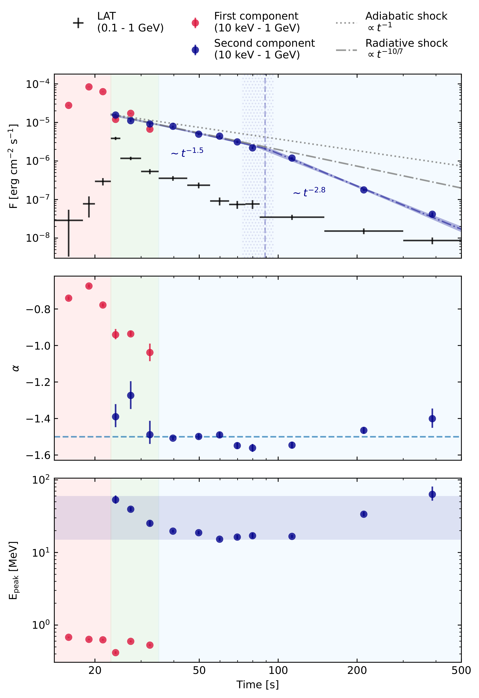
图注：Temporal evolution of the first component (prompt emission, red dots) and second component (afterglow, blue dots). Background colours mark the prompt, transition and afterglow-dominated phases defined in Fig.~\(\ref{fig:time_res_spectral_analysis+LC}.\) \(\textit{Upper panel:}\) Bolometric \(10\) keV--\(1\) GeV light curve. The second component is fitted with a broken power law. The dashed curve shows the posterior median and the shaded region shows the \(1\sigma\) interval. The break time and its uncertainty are marked by the vertical dashed line and shaded band. Black symbols show the LAT-only \(0.1\)--\(1\) GeV flux for comparison. \(\textit{Middle panel:}\) Low-energy photon index of the spectral model. The dashed line marks \(\alpha=-1.5\). \(\textit{Lower panel:}\) Evolution of the spectral peak energy. The horizontal band marks the 15--60 MeV range, where the peak energy remains throughout the emission.
对应解读：对应“关键图表逐图导读”的图3、模型拟合段落中的断裂幂律光变，以及“建议重点查看的图表”第3、4项。
入选理由：这是支撑论文核心结论最直接的图：同时展示第二成分的10 keV--1 GeV bolometric 光变、断裂幂律拟合、断裂时间及1σ不确定性，并给出谱峰能量随时间保持在15--60 MeV附近。它把日报强调的约50 MeV谱峰、前段约t^-1.5和后段约t^-2.8超快速衰减集中在一张图中，比单纯的计数率或示意图更关键。
来源与置信度：\(arxiv_source\)；high；\(arxiv_source\) / \(SN_260226A.tex\):figure[4]
Fig02

图注：Broadband time-resolved spectral evolution of GRB\,260226A. \(\textit{Upper panel:}\) \gbm\ count-rate light curve and \lat\ flux light curve. Vertical dashed lines delimit the spectral time bins. Prompt, transition and afterglow-dominated intervals are shown in red, green and blue, respectively. \(\textit{Lower panel:}\) Best-fit models and \(1\sigma\) confidence regions for the prompt, transition and afterglow-dominated spectra. The dashed vertical line at 3 MeV indicates the approximate energy separating the domains where the prompt and high-energy afterglow components dominate. Coloured bands indicate the main energy ranges covered by NaI, BGO, LLE and LAT data used in the fits.
对应解读：对应“关键图表逐图导读”的图1和图2，以及“建议重点查看的图表”第2、3项。
入选理由：该图把GBM计数率、LAT通量光变和时间分辨宽能段谱拟合放在一起，明确标出prompt、transition和afterglow-dominated时间区间。它最适合检查keV--MeV提示辐射与MeV--GeV高能成分的相对时序，以及高能余辉成分是否在宽能段谱中被真实约束而非仅由模型外推决定。
来源与置信度：\(arxiv_source\)；high；\(arxiv_source\) / \(SN_260226A.tex\):figure[2]
Fig06
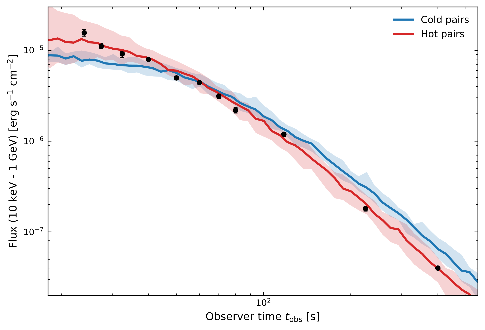
图注：\(\textbf{Pair-loaded EIC light-curve comparison.}\) Observed 10\,keV--1\,GeV flux of GRB~260226A compared with the light curves of the toy pair-loaded external inverse Compton model. The blue band shows cold pair-loading prescription \(\cite{Beloborodov2005}\) and the red region shows the adopted hot pairs prescription \(\cite{Beloborodov2014}.\) Solid curves indicate the posterior medians and shaded regions show the central 90\% posterior intervals.
对应解读：对应“关键图表逐图导读”的图5、模型拟合段落中的pair-loaded external inverse Compton模型，以及“建议重点查看的图表”第6项。
入选理由：这是检验作者物理解读的核心模型对比图，直接把观测到的10 keV--1 GeV余辉通量与pair-loaded EIC toy model的冷前沿和热前沿方案比较，并给出90%后验区间。它能判断外逆康普顿模型是否真的解释快速衰减和通量归一化，而不只是概念上可行。
来源与置信度：\(arxiv_source\)；high；\(arxiv_source\) / \(SN_260226A.tex\):figure[6]
Fig10
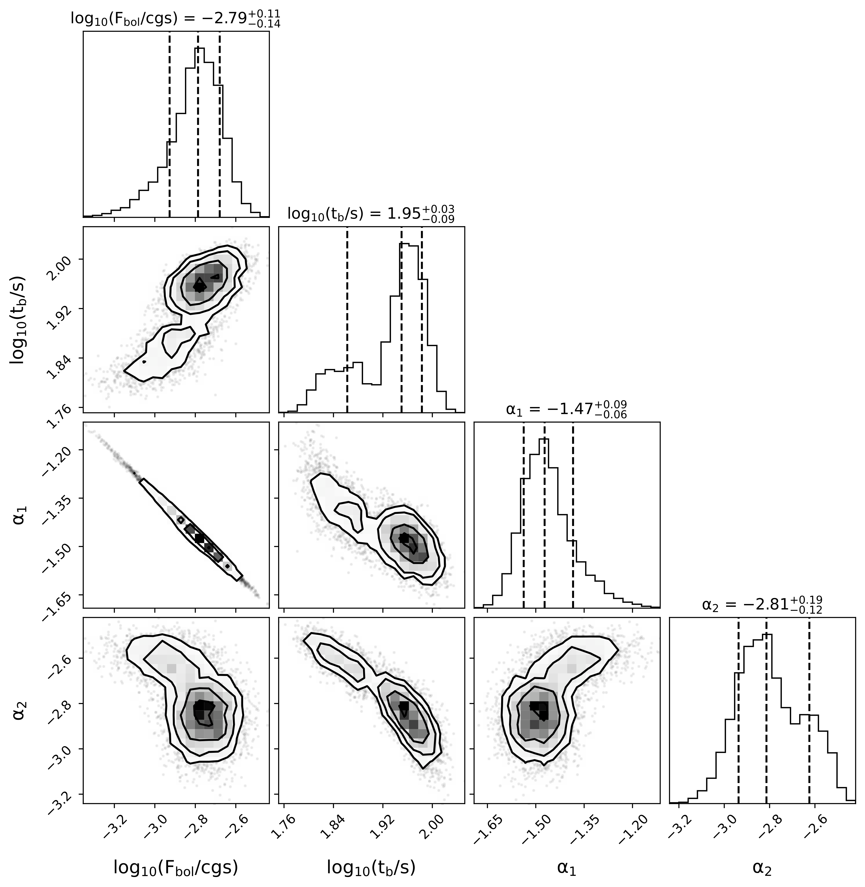
图注：Posterior samples for the bolometric flux evolution of the second component, modelled with a broken power law. The dashed line in the middle represents the median of the distribution, whereas, the two dashed lines around represents the 16\% and 84\% containment value of the parameters. The contours represent the 1, 2 and 3 $\sigma$ containment-region for the 2 dimensional plots.
对应解读：对应“建议重点查看的图表”第7项，以及模型拟合段落中关于断裂时间、前后衰减指数和归一化联合置信区间的讨论。
入选理由：该图给出第二成分断裂幂律光变的后验样本和1、2、3σ二维置信区域，正好用于检查日报提醒的t_b与后段斜率退化问题。相比只看Fig04中的最佳拟合曲线，Fig10更能评估超快速衰减结论的统计稳健性。
来源与置信度：\(arxiv_source\)；high；\(arxiv_source\) / \(SN_260226A.tex\):figure[10]
Fig01
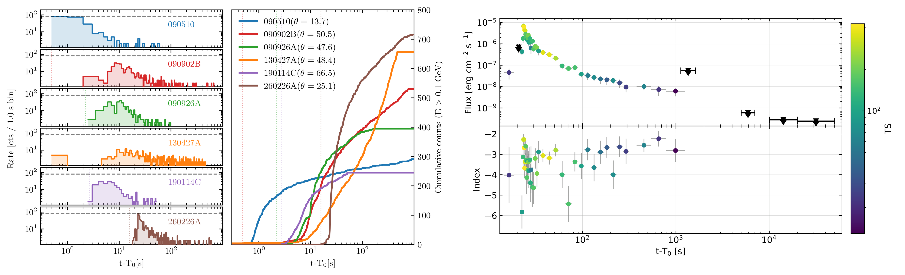
图注：GeV emission of GRB\,260226A compared with the previous brightest \(\textit{Fermi}/LAT\) bursts from the second \(\textit{Fermi}/LAT\) GRB catalog \(\citep{Ajello:2019zki}.\) \(\textit{Upper left:}\) LAT count-rate light curves with 1 s binning for GRB\,260226A and GRBs 090510, 090902B, 090926A, 130427A and 190114C. Vertical dotted lines mark the LAT onset relative to the GBM trigger, and horizontal dashed lines show the peak count rate of GRB\,260226A. \(\textit{Upper right:}\) Cumulative LAT counts above 0.1 GeV. GRB\,260226A reaches more than 700 photons within the first \(10^3\) s. The parameter $\theta$ indicates the boresight angle, namely, the angle between the source position and the LAT boresight. \(\textit{Lower panels:}\) Time-resolved LAT \(0.1\)--\(1\) GeV flux and photon index for GRB\,260226A. Flux points are colored by the test statistic from the likelihood analysis; triangles mark 95\% confidence upper limits for bins with TS \(<9\). The high-energy emission peaks around \(T_0+23\)--\(25\) s and then fades rapidly.
对应解读：对应“建议重点查看的图表”第1项，以及“关键图表逐图导读”的图1中关于LAT高能光子统计量和高能发射持续性的讨论。
入选理由：Fig01展示GRB 260226A相对于其他LAT亮暴的0.1 GeV以上计数率、累计光子数、LAT通量和光子指数演化，直接证明该事件拥有异常丰富的高能光子统计量。它是理解为什么本文能做早期余辉时间分辨谱重建的基础图。
来源与置信度：\(arxiv_source\)；high；\(arxiv_source\) / \(SN_260226A.tex\):figure[1]
Fig11
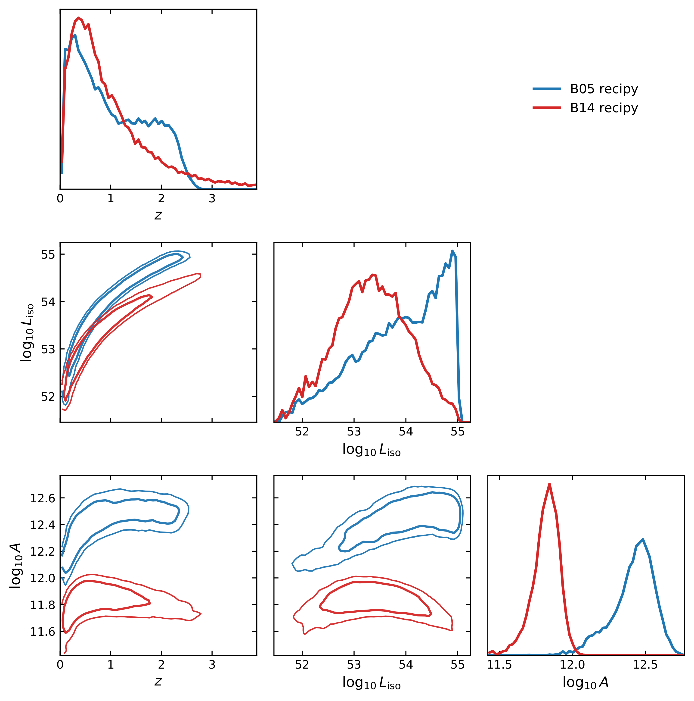
图注：\(\textbf{Posterior distributions of the pair-loaded EIC model.}\) Joint posterior distributions of redshift ($z$), $\log_{10}L_{\rm GRB}$ and $\log_{10}A$ for the B05 cold-front and B14 hot-front pair-loading prescriptions. Contours enclose 68\% and 90\% of the posterior probability. The two prescriptions occupy different regions of parameter space, illustrating the systematic uncertainty associated with the radiation front pair-loading calculation.
对应解读：对应“关键图表逐图导读”的图6、模型拟合段落中关于EIC模型参数约束和系统误差的讨论。
入选理由：该图展示pair-loaded EIC模型中红移、GRB光度和风密度参数A的联合后验，并比较B05冷前沿与B14热前沿两种pair-loading处方。它对判断外逆康普顿解释是否受到数据约束、以及pair-loading理论处方带来的系统不确定性非常重要。
来源与置信度：\(arxiv_source\)；high；\(arxiv_source\) / \(SN_260226A.tex\):figure[11]
强相关工作
这篇工作应放在 Fermi LAT GRB 高能余辉研究的脉络中读。GRB 080916C、GRB 090510、GRB 090902B、GRB 130427A 等事件曾推动“GeV 延迟辐射是否为外激波同步辐射”的讨论。与这些同类 LAT 亮暴相比，GRB 260226A 的突出点是早期光子统计量特别高，允许重建余辉从提示阶段中冒出的细节，而不只是晚期 GeV 光变。
理论上，它与标准外激波闭合关系、同步辐射最大能量限制、逆康普顿冷却以及 Beloborodov 式的 prompt-radiation pair loading 问题相连。相反观点通常会尝试用标准同步辐射、喷流结构、高纬度辐射或提示辐射高能尾解释 LAT 光子。建议检索关键词："GRB 260226A Fermi LAT afterglow"、"early GeV afterglow external inverse Compton"、"pair loaded wind gamma-ray burst"、"maximum synchrotron photon energy GRB LAT"、"Fermi LAT GRB 130427A afterglow"。由于 GRB 260226A 是具名新事件，除本文 arXiv 页面外，若需同一事件材料，应检索 GCN Circulars、Fermi LAT/GBM GRB catalog 和 NASA ADS；这里不编造尚未核实的 GCN 链接。
同一事件 / 同类源线索：
相似工作：
基础理论 / 方法工作：
相反观点 / 张力线索：
2. Gamma-ray burst progenitors revisited
- 来源：arXiv / astro-ph.HE
- 链接：https://arxiv.org/abs/2607.26133v1
- 作者：Andrew J. Levan, Jillian C. Rastinejad, Helena-Margaret S. Grabham, Daniele B. Malesani, Nial R. Tanvir, Eric Burns, Benjamin P. Gompertz, Gavin P. Lamb
- 评分：novelty 8/10，importance 9/10，relevance 10/10，final 10.00/10
- 推荐理由：Major GRB progenitor-population study arguing many nearby long GRBs may be merger-origin events; highly relevant to GRB physics, kilonovae, GW coincidences, and multimessenger interpretation.
中文题目：重新审视伽马暴前身星：低红移长暴中有多少其实来自并合？
做了什么：这篇文章重新检查了低红移伽马暴的“持续时间—前身星”对应关系。传统上，长时标伽马暴通常归因于大质量恒星坍缩并伴随超新星，短时标伽马暴通常归因于致密双星并合并伴随千新星。作者收集 Swift 在 \(z<0.3\) 探测到、可对前身星作约束的伽马暴样本，发现 \(8\) 个短暴和 \(21\) 个长暴；其中 \(9\) 个长暴没有超新星、可能有千新星或位于低恒星形成宿主中，占低红移全部伽马暴约 \(31\%\pm9\%\)。文章认为，相当一部分附近长暴很可能不是大质量恒星坍缩，而是致密并合事件。
为什么重要：这项工作重要在于它挑战了伽马暴研究中最常用的经验分类：用 \(T_{90}\) 长短直接映射前身星类型。若低红移长暴中有 \(30\%-70\%\) 可能来自并合，那么引力波电磁对应体搜索、千新星发生率、重元素 \(r\)-过程产额估计，以及未来宽视场高能卫星的触发分类都会受到影响。
理论 / 观测 / 仪器方法价值：文章的价值不在于提出一个全新的辐射模型，而在于系统整理了近邻伽马暴中能真正区分前身星的观测证据：超新星深限、千新星候选、宿主星系恒星形成性质、余辉亮度分布和体积率估计。它把过去被视为个例的“长暴但无超新星”事件放到一个统一的率和样本框架中。
为什么应该关注：如果你做伽马暴、千新星、引力波、多信使或化学演化，这篇文章值得关注，因为它提醒我们：低红移长暴样本不是一个干净的坍缩星样本。用长暴率推恒星死亡率、用短暴率推并合率、或用单一触发分类指导引力波 follow-up，都会低估混合前身星带来的选择效应和系统误差。
展开详细解读：文章讲解、背景、理论、重点章节、图表与相关工作
文章详细讲解
科学问题：伽马暴长期按 \(T_{90}\) 分成短暴和长暴，粗略边界在 \(T_{90}\approx2\,\mathrm{s}\)。这个经验划分在统计上有效，但物理上并不等同于“短暴等于并合、长暴等于坍缩星”。近年出现的 GRB 211211A、GRB 230307A 等事件具有长时标伽马辐射，却显示千新星证据或缺少普通长暴应有的明亮超新星，这迫使人们重新评估低红移长暴中并合前身星的比例。本文的核心问题是：这些跨越传统二分法的事件是少数离群点，还是低红移伽马暴族群中不可忽略的一部分？
作者怎么做：作者首先构建 Swift 探测到的 \(z<0.3\) 伽马暴样本，并只关注那些对前身星能给出观测约束的事件。这个限制很关键，因为简单统计所有触发事件会被红移缺失、宿主识别、余辉观测深度和超新星搜索不均匀性严重污染。样本中有 \(8\) 个短暴和 \(21\) 个长暴。作者进一步标记长暴中是否有深的超新星上限、是否存在千新星证据、是否位于低恒星形成或静止宿主中，并把这些作为“非大质量恒星坍缩”前身星的证据链。
关键结果：在 \(z<0.3\) 的 Swift 样本中，\(21\) 个长暴里有 \(9\) 个满足超新星缺失、千新星证据或静止宿主关联等条件。按全部低红移伽马暴计，这约为 \(31\%\pm9\%\)。短暴方面，\(z<0.3\) 样本中没有短暴显示超新星对应体，这与传统并合解释一致。作者扩展到 \(z<0.5\) 以及其他伽马射线望远镜样本后，得到相近的总体图像，但也强调更远距离样本中前身星约束明显变差。长而无超新星的事件平均余辉更暗，宿主星系恒星形成活动更弱，这与致密并合的环境预期更接近。
体积率方面，作者估计短暴和无超新星长暴的近邻视向内率都在 \(\sim0.5-2.5\,\mathrm{Gpc^{-3}\,yr^{-1}}\) 量级。这个数值不是总并合率，因为还没有校正喷流张角和离轴事件；它更接近“能以伽马暴形式被我们看到的 on-axis 率”。他们还检查完整 Swift 目录中可能遗漏的低红移宿主，认为当前样本可能只有约 \(50\%\) 完备。因此，若无超新星长暴确实来自并合，则低红移 Swift 长暴中由并合贡献的比例可能达到 \(30\%-70\%\)。
局限和下一步：这篇文章的结论依赖于异质观测资料，包括不同事件的超新星搜索深度、宿主关联可靠性、千新星识别标准和红移完备性。某些长暴无超新星也可能来自低镍产额坍缩、尘埃遮蔽、观测窗口不佳或异常喷流物理，而不是并合。下一步需要统一的低红移伽马暴后随观测策略：深光学近红外监测、宿主星系积分场光谱、标准化的超新星上限和千新星模板拟合，以及与引力波探测运行期的联合触发统计。
关键结果是怎么做出来的
样本选择是本文证据链的第一环。作者从 Swift 已知红移伽马暴中取 \(z<0.3\) 事件，得到 \(8\) 个短暴和 \(21\) 个长暴。这里的重点不是简单按 \(T_{90}\) 分类，而是要求事件足够近，使得超新星或千新星对应体有机会被观测到；否则“没有看到超新星”不能转化为物理约束。低红移限制降低了光度距离和 \(k\)-修正的不确定性，也让宿主星系性质更容易测量。
关键计数来自 \(21\) 个长暴中的 \(9\) 个“非标准长暴”候选。这些事件的判据包括：有足够深的超新星上限、存在千新星样光学/近红外成分，或与静止/低恒星形成宿主星系关联。作者报告这些对象约占 \(z<0.3\) 全部伽马暴的 \(31\%\pm9\%\)。这个误差可理解为小数统计下的二项分布或近似 Poisson 误差，核心信息是该比例不是 \(1\%\) 级别的小尾巴，而是足以改变族群解释的成分。
统计解释上，文章没有把单个事件的前身星概率都视为确定标签，而是用几类观测约束合并判断。短暴样本中没有超新星对应体，提供了一个对照：若短暴并合解释正确，则无超新星是自然结果；而长暴中大量无超新星事件则说明 \(T_{90}\) 分类与前身星分类发生了明显错位。作者还比较了有超新星长暴和无超新星长暴的余辉亮度与宿主性质，发现后者平均更暗、宿主恒星形成更弱，这些趋势支持并合解释。
文章的率估计是第二个关键结果。作者把观测到的事件数除以有效体积、观测时间和天空覆盖等因子，得到短暴与无超新星长暴的视向内体积率均约为 \(\sim0.5-2.5\,\mathrm{Gpc^{-3}\,yr^{-1}}\)。由于没有完整校正喷流束流因子，这不是宇宙中真实并合率，而是可被高能探测器以伽马暴看到的 on-axis 事件率。两类事件的 on-axis 率相近，是本文最值得关注的结论之一。
稳健性方面，作者将样本扩展到 \(z<0.5\) 和其他伽马射线探测器，发现总体趋势仍存在，但前身星约束变弱。这是合理的：距离增加后，同样的观测深度对应更浅的绝对星等上限，千新星更容易漏检，宿主关联概率也更复杂。作者还通过检查 Swift 完整目录的潜在低红移宿主，估计 \(z<0.3\) 样本可能约 \(50\%\) 完备。这个完备性修正使 \(30\%-70\%\) 的并合贡献区间具有明显系统误差，但也说明结论不是由单个著名事件驱动。
展开背景、理论、公式、模型、章节和图表导读
背景知识
伽马暴分类的历史起点是持续时间和谱硬度分布。BATSE 时代发现 \(T_{90}\) 分布近似双峰，短硬暴和长软暴在统计上分离。随后，长暴与 Ic-BL 型超新星的关联、短暴与椭圆或低恒星形成宿主的关联，形成了“长暴等于坍缩星、短暴等于并合”的工作图像。这个图像很有用，但从来不是严格的一一映射。
长暴的坍缩星模型依赖快速旋转大质量恒星形成中心引擎，喷流穿透恒星包层后产生长时标伽马辐射，外层物质爆炸形成超新星。因此低红移普通长暴通常应在数天到数十天尺度出现明亮超新星隆起。若一个足够近、观测足够深的长暴没有超新星，就会对坍缩星解释构成压力，除非可以用尘埃、低能爆炸或观测覆盖不充分解释。
短暴的并合模型则来自中子星—中子星或中子星—黑洞系统。并合后可能形成短时标相对论喷流和富中子抛射物，后者通过放射性 \(r\)-过程衰变产生千新星。GW170817/GRB 170817A 将这个图像直接联系到引力波观测，但 GRB 170817A 是离轴、低光度事件；它并不能穷尽并合产生伽马暴的所有表现形式。
为什么现在值得重新看？一方面，低红移长暴无超新星的个例已经积累到不能忽略；另一方面，近红外时域观测和多信使触发使千新星识别能力提高。GRB 211211A、GRB 230307A 等长时标但带千新星迹象的事件提示，并合中心引擎可以产生持续更久的高能辐射，可能通过长寿命磁星、fallback accretion 或复杂喷流结构实现。
该领域常见误区有三点。第一，把 \(T_{90}=2\,\mathrm{s}\) 当成物理边界；实际上 \(T_{90}\) 依赖能段、探测器灵敏度和红移。第二，把“无超新星”直接等同于“并合”；实际上必须要求超新星上限足够深，并排除尘埃和宿主背景问题。第三，把观测到的伽马暴率直接等同于真实事件率；喷流束流、触发阈值、红移完备性和后随观测选择都会改变推断。
基础理论 / 方法脉络
从物理图像看，伽马暴观测首先给出高能光变和谱性质，最常用的时间量是 \(T_{90}\)，即探测到 \(5\%\) 到 \(95\%\) 累积计数所需时间。\(T_{90}\) 是观测量，不是中心引擎寿命的直接测量；它受探测器能段、背景估计、弱尾辐射和红移时间膨胀影响。本文正是利用低红移样本来减少红移和对应体探测方面的偏差。
前身星诊断依赖多波段后随观测。坍缩星长暴应有相对明亮的 Ic 型或 Ic-BL 型超新星，峰值通常出现在静止系十几天量级；并合事件则预期有更快、更红、更低质量抛射物驱动的千新星。超新星和千新星都叠加在余辉之上，因此需要把余辉幂律衰减、宿主星系光和热瞬变成分分离开。
宿主星系也是关键量。大质量恒星坍缩要求短寿命前身星，因此更偏向恒星形成活跃区域和较年轻星族；致密双星并合有延迟时间分布，可发生在低恒星形成宿主、星系外偏移较大位置，甚至静止星系中。本文用宿主恒星形成性质和余辉亮度分布作为对超新星约束的独立支持，而不是只看单一光变特征。
率估计的基础是把样本计数转为体积率。对于低红移 \(z<0.3\)，宇宙学体积、观测时长、天空覆盖和探测效率都要进入估算。由于伽马暴有强束流，观测到的 on-axis 率只是总事件率乘以束流因子。不同前身星可能有不同喷流开角和光度函数，因此短暴和无超新星长暴的 on-axis 率相近，并不必然意味着真实并合通道的总率完全相同。
主要退化关系包括：暗超新星与并合千新星的光变退化、尘埃消光与本征低亮度退化、宿主关联概率与真实物理归属退化、以及 \(T_{90}\) 与中心引擎活动时标退化。本文的重要性在于把这些退化放到族群统计中处理，而不是把每个事件孤立解释。
公式与推导
第一步是定义持续时间分类的观测量。若 \(C(t)\) 是背景扣除后的累积计数，\(C_{\rm tot}\) 是总计数，则 \(T_{90}\) 满足
这里 \(p=0.05\) 或 \(0.95\)。这个定义说明 \(T_{90}\) 是计数统计和仪器能段相关的量，而非前身星的唯一物理标签。
第二步是把观测时标转到静止系。对红移为 \(z\) 的事件，静止系持续时间为
低红移样本中修正较小，但仍影响靠近 \(2\,\mathrm{s}\) 边界的事件分类。本文关注的核心不是边界附近短长切换，而是明显长时标事件却缺少坍缩星超新星。
第三步是将对应体通量转换为光度或绝对星等。若观测通量密度为 \(F_{\nu_{\rm obs}}\)，光度距离为 \(D_L\)，则静止系谱光度近似为
这里 \(\nu_{\rm rest}=(1+z)\nu_{\rm obs}\)。这一步决定了超新星上限是否足够深，能否排除普通长暴相关超新星。
第四步是余辉的基本拟合形式。光学或 X 射线余辉常用
其中 \(\alpha\) 是时间衰减指数，\(\beta\) 是谱指数，\(F_{\nu,\rm SN/KN}\) 是热瞬变成分，\(F_{\nu,\rm host}\) 是宿主贡献。无超新星结论要求在扣除余辉和宿主后，超新星模板仍被排除。
第五步是用上限约束超新星亮度。若某时刻观测给出极限星等 \(m_{\rm lim}\)，距离模数为 \(\mu\)，消光为 \(A_\lambda\)，\(k\)-修正为 \(K_\lambda\)，则绝对星等上限为
只有当 \(M_{\rm lim}\) 暗于典型 GRB-SN 峰值足够多时，“无超新星”才是强约束。
第六步是二项比例估计。若 \(N\) 个低红移伽马暴中有 \(k\) 个属于无超新星长暴或并合候选，比例为
本文报告的 \(31\%\pm9\%\) 可按这类小样本比例误差理解，但严格置信区间可用 beta 分布或 Poisson-binomial 方法给出。
第七步是体积率估计。对红移上限 \(z_{\max}\) 内的有效探测体积 \(V_{\rm eff}\)、观测时长 \(T_{\rm obs}\)、天空覆盖 \(\Omega/4\pi\) 和效率 \(\epsilon\)，视向内率可写成
本文得到短暴和无超新星长暴的 \(R_{\rm on}\) 均为 \(\sim0.5-2.5\,\mathrm{Gpc^{-3}\,yr^{-1}}\) 量级。
第八步是束流修正。若喷流半张角为 \(\theta_j\)，束流因子近似为
因此 on-axis 率相近并不自动等于真实总率相近；不同通道的 \(\theta_j\)、光度函数和离轴可见性会引入系统差异。
第九步是宿主关联的概率思想。若候选宿主在角距离 \(r\) 内、表面数密度为 \(\Sigma( 低 \(P_{\rm cc}\) 支持宿主关联可靠；若宿主是静止星系或低恒星形成星系，则会增强并合前身星解释。 这类工作的拟合首先发生在单个事件层面：余辉光变通常用单幂律、断裂幂律或多波段同步辐射模型描述，宿主光由晚期成像或模板扣除，剩余成分再与超新星或千新星模板比较。本文汇总已有事件约束时，核心拟合量包括余辉衰减指数 \(\alpha\)、谱指数 \(\beta\)、宿主消光 \(A_V\)、热瞬变峰值亮度和峰值时间。 参数估计上，最基本的似然来自多波段光度点和上限。对探测点可用 Gaussian likelihood，对非探测点应使用截断似然或 survival analysis，而不是简单当成零通量。超新星排除的可信度取决于模型残差：如果加上典型 GRB-SN 模板会显著超过观测上限，就能排除普通坍缩星超新星；如果上限只略低于模板，结论就脆弱。 族群层面的拟合或推断则包括比例 \(f\)、体积率 \(R_{\rm on}\) 和完备性 \(c\)。小样本下，\(k/N\) 的误差并不完全对称，最好用 beta-binomial 后验或 Poisson 计数似然。本文报告的比例和率应理解为带有较大系统项的估计，而非最终精确定标。 主要退化关系包括超新星亮度与宿主消光、千新星颜色与余辉谱斜率、红移不确定与绝对星等上限、宿主星形成率与局部爆发环境、以及触发阈值与伽马暴持续时间。特别是暗余辉事件更难获得红移和深光变，可能导致样本偏向于观测条件较好的对象。 实际应用上，这篇文章建议未来分类不应只用 \(T_{90}\)，而应做多维分类：高能持续时间、谱硬度、光变结构、余辉亮度、宿主类型、超新星/千新星约束和引力波一致性。对于引力波运行期，长时标伽马触发也不应被自动排除在并合候选之外。 数据和样本部分应首先看作者如何定义 \(z<0.3\) 的 Swift 样本，哪些事件进入 \(8\) 个短暴和 \(21\) 个长暴，哪些事件因红移、宿主或 follow-up 不足被排除。读者应特别检查“可约束前身星”的标准是否一致。 前身星诊断部分是全文核心。这里应关注作者如何把深超新星上限、千新星证据和静止宿主关联合并为无超新星长暴或并合候选。不同证据强度不完全等价，读者要区分“强排除超新星”和“环境上更像并合”。 比较有超新星长暴与无超新星长暴的部分值得细读。余辉亮度、宿主星形成率、宿主类型和可能的偏移量能提供独立信息。如果这些分布有系统差异，就说明无超新星长暴不是普通长暴的观测遗漏版本。 率估计部分要看作者采用的有效体积、观测时间、天空覆盖和完备性假设。\(\sim0.5-2.5\,\mathrm{Gpc^{-3}\,yr^{-1}}\) 是 on-axis 率，不要误读为总并合率。 讨论和稳健性部分应关注 \(z<0.5\) 扩展样本、其他伽马射线望远镜样本和 Swift 完整目录潜在低红移宿主搜索。这里决定结论是否只是由少数著名事件驱动，还是对样本边界变化相对稳定。 低红移样本表：检查每个事件的 \(z\)、\(T_{90}\)、短/长分类、是否有超新星、是否有千新星证据、宿主类型和观测深度。 \(T_{90}\) 或持续时间—前身星诊断图：看长时标无超新星事件是否分布在传统长暴区间，而不是都贴近 \(2\,\mathrm{s}\) 边界。 超新星上限或光变模板图：重点看观测上限相对于典型 GRB-SN 模板的位置，以及是否覆盖了静止系峰值附近。 余辉亮度比较图：检查无超新星长暴的光学或 X 射线余辉是否系统更暗，误差条和上限如何处理。 宿主星系性质图：看恒星形成率、比恒星形成率、星系质量或静止/星形成分类是否支持并合环境。 体积率或比例估计图：检查短暴与无超新星长暴的 \(R_{\rm on}\) 置信区间是否重叠，以及完备性修正如何改变结论。 完备性诊断：若有 Swift 目录潜在低红移宿主搜索图或表，应看遗漏事件是否可能系统性改变 \(30\%-70\%\) 的并合贡献估计。 图 1：若论文给出低红移事件分布图，横轴通常可能是 \(T_{90}\) 或红移 \(z\)，纵轴可能是事件类别、伽马暴能量或宿主性质。读图时要看无超新星长暴是否真的处在长持续时间区域，而非分类边界附近。陷阱是把观测系 \(T_{90}\) 与静止系 \(T_{90}\) 混用。 图 2：若展示光学/近红外光变和超新星模板，横轴应为爆发后时间，纵轴为星等或通量。普通 GRB-SN 模板若明显高于观测上限，就支持无超新星结论；若只在单一波段或非峰值时间受限，则约束较弱。注意星等轴反向和宿主扣除是否完成。 图 3：余辉亮度比较图可能把有超新星长暴、无超新星长暴和短暴放在同一时间标准化后比较。重点看分布中位数、离散度和上限箭头。暗余辉既可能是低密度并合环境，也可能是消光或观测延迟造成的选择效应。 图 4：宿主星系图可能显示恒星形成率、比恒星形成率或颜色—质量平面。无超新星长暴若靠近静止星系或低星形成区域，就支持非大质量恒星前身星。读图陷阱是全球宿主性质不等于爆发局部环境；若有局部分辨光谱或偏移量，应优先看这些诊断。 图 5：率估计图通常会以柱状图或置信区间比较短暴、有超新星长暴和无超新星长暴。坐标轴若是 \(\mathrm{Gpc^{-3}\,yr^{-1}}\)，要确认是否为 on-axis 率。不要把未束流修正的视向内率直接拿来和 LIGO/Virgo/KAGRA 的总并合率比较。 图 6：完备性或扩展样本图若存在，应看 \(z<0.3\) 与 \(z<0.5\) 结果是否一致。随着红移增加，超新星和千新星约束会变浅，所以候选比例下降或不确定性变大不一定反驳低红移结论，而可能反映选择效应。 Fig03 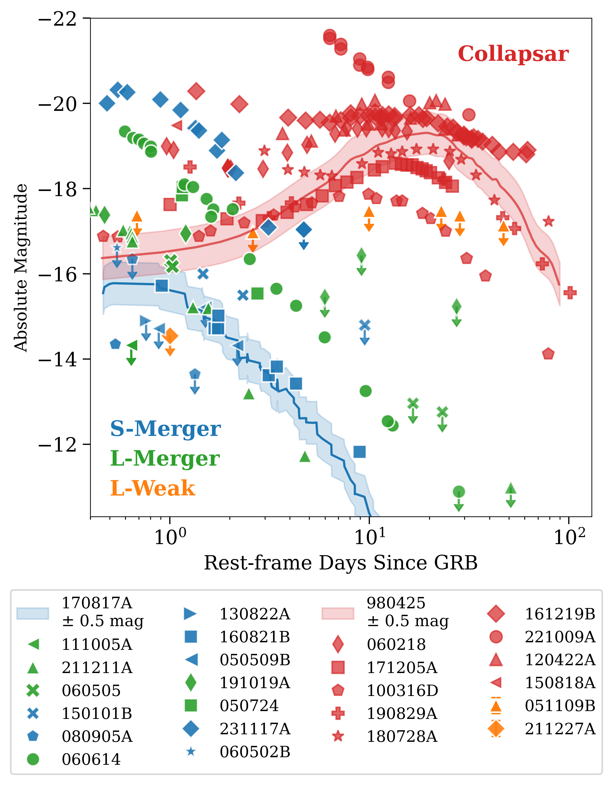 Fig01 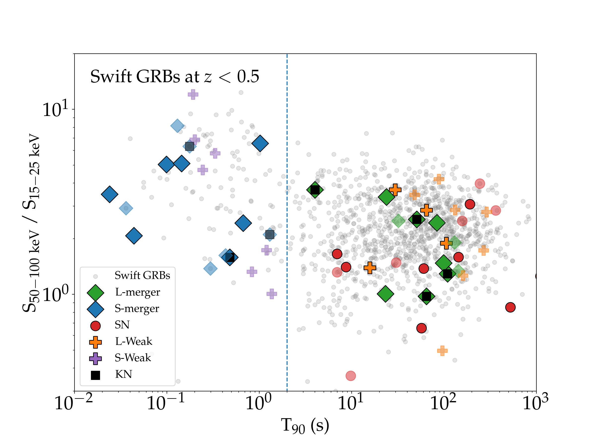 Fig11 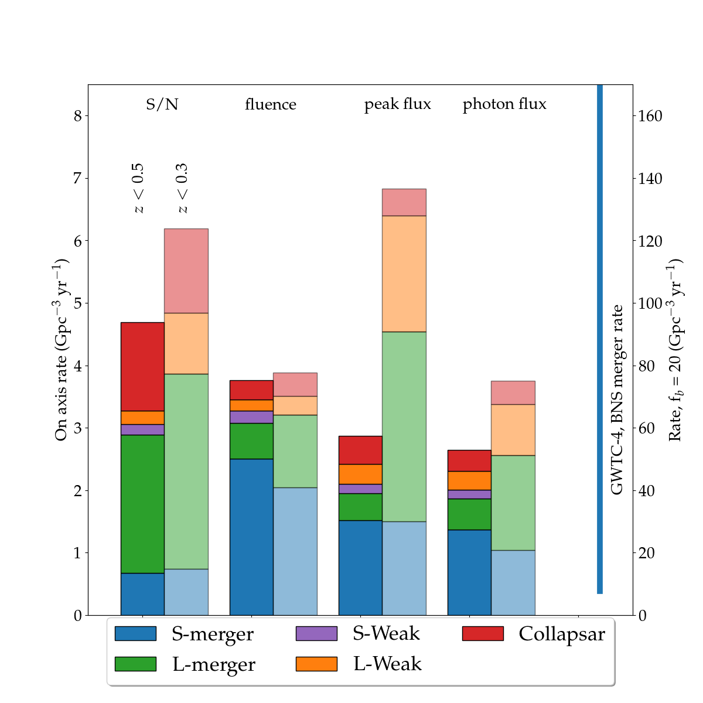 Fig10 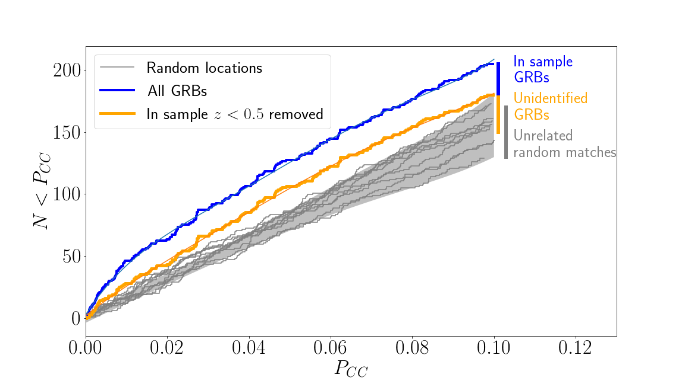 Fig08 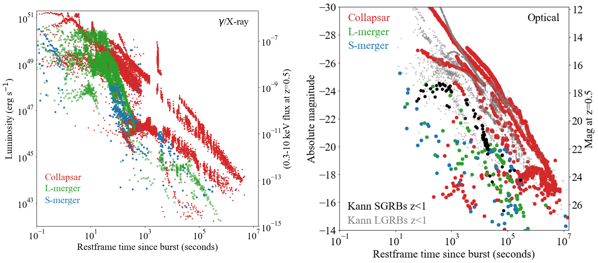 Fig09 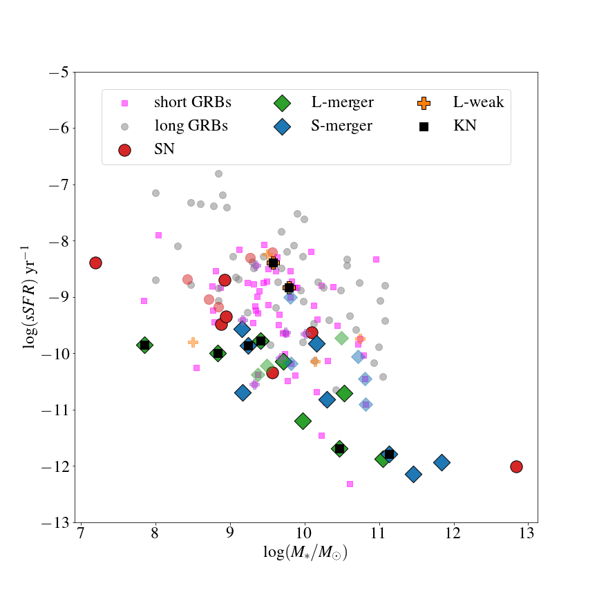 这篇工作与同一类“长时标但疑似并合”的事件研究直接相关，尤其是 GRB 060614、GRB 211211A 和 GRB 230307A。GRB 060614 是早期长暴无明亮超新星的代表；GRB 211211A 和 GRB 230307A 则让千新星解释重新受到重视。建议检索关键词包括 “long duration gamma-ray burst kilonova”, “supernova-less long GRB”, “GRB 060614”, “GRB 211211A kilonova”, “GRB 230307A kilonova”。 它也与伽马暴基础分类和多信使天文学相关。BATSE 的双峰持续时间分布奠定了短/长分类，坍缩星模型解释了普通长暴与 Ic-BL 超新星的联系，致密双星并合模型解释了短暴、千新星和引力波。本文的张力在于：这些理论通道都成立，但观测分类变量 \(T_{90}\) 不能再被当作前身星标签。建议同时检索 “GRB duration classification progenitor”, “collapsar gamma-ray burst supernova”, “compact merger extended emission GRB”, “on-axis GRB rate beaming correction”。 同一事件 / 同类源线索： 相似工作： 基础理论 / 方法工作： 相反观点 / 张力线索： （未提供） 中文题目：用 SDSS-V 光谱重新分解 Fermi 探测耀变体：喷流连续谱、宿主星系与发射线的多成分分类 做了什么：这篇文章针对一个很实际但影响很大的问题：标准 SDSS 自动光谱管线的模板库主要面向银河系恒星、星系和普通类星体，缺少耀变体中常见的非热喷流幂律连续谱，因此会把一部分 Fermi 伽马射线源的光学对应体错误归类。作者从 SDSS-V DR20 中选出 746 个 Fermi/4FGL-DR4 伽马射线源的光学对应体，建立一个包含幂律喷流、宿主星系、类星体连续谱和谱线成分的多成分拟合管线，得到 707 个拟合良好的耀变体候选体。主要结果是：样本以“幂律加星系”“幂律加谱线”“幂律加 QSO”模型为主；原先被 SDSS 误分为银河系恒星的 88 个源中，96.6% 在 WISE 红外颜色上落入经典耀变体区域，90.9% 被重新归为 BL Lac 候选体；新的分类能恢复 BL Lac 与 FSRQ 在红移和伽马射线光度上的总体分离，但等值宽度分析显示大量个体对象并不服从简单的 \(|\mathrm{EW}|=5\,\mathrm{\AA}\) 二分法。 为什么重要：Fermi 伽马射线源的物理解释高度依赖光学对应体的红移、谱线和类别；如果光谱管线把喷流主导源误当成恒星或普通类星体，后续的光度函数、宇宙演化、EBL 吸收和多信使关联都会被系统性污染。这篇工作的重要性不在于发现单个奇特源，而在于给出一套更适合耀变体的光谱分解框架，并量化了传统自动分类在喷流主导连续谱面前的失效方式。 理论 / 观测 / 仪器方法价值：对观测而言，它提高了 Fermi 耀变体光学分类和红移估计的可靠性，特别是拯救了被 SDSS 标成恒星的无特征或弱线 BL Lac 候选体。对理论而言，它提醒我们 BL Lac 与 FSRQ 可能不是由一个硬性等值宽度阈值切开的两类，而是在喷流稀释、吸积盘/宽线区强度、宿主星系贡献和取向效应共同作用下形成连续分布。对方法而言，它展示了面向特殊天体族群构建物理模板库，比直接套用通用巡天管线更稳健。 为什么应该关注：如果你使用 4FGL、3FHL、SDSS、WISE 或其他多波段目录研究活动星系核，这篇文章直接关系到样本纯度、红移可靠性和类别标签是否可信。尤其在做耀变体光度函数、BL Lac/FSRQ 演化比较、未关联 Fermi 源识别、TeV 候选源筛选或中微子候选对应体评估时，错误的光学分类会传导到物理结论。本文提供的一个核心教训是：对喷流主导源，光谱看起来“像恒星”并不等于它真是恒星；需要把非热连续谱作为一等公民放进拟合模型。 科学问题：耀变体的光学光谱经常由相对论喷流的非热连续谱主导，谱线可能很弱，宿主星系吸收线也可能被稀释。传统 SDSS 自动管线在模板库中没有显式的喷流幂律连续谱，因而会把低红移、弱线或无特征的耀变体拟合成恒星、星系或普通类星体。对 Fermi 伽马射线源来说，这不是分类表中的小错误，而会影响光学对应体确认、红移估计、伽马射线光度、源族群统计和后续物理解释。 作者怎么做：作者从 SDSS-V DR20 光谱数据库中选取 746 个 Fermi/4FGL-DR4 伽马射线源的光学对应体，开发了一个多成分、物理动机明确的光谱拟合管线。模型族包含喷流幂律连续谱、星系宿主模板、类星体模板和发射/吸收线成分，并根据拟合质量和谱线性质给出 BL Lac 候选体、FSRQ 候选体或过渡/混合性质的分类。这个方法的关键是允许光谱主导成分是 \(f_\lambda\propto \lambda^{-\alpha}\) 一类非热连续谱，而不是强迫所有目标在恒星、星系或普通 QSO 模板之间选择。 关键结果：746 个目标中有 707 个得到良好拟合，主导模型族为 Power-law+Galaxy，占 59.4%；Power-law+Lines，占 22.6%；Power-law+QSO，占 15.0%。这说明在 Fermi 耀变体样本中，喷流连续谱几乎是光学建模不可回避的核心成分。对 88 个原先被 SDSS 归为银河系恒星的对象，WISE 红外颜色提供了独立检验：其中 96.6% 位于经典耀变体红外颜色区域，90.9% 被新管线重新归为 BL Lac 候选体。这是本文最直接、最有说服力的证据链，表明误分类不是少数异常点，而是模板缺失导致的系统问题。 论文还比较了红移估计和物理分类的一致性。相对于 SDSS 管线，在与 3FHL 中 111 个源的验证样本比较时，新方法把灾难性红移失败率从 \(\eta=0.432\) 降到 \(\eta=0.387\)，相当于减少 10.4%。同时，新分类自然恢复了 BL Lac 与 FSRQ 在宇宙学距离上的已知分离，也得到约一个数量级的中位伽马射线光度差异。等值宽度层面，群体平均上经典 \(|\mathrm{EW}|=5\,\mathrm{\AA}\) 边界仍有统计意义：BL Lac 平均为 \(4.47\pm0.15\,\mathrm{\AA}\)，FSRQ 平均为 \(22.86\pm0.86\,\mathrm{\AA}\)。但个体层面有 49.5% 的 BL Lac 候选体超过该阈值，51.4% 同时显示发射和吸收特征，说明二元标签无法完整描述物理连续性。 局限和下一步：这项工作的局限主要来自光学单历元光谱和多波段非同时观测。耀变体具有强烈变源性，喷流连续谱增强时会稀释谱线，减弱时宿主星系和宽线区会显现，因此一个对象可能在不同状态下跨过 \(|\mathrm{EW}|=5\,\mathrm{\AA}\) 阈值。红移仍然是 BL Lac 研究中的硬问题，尤其对真正无特征光谱或只有弱吸收线的目标，模型拟合只能降低失败率而不能消除不确定性。下一步应把多历元光谱、偏振、射电谱指数、VLBI 形态、同时多波段 SED 和机器学习概率分类结合起来，把“BL Lac/FSRQ”标签转化为连续物理参数空间中的位置。 样本选择是本文证据链的起点。作者没有泛泛地重做 SDSS 光谱分类，而是聚焦于 SDSS-V DR20 中与 Fermi/4FGL-DR4 伽马射线源相匹配的 746 个光学对应体。这样的选择使问题非常明确：这些目标已经具有高能伽马射线源背景，光学光谱分类的任务不是一般巡天分类，而是识别相对论喷流主导的活动星系核候选体。最终 707 个目标被认为拟合良好，意味着主要统计结论来自一个规模足够大的、以 Fermi 源为先验的耀变体候选样本。 最关键的模型比较来自多成分拟合族的分布。Power-law+Galaxy 占 59.4%，Power-law+Lines 占 22.6%，Power-law+QSO 占 15.0%，说明大多数对象不能只靠普通星系或普通 QSO 模板解释；喷流幂律成分是拟合收敛和物理解释的共同核心。读者应重点看论文中给出的模型族统计表、典型谱例图和拟合残差：如果加入幂律后连续谱斜率、吸收线深度和发射线残差同时改善，那么分类改变就不是任意重贴标签。 误分类验证是本文最强的一组结果。88 个被 SDSS 原管线归为银河系恒星的目标中，96.6% 在 WISE 红外颜色图上落入经典耀变体区域，这相当于用独立波段支持光谱重分类。红外颜色诊断不依赖同一个光谱模板库，因此可视为外部一致性检验。进一步地，90.9% 的这批“恒星”被重分为 BL Lac 候选体，与弱线、喷流主导、光学连续谱近似无特征的预期一致。 红移验证使用了 3FHL 中 111 个源作为对照样本。作者报告灾难性失败率从 SDSS 管线的 \(\eta=0.432\) 降至新方法的 \(\eta=0.387\)，即降低 10.4%。这里读者应关心灾难性失败的定义、参考红移的来源、以及失败对象是否集中在无特征 BL Lac 或低信噪比光谱中。这个改进幅度不是压倒性的，但在耀变体红移本就困难的背景下是实际有用的，尤其对样本统计比对单源精确红移更重要。 分类物理性的证据来自红移、伽马射线光度和等值宽度三条线。新分类恢复了 BL Lac 与 FSRQ 的宇宙学分离，并给出约一个数量级的中位伽马射线光度差异，这符合 FSRQ 通常有更强辐射场和更高辐射功率的图像。等值宽度结果则更微妙：群体平均支持 \(|\mathrm{EW}|=5\,\mathrm{\AA}\) 的传统边界，但个体上近半 BL Lac 候选体超过阈值，并有大量对象同时出现发射和吸收特征。这个结果的统计意义在于，它既不简单否定传统分类，也明确指出硬阈值不能代表连续物理。 主要系统误差包括 Fermi 位置误差椭圆内的对应体混淆、SDSS 光谱孔径和信噪比差异、非同时 WISE/SDSS/Fermi 数据引入的变源性偏差、谱线拟合对连续谱模型的依赖、以及宿主星系模板和 QSO 模板不完备。稳健性应通过外部红外颜色、3FHL 红移对照、模型残差、谱线等值宽度分布和不同模型族之间的交叉检查来判断。读者不应只看最终标签，而应看每个标签背后的拟合残差、红移置信度和多波段一致性。 耀变体是喷流几乎沿视线方向指向观测者的活动星系核，观测上具有强非热连续谱、快速变源性、高偏振、平坦射电谱和强伽马射线辐射。由于相对论多普勒增亮，喷流辐射可以压倒吸积盘、宽线区和宿主星系的光学成分，使得常规光谱分类变得困难。Fermi-LAT 的 GeV 巡天极大扩展了耀变体样本，但很多高能源需要光学光谱来确认类别和红移。 历史上，耀变体通常分为 BL Lac 和 FSRQ。FSRQ 有明显宽发射线，通常吸积盘和宽线区辐射较强；BL Lac 的谱线弱或近乎无特征，喷流连续谱更容易主导光学波段。一个常用经验边界是静止系等值宽度 \(|\mathrm{EW}|=5\,\mathrm{\AA}\)，小于此值常归为 BL Lac，大于此值常归为 FSRQ。但这个标准本质上是观测表象而非基本物理边界，因为等值宽度会受到喷流连续谱状态、取向、宿主星系贡献和红移覆盖范围影响。 SDSS 这类大规模光谱巡天依靠自动管线处理海量目标，必须使用有限模板库和统一分类逻辑。对大多数恒星、星系和普通类星体，这种策略非常高效；但对耀变体，尤其是弱线、蓝色连续谱或特征稀少的 BL Lac，模板库缺少喷流幂律成分会带来结构性偏差。一个喷流主导的光谱可能被拟合成热恒星连续谱，一个低红移宿主加喷流源可能被归入普通星系，一个带弱线的源可能被当作异常 QSO。 现在重新看这个问题有几个原因。第一，SDSS-V 提供了新的光谱数据和更大的天体样本，能够系统检查 Fermi 对应体的分类。第二，4FGL-DR4 与 3FHL 等 Fermi 目录积累了更可靠的高能源信息，可作为目标选择和外部验证。第三，多信使天文学和 TeV 候选源搜索需要更干净的耀变体样本。第四，红外 WISE 颜色、射电数据和高能光度可以作为独立约束，帮助识别光学模板误分类。 该领域常见误区之一是把自动目录标签当作物理类别，而忽略模板库先验。另一个误区是把 \(|\mathrm{EW}|=5\,\mathrm{\AA}\) 当成不可动摇的自然分界，事实上它只是分类操作上有用的经验阈值。还有一个误区是认为 BL Lac 无谱线就无法做任何物理判断；实际上宿主星系吸收线、红外颜色、伽马射线光度、射电性质和变源性都能提供概率信息。本文的价值正是在这些诊断之间建立更一致的光谱解释框架。 从物理图像看，耀变体光谱是多个辐射成分叠加的结果。喷流中的相对论电子产生同步辐射，形成从射电到光学/紫外甚至 X 射线的非热连续谱；同一电子族还可通过同步自康普顿或外康普顿机制产生高能伽马射线。光学光谱中的喷流部分常可在有限波段内近似为幂律，这就是本文管线必须显式加入的核心成分。 除喷流外，光学波段还可能包含宿主星系恒星光、吸积盘热连续谱、宽线区和窄线区发射线。低红移 BL Lac 常显示椭圆宿主的 Ca H&K、G-band、Mg b 等吸收特征；FSRQ 则常有 Mg II、C III]、C IV、Hβ、Hα 等宽发射线。实际观测中这些成分相互稀释：喷流越亮，谱线相对于连续谱的等值宽度越小；宿主越强，吸收线越明显，连续谱颜色也可能变红。 本文模型的关键假设是，观测光谱可表示为若干物理模板的线性或半线性组合，并叠加谱线成分。与通用 SDSS 管线不同，新管线允许非热幂律作为主导连续谱，从而避免把蓝色、平滑、弱线光谱硬塞进恒星或普通 QSO 模板。这里的关键量包括谱线等值宽度 \(\mathrm{EW}\)、红移 \(z\)、连续谱斜率、模型残差、拟合优度、以及由红移和 Fermi 能流推得的伽马射线光度 \(L_\gamma\)。 观测方法上，光谱拟合解决的是“在给定模板和噪声下，哪个物理成分组合最能解释像素级通量”的问题。WISE 红外颜色提供了独立诊断，因为耀变体在 \(W1-W2\) 与 \(W2-W3\) 颜色空间中形成相对集中的区域，通常称为 blazar strip 或 blazar locus。3FHL 红移对照则检验新管线是否真的改善了红移估计，而不是只改变类别名称。 常见退化关系包括：喷流幂律斜率与宿主星系年龄/尘埃红化之间的退化，弱发射线与连续谱放置之间的退化，单条谱线红移识别的多解性，低信噪比下吸收线可信度与模板匹配的退化，以及非同时多波段数据中的变源性偏差。选择效应也很重要：Fermi 选择偏向强喷流、高多普勒因子和高伽马射线亮度对象；SDSS 光谱目标选择又有自身颜色和星等限制。因此本文结论最适用于 Fermi 探测、SDSS-V 有光谱的耀变体候选样本，而不应无修正地外推到所有射电 AGN。 第一步，把耀变体光学光谱写成若干物理成分的叠加。观测到的谱通量密度可近似表示为 这里 \(A_{\rm jet}\)、\(A_{\rm gal}\)、\(A_{\rm qso}\) 是各成分归一化，\(\alpha_\lambda\) 是喷流幂律斜率，\(T_{\rm gal}\) 和 \(T_{\rm qso}\) 是宿主星系与类星体模板，\(G_j\) 是第 \(j\) 条谱线，\(z\) 是红移，\(\epsilon_\lambda\) 是噪声。本文相对于通用管线的核心改动，就是把第一项作为显式物理成分。 第二步，用谱线中心确定或约束红移。若实验室波长为 \(\lambda_{0,j}\)，观测波长为 \(\lambda_{{\rm obs},j}\)，则 多条谱线或吸收线应给出一致的 \(z_j\)。对 BL Lac，谱线弱、数量少，红移不确定性会显著增大；对 FSRQ，多条宽线通常能更可靠地锁定红移。 第三步，分类中常用的等值宽度来自线通量与局部连续谱的比值。对一条线，静止系等值宽度可写为 用于吸收线；对发射线常等价写成 这里 \(F_{\rm line}\) 是积分线通量，\(f_{\lambda,\rm cont}\) 是局部连续谱。喷流连续谱增强会抬高 \(f_{\lambda,\rm cont}\)，从而减小 \(\mathrm{EW}_{\rm rest}\)，这正是 BL Lac/FSRQ 硬阈值容易失效的物理原因。 第四步，用像素级似然或等价的 \(\chi^2\) 衡量模型是否解释光谱。若第 \(i\) 个像素通量为 \(f_i\)，不确定度为 \(\sigma_i\)，模型为 \(m_i(\boldsymbol{\theta})\)，则 在高斯噪声近似下，似然为 这里 \(\boldsymbol{\theta}\) 包括红移、连续谱斜率、各模板权重、谱线宽度和线强等参数。 第五步，比较不同模型族时可使用信息准则或似然差。一个常用诊断是 其中 \(k\) 是自由参数数目。若加入喷流幂律项显著提高 \(\ln\mathcal{L}\)，并且改善幅度超过增加参数带来的惩罚，就说明 Power-law+Galaxy 或 Power-law+Lines 这类模型并非过拟合，而是有统计支持的物理成分。 第六步，由 Fermi 能流和红移估计伽马射线光度。若观测能流为 \(S_\gamma\)，光度距离为 \(d_L(z)\)，谱指数为 \(\Gamma\)，则常用近似为 对幂律光子谱，\(K\)-校正可写成近似形式 这解释了为什么红移错误会直接放大为 \(L_\gamma\) 错误，也解释了本文强调红移灾难性失败率的原因。 第七步，红移灾难性失败率可定义为超过某阈值的离群比例，例如 这里 \(z_{\rm ref}\) 是参考红移，\(\Delta z=z_{\rm fit}-z_{\rm ref}\)，\(\delta\) 是阈值。本文报告新方法相对于 SDSS 管线降低了 \(\eta\)，说明多成分模型在红移识别上有实际收益。 第八步，红外颜色诊断可写成星等差。WISE 颜色满足 由于星等 \(m=-2.5\log_{10}F+C\)，颜色本质上是通量比的对数。喷流同步辐射形成的宽带幂律使耀变体在该颜色空间中聚集，因此 WISE 颜色可作为独立于光谱模板的分类检验。 本文的拟合对象是 SDSS-V 光谱像素级通量，拟合量包括连续谱斜率、喷流归一化、宿主星系模板权重、QSO 模板权重、谱线中心、线宽、线强和红移。模型族不是单一模板，而是 Power-law+Galaxy、Power-law+Lines、Power-law+QSO 等多种组合。实际解读时，不能只看最优类别，还要看各模型族之间的拟合优度差异、残差结构以及谱线识别是否物理一致。 似然层面可把每个像素的不确定度视作高斯误差，从而用 \(\chi^2\)、约化 \(\chi^2\)、残差分布或信息准则比较模型。对低信噪比或存在坏像素、天空线残差的谱段，像素权重和遮罩会显著影响结果。若一条谱线恰好落在强天空线附近，红移判断可能出现假峰；若连续谱模型过硬，等值宽度会系统偏大或偏小。 参数退化是这类拟合最需要警惕的地方。喷流幂律加红化可以模拟某些星系模板颜色，年轻恒星族或蓝色 QSO 连续谱也可能与喷流幂律相似。宿主星系吸收线能帮助打破退化，但在喷流强状态下会被稀释。单条宽线的识别也可能有多种红移解，例如把某条观测线解释为 Mg II 或 C III] 会导致不同红移和光度。本文通过多成分组合、WISE 颜色和 3FHL 验证样本来降低这些退化的影响。 系统误差还来自多波段非同时性。SDSS 光谱、WISE 红外和 Fermi 平均伽马射线通量通常不是同一时刻测得，而耀变体的喷流连续谱会随时间变化。一次高态光谱会使 \(\mathrm{EW}\) 变小，从而更像 BL Lac；低态时宽线或宿主吸收线可能显现，分类可能向 FSRQ 或混合型移动。因此本文提出的“混合人口”和“连续分类”并不只是统计噪声，也可能反映同一物理系统在不同喷流状态下的观测投影。 实际应用中，最可靠的使用方式是把本文分类看作概率性和模型依赖的物理标签，而不是不可更改的目录真值。对于需要高纯度 BL Lac 样本的 TeV 候选筛选，可优先选择 WISE 颜色、弱线、伽马射线谱和射电性质一致的对象；对于光度函数或宇宙演化研究，应传播红移失败率和分类不确定性；对于个别多信使候选源，应检查原始光谱、残差和多历元状态，而不是只引用最终类别。 数据/样本部分应首先阅读。重点确认 746 个 Fermi/4FGL-DR4 光学对应体如何与 SDSS-V DR20 光谱匹配，匹配半径或关联规则是什么，是否排除了低质量光谱，以及 707 个良好拟合源相对于原始 746 个源是否存在明显选择偏差。这里决定了后续百分比能否代表 Fermi-SDSS 交叉样本。 方法部分是全文核心。读者应关注多成分光谱模型如何构建，尤其是喷流幂律、宿主星系模板、QSO 模板和发射线成分如何组合；拟合优度如何定义；不同模型族如何选择；红移如何从谱线或模板匹配得到。要特别看作者是否展示了典型误分类源在新旧模型下的拟合残差对比。 分类结果部分应重点看模型族占比、BL Lac/FSRQ 候选体数量、原 SDSS 分类与新分类的交叉表。Power-law+Galaxy、Power-law+Lines、Power-law+QSO 的比例说明了样本的真实光谱构成，也直接证明通用模板库为何会失败。被 SDSS 标成恒星的 88 个对象是检验方法有效性的关键子样本。 外部验证部分包括 WISE 红外颜色和 3FHL 红移比较。WISE 图检验的是类别是否与独立波段一致；3FHL 比较检验的是红移估计是否比原管线更可靠。这里应关注 96.6%、90.9%、\(\eta=0.387\) 与 \(\eta=0.432\) 等数字的定义和误差来源。 讨论部分最值得关注的是等值宽度边界和混合族群。作者并没有简单废除 \(|\mathrm{EW}|=5\,\mathrm{\AA}\)，而是指出该边界在群体平均上仍有效，但在个体分类上会产生大量交叉。读者应把这一段与喷流稀释、变源性和宿主贡献联系起来读。 附录/稳健性检验若存在，应检查拟合失败源、低信噪比源、红移离群源和典型谱例。对这种方法论文，附录中的异常个例往往比主文平均数更能暴露管线适用边界。 样本选择或天空分布图：看 Fermi/4FGL-DR4 与 SDSS-V DR20 交叉样本是否覆盖特定天区，是否受 SDSS 巡天足迹强烈限制，避免把天区选择效应误读为天体物理分布。 典型光谱拟合图：至少检查 Power-law+Galaxy、Power-law+Lines、Power-law+QSO 和原 SDSS 误分恒星的例子。重点看连续谱、谱线、宿主吸收线和残差，而不是只看标题中的类别。 新旧分类交叉表或混淆矩阵：看 SDSS 原来的 star/galaxy/QSO 标签如何流向 BL Lac、FSRQ 或混合候选体，尤其是 88 个原恒星对象的重分类比例。 WISE 颜色-颜色图：看被重分类对象是否确实落在经典耀变体区域，BL Lac 与 FSRQ 是否有可见分布差异，以及边界附近是否有大量灰区。 红移比较图：看新管线红移与 3FHL 参考红移的一一对应图，重点关注灾难性离群点是否减少、离群点位于哪些类别、是否存在系统偏移。 伽马射线光度与红移或类别分布图：看 BL Lac 与 FSRQ 是否显示约一个数量级的中位 \(L_\gamma\) 分离，并检查该分离是否由红移选择效应驱动。 等值宽度分布图：看 BL Lac 与 FSRQ 在 \(\mathrm{EW}\) 上的重叠程度，\(|\mathrm{EW}|=5\,\mathrm{\AA}\) 阈值在群体和个体层面的表现是否不同。 拟合残差或质量诊断表：看 707 个良好拟合源之外的失败源性质，判断方法对低信噪比、无特征谱和强天空线污染对象的脆弱性。 图 1：若论文给出样本选择或天区分布图，横纵轴通常是赤经和赤纬，点代表 Fermi/SDSS-V 交叉匹配源，可能用颜色区分类别或拟合质量。读图时不要把源密度直接理解为真实宇宙分布，因为 SDSS 巡天足迹、光谱目标选择和 Fermi 曝光都会塑造分布。关键是确认样本来自哪些天区，以及是否存在明显的覆盖不均。 图 2：典型光谱拟合图通常以观测波长为横轴、通量密度为纵轴，黑色为 SDSS 光谱，彩色线为总模型和各成分，例如喷流幂律、星系模板、QSO 模板、谱线高斯分量。读图重点是看加入幂律后是否消除大尺度连续谱残差，以及谱线或吸收线是否在同一红移下对齐。陷阱是高信噪比下微小模板不匹配会显眼，但不一定改变分类；低信噪比下看似平滑的残差也可能隐藏错误红移。 图 3：新旧分类交叉图或柱状图应展示 SDSS 原分类与新分类之间的转移。横轴可能是原 SDSS 类别，纵轴是数量或比例，颜色代表新模型族。关键结论应是原先的 star、galaxy、QSO 标签中有相当部分被解释为喷流主导耀变体，尤其原 star 子样本大多成为 BL Lac 候选体。读图陷阱是不要把“重分类”自动等同于百分百真值，必须结合 WISE 和光谱残差。 图 4：WISE 颜色-颜色图一般以 \(W1-W2\) 为纵轴或横轴、\(W2-W3\) 为另一轴，点为样本源，可能叠加经典 blazar locus。关键看 88 个原 SDSS 恒星对象是否集中落入耀变体区域，以及 BL Lac/FSRQ 是否沿红外颜色序列分布。陷阱是 WISE 颜色区域不是绝对分类器，尘埃星系、红外亮 AGN 或测光误差都可能造成污染。 图 5：红移验证图一般以参考红移为横轴、新管线或 SDSS 管线红移为纵轴，虚线为 \(z_{\rm fit}=z_{\rm ref}\)，离群点代表灾难性失败。关键看新方法是否减少远离一一线的点，并检查离群点是否集中在 BL Lac、弱线源或低信噪比源。陷阱是红移失败率降低 10.4% 并不意味着所有个体红移都可靠，尤其无特征 BL Lac 仍应谨慎。 图 6：伽马射线光度分布图可能以红移为横轴、\(L_\gamma\) 为纵轴，或以类别为横轴、中位光度和分布为纵轴。关键看 BL Lac 与 FSRQ 是否呈现约一个数量级中位光度差异。陷阱是 \(L_\gamma\) 强烈依赖 \(d_L(z)\)，红移错误和 Fermi 通量阈值会共同制造表观分离。 图 7：等值宽度分布图可能是直方图、核密度图或箱线图，横轴为 \(\mathrm{EW}\)，颜色区分 BL Lac 与 FSRQ，竖线标出 \(5\,\mathrm{\AA}\)。关键结论是群体平均支持传统边界，但个体分布高度重叠，且许多 BL Lac 候选体超过阈值。读图陷阱是忽略喷流变源性：单历元 \(\mathrm{EW}\) 不是稳定的源内禀量。 Fig05 Fig12 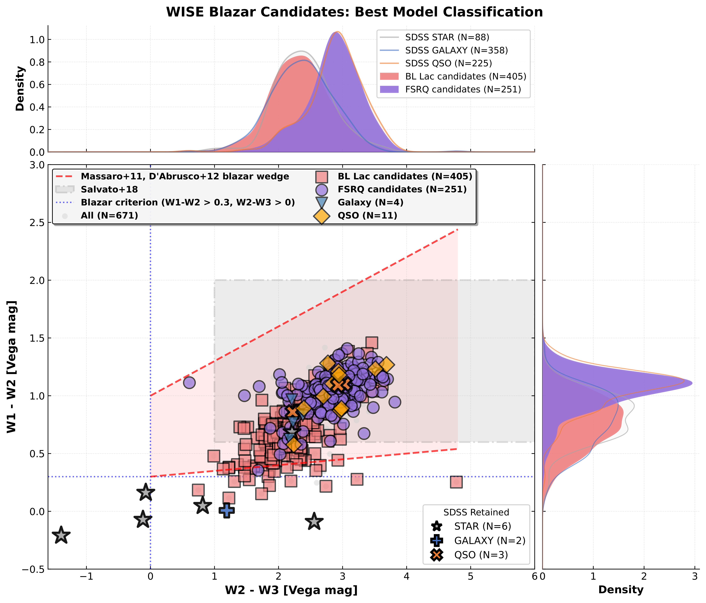 Fig11 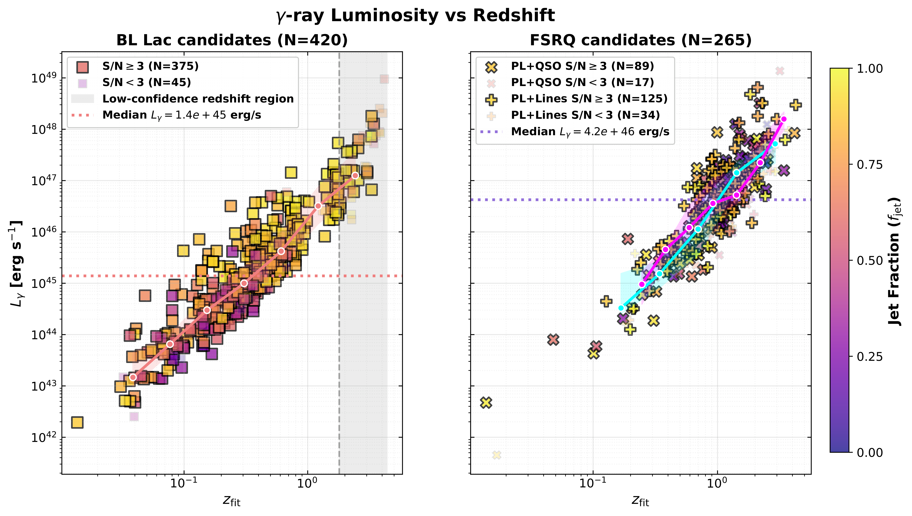 Fig07 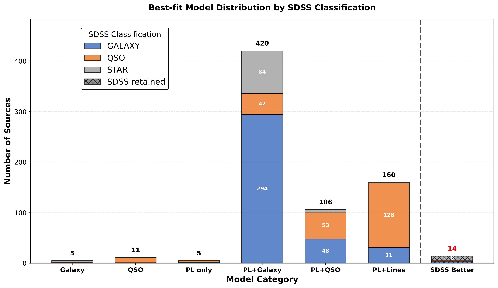 Fig06 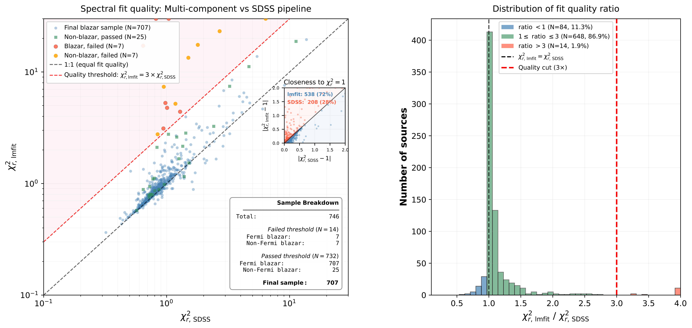 Fig10 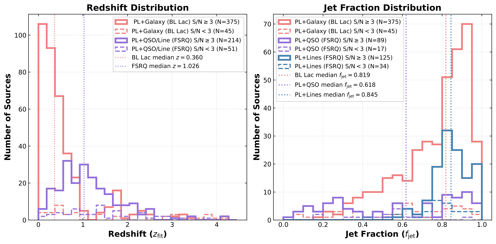 这篇工作属于 Fermi 耀变体光学识别和大规模光谱分类的交叉方向。相似工作包括 Fermi-LAT 4FGL 和 3FHL 目录中的源关联与类别标注、Roma-BZCAT 等耀变体目录、以及利用 WISE 红外颜色识别 blazar locus 的系列研究。建议检索关键词包括 “Fermi 4FGL blazar classification optical spectroscopy”、“SDSS blazar spectra BL Lac FSRQ”、“WISE blazar strip”、“3FHL redshift blazars”。 在基础理论上，它与 BL Lac/FSRQ 统一图像、喷流多普勒增亮、宽线区辐射场、吸积率序列和等值宽度分类标准有关。相反或存在张力的观点主要围绕 \(|\mathrm{EW}|=5\,\mathrm{\AA}\) 是否应作为硬分类边界，以及 BL Lac 与 FSRQ 是否代表两种物理吸积模式还是连续参数空间中的不同状态。建议检索 “BL Lac FSRQ equivalent width 5 Angstrom”、“blazar sequence”、“transition blazars”、“changing-look blazars”。 就同类源/目录背景而言，本文不是针对单个瞬变或单一命名源，而是针对 Fermi 伽马射线耀变体候选样本。因此 source context 应看作同类源、目录和巡天层面的背景，而非同一事件文献。最相关的公开入口包括 Fermi 4FGL、3FHL、SDSS 数据发布、WISE 任务页面和耀变体目录/综述。 同一事件 / 同类源线索： 相似工作： 基础理论 / 方法工作： 相反观点 / 张力线索： 中文题目：用更新的天体物理 \(J\) 因子先验修订暗物质间接探测限制 做了什么：这篇文章解决一个很实际的问题：伽马射线暗物质间接探测给出的湮灭截面或衰变寿命限制，强烈依赖目标天体的暗物质分布，也就是 \(J\) 因子；一旦新的恒星运动学或动力学建模改变了 \(J\) 因子，旧限制往往就不再是严格可用的。作者提出一种不需要重新跑完整实验似然的重解释框架，用公开的旧限制和新的 \(J\) 因子先验来更新暗物质限制。文章推导了高斯和对数正态 \(J\) 因子先验下的解析修正公式，并用玩具蒙特卡洛、连续多次重解释的数值稳定性测试，以及对已发表限制的复现实验来验证方法。它的重要性不在于给出某个新源的更强限制，而在于提供了一种可复用的统计工具，让未来改进的天体物理 \(J\) 因子估计能够快速、透明地传播到已有的暗物质限制上。 为什么重要：暗物质间接探测的很多“粒子物理限制”其实由天体物理系统误差主导，尤其是矮星系、银河中心、星系团等目标的 \(J\) 因子。过去大量文献只发布最终上限，而没有发布完整事件级似然或仪器响应，因此一旦 \(J\) 因子被修订，理论界很难严谨地更新约束。这篇文章的价值在于把这个问题形式化：在只知道旧限制、旧 \(J\) 因子先验和新 \(J\) 因子先验的情况下，如何统计一致地更新 \(\langle\sigma v\rangle\) 或衰变寿命限制。 理论 / 观测 / 仪器方法价值：对理论工作者，它提供了快速重解释历史限制的工具，避免把过时的 \(J\) 因子误当成最新天体物理输入。对观测合作组，它说明了发布哪些最小信息可以使结果长期可复用。对仪器和数据分析方法学，它给出一个介于“完整重分析”和“粗暴按 \(J\) 比例缩放”之间的可验证方案，并讨论了多目标组合、对数正态先验、数值稳定性和系统误差传播。 为什么应该关注：如果你使用过 \(\gamma\) 射线矮星系限制来排除暗物质模型，或者比较过 \(\langle\sigma v\rangle\) 与热遗迹值 \(3\times10^{-26}\,\mathrm{cm^3\,s^{-1}}\)，你就应该关心这篇文章。它提醒我们：限制曲线的位置不仅由望远镜灵敏度决定，也由 \(J\) 因子先验的形状、宽度和更新方式决定。未来 \(J\) 因子估计随着 \(Gaia\)、大口径光谱巡天和更细致的动力学模型改变时，这类方法会直接影响哪些暗物质模型仍被认为可行。 科学问题：暗物质间接探测通常把目标天体的伽马射线通量写成粒子物理因子乘以天体物理因子。对湮灭信号，天体物理因子是沿视线积分的密度平方，即 \(J\) 因子；对衰变信号则是密度一次方的 \(D\) 因子。实验论文常给出 \(\langle\sigma v\rangle\) 的上限，但这个上限已经吸收了某个特定的 \(J\) 因子估计及其不确定度。问题是，\(J\) 因子会因为新恒星样本、新成员星判定、新速度弥散测量或新暗晕模型而改变。若没有实验合作组的完整似然，通常很难严格更新旧限制。 作者怎么做：文章建立了一个“后处理”式的统计框架。核心思想是把已发表的暗物质限制看成已经边缘化或剖面化了旧 \(J\) 因子先验的结果，然后反推出一个等效的实验约束，再把新的 \(J\) 因子先验重新卷积进去。作者分别处理 \(J\) 因子服从高斯先验和 \(\log_{10}J\) 服从高斯、即 \(J\) 服从对数正态先验的情况。后者尤其贴近矮星系文献，因为 \(J\) 因子的误差通常以 \(\log_{10}J\) 的 dex 形式给出。 关键结果：论文给出了解析表达式，用来量化 \(J\) 因子均值和不确定度变化对暗物质限制的影响。它表明，简单按 \(J_{\rm old}/J_{\rm new}\) 缩放只在 \(J\) 因子不确定度很小、先验近似窄且实验似然近似线性响应时才可靠；一旦 \(J\) 因子误差较大，新的限制不仅随均值移动，也会因先验宽度变化而变松或变紧。作者用玩具蒙特卡洛检验解析公式，特别测试了多次连续重解释后是否出现数值漂移，并进一步展示该方法可复现实验文献中的若干已发表限制。 局限和下一步：这不是完整实验重分析的替代品。若原实验似然高度非高斯、存在能谱形状相关的复杂系统误差、背景模型与信号强相关，或发表的上限信息过少，重解释公式只能给出近似。多目标组合虽然可以用简单数值程序完成，但仍受限于不同目标 \(J\) 因子先验是否独立、各实验系统误差是否相关以及公开信息是否足够。下一步最有价值的是把这种方法做成社区工具，并推动合作组发布每个目标的近似似然、旧 \(J\) 先验参数和可重解释所需的最小统计量。 这篇文章最重要的结果不是某条具体暗物质限制曲线，而是一个可从已发表限制出发更新 \(J\) 因子系统误差的证据链。作者把输入分成三类：第一，旧论文给出的上限，例如某质量 \(m_\chi\) 和湮灭道下的 \(\langle\sigma v\rangle_{\rm lim,old}\)；第二，旧分析使用的 \(J\) 因子先验，通常由 \(\log_{10}J_{\rm old}\) 和误差 \(\sigma_{\log J,{\rm old}}\) 描述；第三，新动力学研究给出的 \(J\) 因子先验 \(\log_{10}J_{\rm new}\) 和 \(\sigma_{\log J,{\rm new}}\)。输出是更新后的 \(\langle\sigma v\rangle_{\rm lim,new}\) 或衰变寿命限制。 样本和事件数在本文中主要出现在验证层面，而不是作为新的观测目录。作者使用玩具蒙特卡洛构造伪实验：给定背景期望、信号模板、真实或假定的 \(J\) 因子分布，生成计数数据，再分别执行完整似然分析和简化重解释。这样可以直接比较“有完整似然时的真结果”和“只用公开上限加 \(J\) 先验更新公式得到的近似结果”。如果论文复现了已有实验限制，读者应重点看它是否在不同暗物质质量、不同湮灭道和不同 \(J\) 因子误差宽度下都能保持一致，而不只是匹配某一个质量点。 显著性或置信度的计算逻辑通常对应单边上限问题。实验限制可理解为寻找使检验统计量达到某个阈值的信号强度，例如在渐近 \(\chi^2\) 近似下，单参数 \(95\%\) 置信上限常对应 \(\Delta(-2\ln\mathcal{L})\simeq2.71\)。本文的关键是把 \(J\) 作为 nuisance parameter，并检查旧先验到新先验的替换如何改变剖面似然或边缘似然的形状。对于对数正态先验，\(\log_{10}J\) 的二次惩罚项会在信号归一化与 \(J\) 之间引入非线性退化，这正是简单比例缩放容易失败的地方。 支撑结论的图表应包括三类：解析公式与玩具蒙特卡洛的逐点比较图、连续重解释后的数值稳定性图、以及对已发表限制的复现图。第一类图应显示不同 \(J\) 因子均值偏移和不确定度下，新上限与完整重分析结果的比值是否接近 \(1\)。第二类图应检查经过多次 \(J\) 先验替换后，上限是否出现人为漂移或误差累积。第三类图则是方法可用性的外部校验：如果已发表限制能够在公开信息范围内被复现，说明该框架至少捕捉了主要统计结构。 主要系统误差来自三个方向。第一是 \(J\) 因子先验本身：恒星成员星污染、速度各向异性、非球对称、潮汐剥离和平衡态假设都会改变 \(J\) 的均值和尾部。第二是实验似然的压缩误差：把完整能谱、空间模板和背景参数压缩成一条上限曲线会丢失信息。第三是多目标组合时的相关性：不同矮星系的 \(J\) 因子可近似独立，但同一仪器的有效面积、背景建模和能标误差可能相关。作者的稳健性检验主要是用玩具模型和重复重解释来证明，在其假设范围内这些压缩不会导致明显偏差。 暗物质间接探测寻找的是暗物质粒子湮灭或衰变产生的标准模型粒子，尤其是伽马射线、宇宙线、反质子、正电子和中微子。对伽马射线而言，矮椭球星系是经典目标，因为它们暗物质含量高、恒星形成弱、常规天体背景少。银河中心则预期信号强，但背景复杂。星系团和银河晕也被用于给出限制，但其暗物质分布和亚结构增亮因子存在更大不确定度。 历史上，暗物质间接探测限制常被画成 \(m_\chi\) 与 \(\langle\sigma v\rangle\) 平面上的曲线，并与热遗迹截面比较。读者容易把这些曲线理解成纯实验灵敏度，但实际上它们是实验数据、背景模型、粒子能谱模型和目标 \(J\) 因子共同作用的结果。特别是矮星系限制中，\(J\) 因子的误差常常是主导系统误差之一；对最暗、成员星很少的超暗矮星系，这种误差可以达到数倍乃至一个数量级。 为什么现在值得重新看？一方面，\(Gaia\) 改善了恒星自行、成员星筛选和银河前景剔除；另一方面，多目标光谱巡天不断增加矮星系成员星速度样本。动力学建模也在从简单球对称 Jeans 模型走向更灵活的分布函数、非球对称或层级贝叶斯模型。这意味着旧论文中采用的 \(J\) 因子很可能被系统性修订。若每次 \(J\) 更新都要求实验合作组重跑完整分析，现实上不可持续。 该领域的常见误区包括：第一，认为 \(J\) 因子变化只需把上限按反比例平移；这忽略了 \(J\) 不确定度和先验形状。第二，把 \(J\) 因子的中心值当作确定量；这会夸大限制强度。第三，把不同论文的限制曲线直接比较，却没有检查它们使用的 \(J\) 因子、置信度定义、湮灭谱和背景处理是否一致。第四，把实验非探测误认为对某类暗物质模型的绝对排除，而不评估天体物理系统误差是否足以改变结论。 这篇文章位于间接探测、统计重解释和天体动力学之间。它不是提出新的暗物质模型，也不是发现新的伽马射线信号，而是处理文献可复用性问题：当天体物理输入更新后，如何让过去十几年积累的限制曲线仍可定量使用。对一个依赖长期实验和多合作组结果累积的领域来说，这类方法学工作很关键。 基本物理图像是：暗物质粒子若能湮灭，单位体积的湮灭率与暗物质数密度平方成正比；若能衰变，单位体积衰变率与数密度一次方成正比。对湮灭信号，粒子物理决定每次湮灭产生多少光子及其能谱，天体物理决定视线方向上有多少暗物质密度平方可供湮灭。因此观测通量可以自然分解为粒子物理因子和 \(J\) 因子。 \(J\) 因子不是直接观测量，而是由恒星运动学推断暗物质势阱后得到的模型依赖量。对矮星系，常用恒星视向速度、投影半光半径和 Jeans 方程推断质量分布。这里存在质量-各向异性退化：相似的视向速度弥散可以由不同径向质量剖面和不同速度各向异性组合产生。成员星污染、双星运动、潮汐扰动和平衡态假设也会影响 \(J\) 因子的尾部。 从数据分析角度，伽马射线实验通常对每个能量和空间区间建立泊松似然。信号模板的归一化与 \(\langle\sigma v\rangle J\) 成正比，背景模板包括银河弥散辐射、点源、宇宙线残余和仪器背景。若没有发现显著超额，实验给出信号强度上限，再转换为 \(\langle\sigma v\rangle\) 上限。转换过程需要指定湮灭道、暗物质质量、光子谱和 \(J\) 因子先验。 本文的模型假设是：公开的旧限制可被近似看成某个简化实验似然与旧 \(J\) 因子先验卷积后的结果。若能构造等效似然，就可以把旧 \(J\) 先验替换为新先验。对 \(J\) 因子而言，高斯先验适合变量本身近似对称且误差小的情况；对数正态先验更常用，因为 \(J\) 为正且常以 dex 误差报告。 关键退化关系是信号强度 \(\mu\) 与 \(J\) 的乘积退化：相同的 \(\gamma\) 射线通量可以由较大的 \(\langle\sigma v\rangle\) 和较小的 \(J\)，或较小的 \(\langle\sigma v\rangle\) 和较大的 \(J\) 产生。先验宽度越大，这种退化越明显，上限越受天体物理假设影响。本文的重解释公式本质上是在不访问原始事件数据的情况下，重新计算这种退化被新先验约束后的结果。 第一步从湮灭率出发。若暗物质质量为 \(m_\chi\)，质量密度为 \(\rho_\chi\)，数密度为 \(n_\chi=\rho_\chi/m_\chi\)，自共轭暗物质的单位体积湮灭率为 这里 \(\langle\sigma v\rangle\) 是速度平均湮灭截面，因子 \(1/2\) 避免双计数粒子对。该式说明为什么湮灭信号对高密度区域特别敏感。 第二步把体发射率投影到观测通量。若每次湮灭产生的光子谱为 \(dN_\gamma/dE\)，则某立体角区域 \(\Delta\Omega\) 内的微分通量为 其中 \(J\) 是本文讨论的核心 nuisance parameter；它把所有目标天体暗物质分布信息压缩到一个可进入通量归一化的量。 第三步写出衰变情形，便于理解方法可扩展性。若暗物质寿命为 \(\tau_\chi\)，衰变通量为 其中 湮灭限制更新主要替换 \(J\)，衰变限制更新则替换 \(D\)，统计结构相同但密度权重不同。 第四步把通量接到计数似然。对能量或空间 bin \(i\)，期望计数可写为 其中 \(b_i\) 是背景期望，\(\boldsymbol{\theta}\) 是背景或仪器 nuisance parameters，\(s_i\) 是单位 \(\mu J\) 下的信号模板，\(\mu\) 可代表 \(\langle\sigma v\rangle\) 的归一化。泊松似然为 其中 \(n_i\) 是观测计数。旧实验完整重分析需要访问这个对象，但本文要在无法访问它时进行近似更新。 第五步加入 \(J\) 因子先验。若采用对数正态先验，令 \(x=\log_{10}J\)，则 新先验只需把 \(x_{\rm old}\) 和 \(\sigma_{x,{\rm old}}\) 替换成 \(x_{\rm new}\) 和 \(\sigma_{x,{\rm new}}\)。这个形式保证 \(J>0\)，并自然描述 dex 误差。 第六步定义包含天体物理不确定度的有效似然。若采用边缘化处理，旧限制对应的有效似然近似为 重解释的目标是构造 但困难在于 \(\mathcal{L}_{\rm data}\) 未公开。本文的解析框架就是用旧上限和旧先验反推出等效的 \(\mathcal{L}_{\rm data}\) 信息，再用新先验重新积分或近似计算。 第七步用检验统计量定义单边上限。常见形式为 其中 \(\hat{\mu}\) 是最大似然估计，且通常限制 \(\hat{\mu}\ge 0\)。在渐近近似下，\(95\%\) 单边上限 \(\mu_{95}\) 满足 这给出了从新有效似然到更新后 \(\langle\sigma v\rangle\) 限制的操作定义。 第八步看窄先验极限。若 \(J\) 的不确定度可忽略，信号归一化只依赖 \(\mu J\)，则同一通量上限 \(\Phi_{\rm lim}\) 给出近似缩放 本文强调该式只是极限情况。若 \(\sigma_{\log J}\) 改变，或者 \(\mathcal{L}_{\rm data}\) 与 \(J\) 的卷积显著非线性，更新后的上限会偏离这种简单比例。 这类工作的拟合量可以分成粒子物理参数、天体物理参数和实验背景参数。粒子物理参数包括暗物质质量 \(m_\chi\)、湮灭道、归一化 \(\mu\) 或 \(\langle\sigma v\rangle\)；天体物理参数主要是 \(J\) 因子及其先验参数；实验参数包括背景归一化、能谱形状、空间模板和仪器响应。本文不重新拟合事件数据，而是把原实验拟合压缩成等效限制，再对 \(J\) 先验做替换。 似然处理可采用剖面似然或边缘似然。剖面化把 \(J\) 当作 nuisance parameter，在每个 \(\mu\) 下寻找最大似然的 \(J\)；边缘化则对 \(J\) 积分。两者在高斯、线性和大样本极限下可能接近，但在低计数、宽对数正态先验或存在物理边界时会产生差异。读者应检查本文公式对应哪种统计解释，以及复现实验限制时是否与原文采用的置信度构造一致。 参数退化最核心的是 \(\mu\) 与 \(J\) 的乘积退化。若数据只约束 \(\mu J\)，则 \(J\) 先验越宽，\(\mu\) 的上限越弱；若新 \(J\) 均值更大，限制通常变强；若新 \(J\) 不确定度也更大，增强可能被抵消。另一个退化来自背景模型：在复杂背景区域，弱信号模板可能被背景自由度吸收，使等效实验似然不再是简单的单参数高斯形状。 残差诊断在本文的复现实验中非常重要。理想情况下，更新公式得到的 \(\langle\sigma v\rangle_{\rm lim}\) 与完整玩具分析或已发表限制的比值应围绕 \(1\)，且不随 \(m_\chi\)、湮灭道或 \(J\) 因子误差系统性偏离。若在高质量端、低计数端或大 \(\sigma_{\log J}\) 情况下偏差增大，说明近似似然不足以捕捉原分析的信息。 系统误差主要包括旧限制数字化误差、旧 \(J\) 先验信息不完整、不同论文置信度定义不一致、以及多目标组合的相关误差。实际应用中，最好同时报告“简单比例缩放结果”和“本文框架更新结果”的差异，作为 \(J\) 先验宽度影响的诊断。如果差异很大，就说明该限制并非由实验计数本身单独决定，而是强烈依赖天体物理先验。 模型可能失败的场景也很明确：原实验若使用复杂机器学习分类器、强非线性背景约束、空间-能谱联合模板与 \(J\) 的隐含相关性，或目标区域中存在未建模源，公开上限很难还原完整似然。此外，如果新的 \(J\) 因子分布不是单峰对数正态，而是有长尾、多峰或由潮汐扰动导致的非平衡解，本文的简化先验形式就需要扩展。 数据和问题设定部分应先读清楚作者如何定义“旧限制”“旧 \(J\) 因子先验”和“新 \(J\) 因子先验”。关键不是某个特定实验，而是输入信息的最小集合：旧上限曲线、旧先验参数、目标类型和置信度约定。读者要特别注意作者是否区分湮灭的 \(J\) 因子和衰变的 \(D\) 因子。 方法推导部分是全文核心。这里应检查高斯先验和对数正态先验两种情况的解析表达式，以及它们对剖面化或边缘化的统计含义。重点看作者如何从已发表限制构造等效实验约束，以及该构造在哪些近似下成立。 玩具蒙特卡洛验证部分应当作为可信度检验来读。读者应关注伪实验的背景计数、信号强度、\(J\) 因子中心值和误差宽度如何设置，以及解析公式相对于完整模拟的偏差是否随这些设置变化。尤其要看大 \(J\) 不确定度、低计数和连续重解释情形。 复现已发表限制的部分用于连接真实文献。这里不应只看曲线是否“看起来差不多”，还要检查每个质量点的比值、置信度定义、湮灭道和旧 \(J\) 因子输入是否一致。如果复现依赖额外校准参数，读者需要判断这些参数是否会削弱方法的可推广性。 多目标组合部分对矮星系联合分析尤其重要。读者应看作者是直接数值合并每个目标的等效似然，还是先更新单目标限制再组合。前者通常更合理，因为不同目标的 \(J\) 因子不确定度和信号权重不同。还要注意目标之间的 \(J\) 因子独立性假设和实验系统误差相关性是否被讨论。 解析公式与玩具蒙特卡洛比较图：看横轴是否扫描 \(J\) 因子均值偏移或 \(\sigma_{\log J}\)，纵轴是否为更新后上限或与完整分析的比值；关键是偏差是否在可接受范围内。 简单比例缩放与完整重解释的对比图：看 \(\mu_{{\rm lim,new}}\simeq\mu_{{\rm lim,old}}J_{\rm old}/J_{\rm new}\) 在哪些区域失效；尤其注意大 \(J\) 不确定度时曲线是否明显分离。 连续多次重解释的稳定性图：看重复替换 \(J\) 先验后限制是否产生数值漂移；若误差随迭代次数累积，方法用于长期文献维护会有风险。 已发表限制复现图：看作者是否能重现实验论文中的 \(m_\chi\)-\(\langle\sigma v\rangle\) 上限曲线；应关注不同质量区间的系统偏差，而不是只看总体形状。 多目标组合诊断图或表：看单目标更新与联合更新的差别，尤其是高 \(J\) 因子但大不确定度的目标是否被过度加权。 系统误差或稳健性表：检查高斯与对数正态先验、边缘化与剖面化、不同置信度阈值、不同输入上限精度对结果的影响。 图 1：若论文给出方法示意图，通常应读作似然重解释流程图。横向流程大致是旧公开限制加旧 \(J\) 先验，反推出等效实验约束，再替换为新 \(J\) 先验并输出新限制。读图陷阱是不要把它理解成恢复了完整事件级数据；它恢复的是在近似假设下足以更新 \(J\) 系统误差的压缩信息。 图 2：解析结果与玩具蒙特卡洛对比图应重点看坐标轴。若横轴是 \(J_{\rm new}/J_{\rm old}\) 或 \(\Delta\log_{10}J\)，纵轴可能是 \(\langle\sigma v\rangle_{\rm lim,new}/\langle\sigma v\rangle_{\rm lim,full}\)。数据点代表伪实验或完整数值计算，模型线代表解析公式。主要结论应是模型线在广泛参数范围内跟随数据点。读图陷阱是只看中心值而忽略误差带；大 \(\sigma_{\log J}\) 处的偏离最能暴露近似边界。 图 3：简单缩放与统计重解释对比图通常最能体现本文价值。横轴可能是暗物质质量 \(m_\chi\) 或 \(J\) 因子修订幅度，纵轴为上限。若简单缩放曲线和本文方法曲线明显分离，说明 \(J\) 因子不确定度的变化不能被忽略。读图陷阱是把所有差异都归因于 \(J\) 均值；实际上先验宽度和形状也会改变上限。 图 4：连续重解释稳定性图应看迭代次数与限制偏差的关系。理想结果是偏差围绕零或比值围绕 \(1\)，没有随迭代次数单调漂移。若图中有多条线，它们可能对应不同 \(\sigma_{\log J}\) 或不同先验族。读图时要注意纵轴是否为线性比例还是对数偏差，因为小的对数偏差可能对应显著的百分比变化。 图 5：已发表限制复现图通常以 \(m_\chi\) 为横轴、\(\langle\sigma v\rangle\) 上限为纵轴，并叠加原论文曲线与本文复现曲线。低质量端受能阈和谱形影响，高质量端受统计量和有效面积影响；若偏差集中在某一端，可能不是 \(J\) 因子问题，而是实验响应或谱模板压缩不充分。读者应检查图例中湮灭道是否一致，例如 \(b\bar b\)、\(\tau^+\tau^-\) 或其他末态。 图 6：多目标组合图或表应看每个目标对联合限制的权重。坐标轴可能是单目标上限、联合上限或目标 \(J\) 因子。主要结论应是该框架能用数值方式把多个目标的新先验合并，而不是先粗略平均 \(J\) 因子。读图陷阱是忽略相关系统误差；若所有目标来自同一仪器，仪器系统误差不一定能按独立目标简单相乘。 Fig01 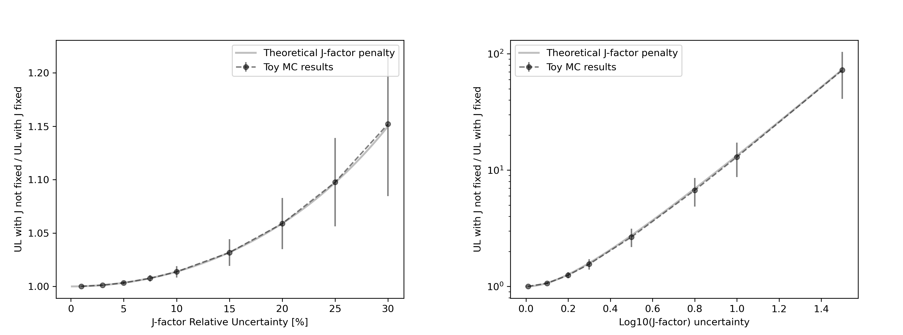 Fig03 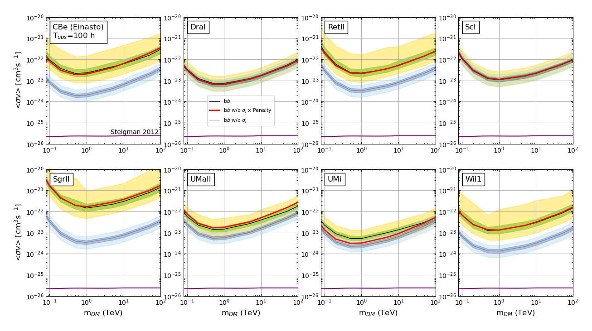 Fig02 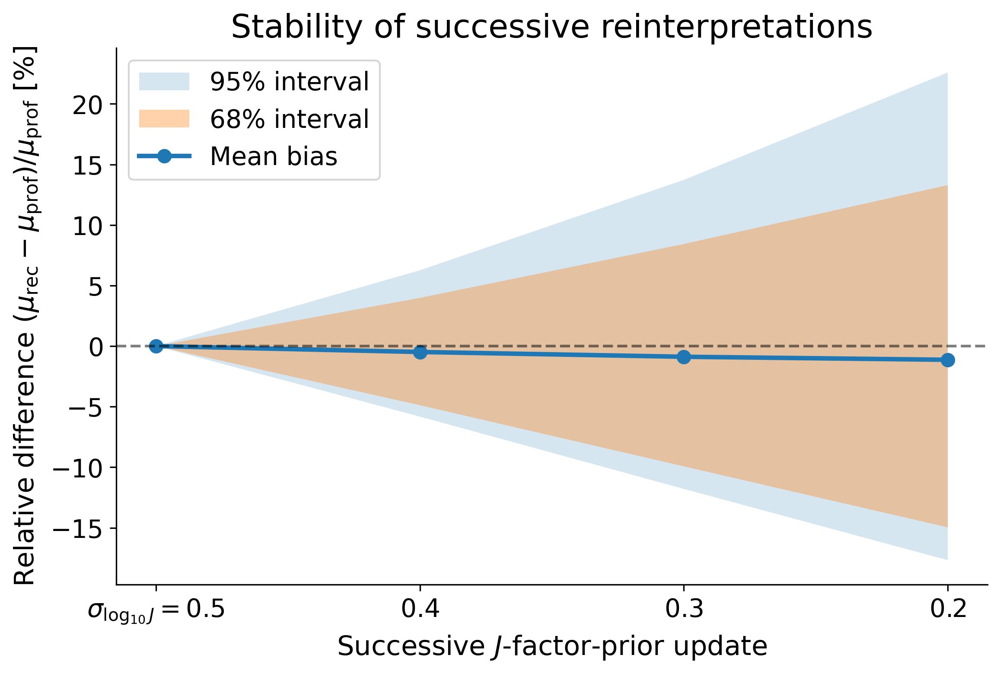 Fig04 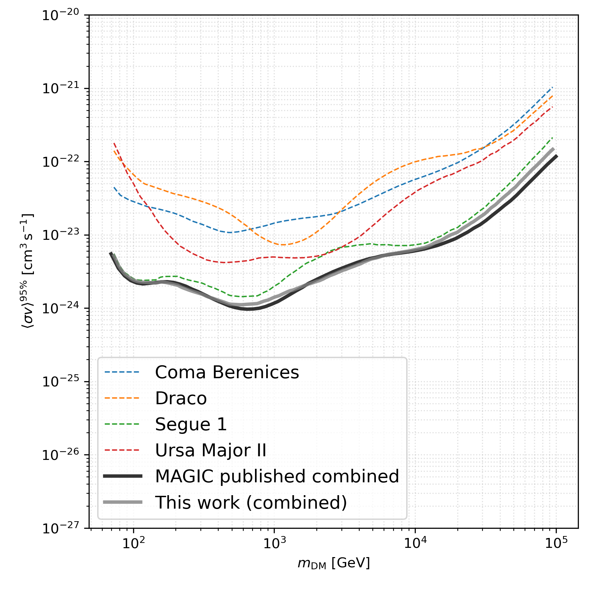 这篇工作与 \(Fermi\)-LAT 矮星系联合限制、H.E.S.S. 银河中心限制、MAGIC 和 VERITAS 对矮星系或银河晕的限制属于同一类问题：把非探测转化为 \(\langle\sigma v\rangle\) 或 \(\tau_\chi\) 的约束。相似观测论文通常会报告每个目标的 \(J\) 因子及其不确定度，但公开似然的完整程度差异很大。检索关键词可用“dark matter indirect detection J factor dwarf spheroidal likelihood reinterpretation”、“Fermi LAT dwarf spheroidal J factor”、“gamma-ray dark matter limits likelihood”。 基础理论和历史背景应追溯到暗物质湮灭通量分解、矮星系动力学 \(J\) 因子估计、Jeans 建模和间接探测统计方法。与本文存在张力或互补关系的方向包括：主张必须完整重跑实验似然的严格重分析、使用层级贝叶斯同时拟合多个矮星系 \(J\) 因子的工作、以及指出矮星系非平衡或潮汐扰动会使对数正态 \(J\) 先验失效的研究。检索关键词可用“Jeans analysis dwarf spheroidal J-factor systematics”、“hierarchical Bayesian J-factor dwarf galaxies”、“tidal disruption J-factor uncertainty”。 本文不针对单一命名事件或单一暂现源，而是针对暗物质间接探测同类源和同类约束的重解释方法。因此应把它放在“同类源目录和限制曲线”的语境中阅读，而不是寻找同一事件论文。可靠的上下文包括 \(Fermi\)-LAT 矮星系暗物质限制论文、矮星系 \(J\) 因子综述和暗物质间接探测综述。 同一事件 / 同类源线索： 相似工作： 基础理论 / 方法工作： 相反观点 / 张力线索： 中文题目：天鹅座 X-1 低硬态吸积暗降期间不变的 X 射线偏振 做了什么：这篇短文用 IXPE、NICER 和 NuSTAR 的同时观测，研究天鹅座 X-1 在低硬态中出现的 X 射线暗降，即短时通量下降，是否会改变 2–8 keV 的偏振信号。作者先用宽能段能谱证明暗降主要来自局部、冷的、较致密物质的部分遮挡吸收，软 X 射线受影响最强；然后把 IXPE 数据分为暗降和非暗降时段，比较偏振度和偏振角。核心结论是：尽管通量明显下降，偏振度和偏振角在误差内基本不变。这说明被遮挡的热盘成分并不是总偏振的主导来源，更支持低硬态偏振来自尺度较大的、可能呈扁球或盘状延展的冕区，而不是局部小尺度结构。 为什么重要：天鹅座 X-1 是黑洞 X 射线双星的标尺源，过去主要依赖能谱和时变来推断盘、冕和喷流几何。IXPE 之后，偏振提供了几何方向和散射结构的信息。这篇文章重要在于利用天然的“遮挡实验”：如果暗降遮住了某个强偏振区域，偏振度或偏振角应有可测变化；现在没有看到变化，就对偏振起源的位置和尺度给出了直接约束。 理论 / 观测 / 仪器方法价值：对理论而言，它支持低硬态中较大尺度、非球对称的康普顿化冕区，而不是由被遮挡的内盘热辐射主导偏振。对观测而言，它展示了把 IXPE 偏振与 NICER、NuSTAR 宽能段能谱同步分段结合的做法，可以用吸收事件来区分本征辐射几何和视线遮挡。对方法而言，暗降和非暗降的联合谱偏振比较是一种比单次平均偏振更有诊断力的几何检验。 为什么应该关注：如果你关心黑洞双星低硬态的“冕到底是什么形状、在哪里、和盘/喷流如何耦合”，这篇文章值得看。它不是又一次测得天鹅座 X-1 有偏振，而是在源自身提供的吸收遮挡条件下测试偏振是否随遮挡变化。结果把偏振信号从简单的热盘遮挡图像中排除出去，并把讨论推向延展冕、盘面散射和大尺度轴对称几何。 科学问题：天鹅座 X-1 在低硬态中常被看作由冷盘、热电子冕和可能的紧致喷流共同贡献 X 射线辐射。普通能谱可以告诉我们有吸收、反射和康普顿化，但很难唯一确定冕的空间形状。IXPE 的偏振测量给出电矢量方向和偏振度，能直接约束散射几何。本文抓住的问题是：当源发生暗降、即部分 X 射线被伴星风或外盘物质遮挡时，偏振是否会跟着改变？如果改变，说明被遮挡区域对偏振贡献大；如果不改变，则说明偏振来自更大、更稳定的结构。 作者怎么做：他们选取天鹅座 X-1 低硬态期间 IXPE、NICER 和 NuSTAR 的同时数据，将观测按通量下降事件划分为暗降和非暗降区间。NICER 提供软 X 射线高吞吐量，NuSTAR 覆盖硬 X 射线并约束高能连续谱和吸收以外的康普顿化成分，IXPE 提供 2–8 keV 偏振。能谱上，作者比较不同吸收解释，发现能量相关的通量下降更适合部分遮挡吸收：软能段下降明显，硬能段较小，符合冷而致密的局部团块进入视线的图像。 关键结果：谱拟合显示暗降不是简单的本征亮度整体变暗，而是有明显能量依赖的遮挡；遮挡物质可来自超巨伴星的非均匀恒星风，也可能与外盘结构有关，尤其在上合附近更容易进入视线。偏振分析中，暗降与非暗降时段的 2–8 keV 偏振度和偏振角在统计误差内一致。换句话说，遮挡足以显著改变通量和低能谱形，却没有改变整体偏振矢量。 物理解释：如果热盘软成分或某个紧凑、局部的高偏振区域是 IXPE 能段偏振的主要来源，部分遮挡通常会改变相对通量权重，从而改变 Stokes 参数组合，导致偏振度或偏振角变化。现在没有看到这一点，说明被遮挡的成分对总偏振贡献不大，或者偏振源区域大到局部团块只能遮挡一小部分。作者据此支持延展、可能呈扁球状或盘状的吸积盘冕，它的整体几何在局部吸收团块经过视线时保持稳定。 局限和下一步：这类结论受限于 IXPE 对亮源分段后的偏振统计误差，尤其暗降时段光子数减少，能够排除的是“大变化”，而不是任意微小变化。部分遮挡模型也与电离吸收、复杂风结构、散射光污染等存在一定退化。下一步需要更多轨道相位覆盖、更多暗降事件、能量分辨偏振以及与风吸收线/反射成分的联合拟合，才能把“延展冕”的尺度、厚度和相对于黑洞自旋轴或双星轨道的取向进一步量化。 样本和分段的关键在于同步性。本文使用的是天鹅座 X-1 在低硬态中的 IXPE、NICER、NuSTAR 同时观测，而不是把不同日期的偏振和能谱拼接。作者根据 X 射线光变曲线识别通量下降的暗降区间，并构造暗降与非暗降的对照样本。由于天鹅座 X-1 暗降往往与轨道相位、伴星风团块和视线吸收有关，这种分段相当于把同一个源在几何结构近似不变时分成“被遮挡”和“未被遮挡”两种视线条件。 能谱证据链首先来自暗降的能量依赖。若只是本征发射降低，宽能段通量通常近似按同一比例下降；若是冷物质吸收，低能光子因光电吸收截面较大而更强烈减少。作者用 NICER 的软 X 射线数据和 NuSTAR 的硬 X 射线数据一起约束连续谱，发现暗降中软能段的衰减需要额外吸收，并且部分遮挡模型优于简单归一化变化。表格中应重点看暗降与非暗降的柱密度、覆盖因子和连续谱参数是否合理稳定。 偏振证据链则使用 IXPE 的 Stokes 参数或等价的谱偏振拟合。作者比较暗降和非暗降时段的偏振度与偏振角，结果显示二者在置信区间内重合。这里的统计判断不是只看通量曲线，而是看偏振矢量是否发生显著旋转或长度变化；由于偏振角具有 \(\pi\) 周期性，严肃的比较应在 \(Q\)–\(U\) 平面或基于 Stokes 似然完成，而不应只用角度差的直觉。 支持结论的图表通常包括：光变曲线和暗降选区图、暗降/非暗降能谱比值图、宽能段最佳拟合与残差图、以及 IXPE 在 \(Q\)–\(U\) 平面或偏振度-偏振角平面中的置信轮廓。最重要的不是单个偏振度数值，而是暗降点和非暗降点的误差椭圆是否明显分离。本文结论建立在“不分离”上：通量下降是真实且能谱上有吸收特征，但偏振矢量没有相应改变。 主要系统误差包括暗降选择阈值、背景处理、IXPE 仪器调制响应、NICER 的低能校准、NuSTAR 交叉归一化，以及吸收模型与连续谱模型之间的退化。稳健性应看作者是否改变暗降定义、能段、吸收模型或仪器组合后仍得到相似的偏振结论。由于暗降时光子数更少，非探测到变化也可能来自统计功率有限；因此读者应把结论理解为：在本文数据灵敏度下，没有证据表明局部遮挡改变了 2–8 keV 总偏振，且这与延展冕图像自然一致。 天鹅座 X-1 是最早被确认的恒星质量黑洞候选体之一，由一颗黑洞和一颗 O 型超巨星伴星组成。它的 X 射线辐射来自黑洞附近的吸积流，伴星强风又为视线吸收和吸积供给提供复杂环境。这个系统亮、近、长期可观测，是检验黑洞双星吸积态、喷流和高能辐射机制的基准对象。 传统上，天鹅座 X-1 的低硬态由硬 X 射线功率律和截止主导，常解释为冷盘光子在热电子冕中经历逆康普顿散射。高软态则热盘成分更强。问题在于，能谱中的功率律、反射隆起、铁线和吸收可以由多种几何组合产生：紧凑灯柱、延展盘冕、内热流、喷流底部等都能在某些参数下拟合数据。因此，仅凭时间平均能谱很难确定真正的三维结构。 暗降是高倾角或有强风系统中常见的现象。天鹅座 X-1 虽不是食双星，但伴星风团块、尾流或外盘结构可以在某些轨道相位部分遮挡 X 射线源，造成软能段更强的通量下降。过去暗降主要被用来研究恒星风团块、电离吸收和轨道相位依赖；本文把它进一步用作偏振几何的天然遮挡实验。 常见误区之一是把“暗降期间通量变低”直接等同于“中心引擎变弱”。本文强调，能量相关的通量下降更像视线吸收，而不是本征发射关闭。另一个误区是以为偏振一定来自热盘；事实上低硬态的 IXPE 能段可被康普顿化成分主导，热盘即便被遮挡，也未必显著改变总偏振。还有一个误区是把偏振度不变理解为没有几何信息；恰恰相反，在有强吸收扰动的情况下仍不变，本身就是对偏振源尺度和位置的限制。 基本物理图像从辐射通过非均匀吸收介质开始。冷或低电离物质对软 X 射线有强光电吸收，截面随能量升高快速下降，因此一个团块穿过视线会让低能通量降低更多。若遮挡不是完全覆盖辐射区，而是只挡住一部分，就需要部分遮挡模型：观测到的谱是未遮挡分量和被吸收分量的叠加。 偏振来自辐射场的方向性和散射几何。电子散射会使电矢量倾向于垂直于散射平面；在球对称结构中，不同方向的偏振相互抵消，净偏振很低；在扁平盘状、倾斜或延展冕结构中，对称性破缺会留下非零净偏振。偏振度描述线偏振强度占总强度的比例，偏振角描述天空平面上电矢量方向。 本文的关键假设是暗降主要改变视线吸收，而不显著改变内区发射机制本身。如果这个假设成立，比较暗降和非暗降的偏振就能分辨被遮挡成分是否携带主要偏振。若遮挡的是主要偏振源，Stokes 参数组合会改变；若遮挡的是弱偏振软热盘，或遮挡只影响延展源的一小部分，总偏振可能保持稳定。 观测方法上，NICER 适合追踪软 X 射线暗降和低能吸收，NuSTAR 约束硬 X 射线连续谱，使吸收与康普顿化谱形的退化减小。IXPE 通过光电子发射方向的调制重建线偏振；对天体偏振的检验本质上是在给定仪器调制因子和背景后估计 Stokes 参数，并把暗降/非暗降两个样本的置信区间进行比较。 常见退化包括：更高柱密度与更高覆盖因子都可降低软通量；连续谱斜率变化可能伪装成吸收变化；不同仪器交叉定标会影响宽带拟合；偏振度和偏振角在低信噪比下有非高斯误差。本文的可信度很大程度上取决于宽能段同时拟合是否把吸收和连续谱分开，以及偏振比较是否在 Stokes 空间处理统计误差。 第一步是写出未吸收的源谱。设本征光子通量谱为 \(F_{\rm int}(E)\)，能量为 \(E\)，低硬态中它可近似由康普顿化连续谱、反射和较弱热盘组成： 这里每一项都代表到达吸收屏之前的光子通量密度；本文关心的是暗降是否主要改变传播项，而不是这些本征项。 冷吸收的基本形式来自光电吸收光深。若等效氢柱密度为 \(N_{\rm H}\)，光电截面为 \(\sigma(E)\)，透射因子为 由于 \(\sigma(E)\) 在软 X 射线随 \(E\) 增大迅速下降，暗降会表现为低能更深、高能较浅的通量降低。 部分遮挡模型把辐射区的一部分置于额外吸收之后。若覆盖因子为 \(f_{\rm cov}\)，则观测谱可写为 其中 \(N_{\rm H,pc}\) 是部分遮挡团块的柱密度。这个式子给出暗降能谱比值的基本形状。 暗降与非暗降的谱比可近似写为 前提是本征谱在两个区间内近似相同。若 \(R(E)\) 随 \(E\) 明显上升，就支持吸收而不是简单归一化变暗。 这里 \(\psi\) 的 \(1/2\) 反映线偏振角的 \(180^\circ\) 周期性。 如果多个谱成分叠加，观测 Stokes 参数是各成分通量加权和： 这个式子说明，遮挡某个成分不仅改变总强度，也可能改变 \(Q_{\rm tot}\) 和 \(U_{\rm tot}\)，从而改变 \(p\) 和 \(\psi\)。 若暗降只削弱一个低偏振热盘成分，而主要偏振来自延展冕，则可写成近似关系 当 \(|Q_{\rm disk}|\ll |Q_{\rm cor}|\) 且 \(|U_{\rm disk}|\ll |U_{\rm cor}|\) 时，暗降前后的偏振几乎不变，这正是本文结论的物理含义。 偏振测量的统计比较可在 \(Q\)–\(U\) 平面中进行。若暗降和非暗降的估计向量分别为 \({\bf s}_{\rm dip}=(Q,U)_{\rm dip}\) 和 \({\bf s}_{\rm off}=(Q,U)_{\rm off}\)，协方差矩阵为 \({\bf C}\)，可构造差异量 若 \(\Delta\chi^2\) 未达到相应自由度的显著阈值，就不能认为偏振发生了显著变化。 能谱拟合通常最小化泊松或近似高斯统计量。对于计数谱，模型预测第 \(j\) 个通道计数为 \(m_j\)，观测为 \(n_j\)，泊松 Cash 统计量可写为 比较简单变暗模型和部分遮挡模型时，关键是看统计量改善、残差结构和新增参数是否共同支持吸收解释。 仪器响应把源谱映射到探测计数。第 \(j\) 个通道的预测计数为 其中 \(t_{\rm exp}\) 是曝光时间，\(R_j(E)\) 是能量重分布，\(A_{\rm eff}(E)\) 是有效面积，\(b_j\) 是背景。这个公式提醒读者：暗降和偏振结论都必须经过仪器响应折叠，而不是直接比较理论通量。 本文的拟合分成两个互相支撑的层次：宽能段能谱拟合和 IXPE 偏振拟合。能谱拟合的目标是确定暗降是否由额外吸收造成，核心参数包括部分遮挡柱密度 \(N_{\rm H,pc}\)、覆盖因子 \(f_{\rm cov}\)、连续谱斜率或康普顿化参数、反射成分强度以及不同仪器的交叉归一化。读者应关注暗降和非暗降中连续谱参数是否被允许变化，以及吸收参数是否确实承担了软能段残差。 偏振拟合的目标是估计 2–8 keV 的偏振度和偏振角，或者等价地估计 Stokes 参数 \(Q\) 和 \(U\)。在暗降时段，光子数减少会扩大误差椭圆，因此“没有变化”的结论需要看置信区间，而不是只看最佳值接近。若作者采用联合谱偏振模型，还需要确认偏振参数是否与谱成分绑定，或只是对总辐射给出能段平均偏振。 主要退化之一是吸收与本征谱形变化。低硬态源本身有快速时变，如果暗降选区同时包含内禀硬度变化，部分遮挡参数可能吸收掉部分连续谱变化。NICER 与 NuSTAR 的同步性可以缓解这一点，因为软、硬能段同时约束能谱弯曲。另一个退化是 \(N_{\rm H,pc}\) 与 \(f_{\rm cov}\)：较高柱密度但较低覆盖因子，可能在某些能段产生类似衰减。 系统误差方面，NICER 低能有效面积、背景和死时间处理会影响软吸收；NuSTAR 交叉归一化和高能背景会影响连续谱归一化；IXPE 的调制因子、背景和源区选择会影响偏振度。对于亮源天鹅座 X-1，统计误差通常不是唯一问题，暗降分段带来的相位选择和时间选择也可能引入偏差。 实际应用上，这种拟合框架可以推广到其他有吸收暗降的 X 射线双星：先用宽带谱确认暗降是视线吸收，再看偏振矢量是否响应。如果偏振随暗降显著变化，可定位被遮挡的偏振成分；如果不变，则说明偏振源更延展或与被遮挡成分解耦。本文属于后一种情况，因此对延展冕模型更友好。 数据/样本部分应先看观测时间、轨道相位和源态判定。天鹅座 X-1 的暗降与上合附近视线穿过伴星风有关，低硬态判定也影响对连续谱和偏振来源的解释。读者应检查作者如何定义暗降阈值、暗降持续时间、以及 IXPE/NICER/NuSTAR 的有效重叠曝光。 光变和硬度分析部分是证据链入口。重点不是通量下降本身，而是下降是否能量相关、是否软能段更强、是否与典型吸收暗降一致。硬度比随暗降变硬通常支持冷吸收，但也要排除本征谱变硬。 宽能段能谱拟合部分是本文最关键的方法段。读者应看作者比较了哪些模型：简单归一化变化、全覆盖吸收、部分遮挡吸收、可能的电离吸收或反射变化。重点看残差图和拟合统计量改善是否集中在软能段，以及最佳拟合的 \(N_{\rm H,pc}\) 和 \(f_{\rm cov}\) 是否物理合理。 偏振分析部分应重点读 Stokes 参数提取、能段选择和暗降/非暗降比较。由于偏振角误差在低偏振度时不对称，最好看 \(Q\)–\(U\) 置信区间，而不只看 \(p\) 和 \(\psi\) 的表格。若作者给出联合置信轮廓，那是判断“无变化”的核心图。 讨论部分需要把偏振稳定性与几何模型联系起来。作者的解释是局部冷团块能遮挡热盘或小部分视线，但无法显著改变来自延展、扁平冕的整体偏振。读者应同时留意作者是否讨论了替代解释，例如暗降时段统计不足、散射光补偿、或遮挡区域与偏振源空间上未重合。 附录或稳健性检验如果存在，应看暗降定义、能段选择、背景区域、仪器交叉定标和不同谱模型下结论是否稳定。对这类短文，附录往往比正文更能判断结论是否只是某一种数据切分的产物。 光变曲线和暗降选区：看 IXPE、NICER、NuSTAR 同时覆盖是否充分，暗降区间如何定义，通量下降幅度是否明显，是否存在多个暗降事件而非单一偶然波动。 硬度比或能段分解光变：看软能段是否比硬能段下降更深，暗降期间硬度是否上升，这是区分吸收和本征变暗的核心诊断。 暗降/非暗降能谱或谱比图：看低能端比值是否显著低于高能端，是否呈现光电吸收预期的能量依赖，而不是全能段等比例下降。 宽带谱拟合残差图：看没有部分遮挡时残差集中在哪里，加入部分遮挡后残差是否系统性消失，尤其是 NICER 软能段和 NuSTAR 低能交叠区。 最佳拟合参数表：重点检查 \(N_{\rm H,pc}\)、\(f_{\rm cov}\)、连续谱斜率、反射参数和交叉归一化。若连续谱参数在暗降/非暗降间大幅跳变，吸收解释会变得不那么干净。 \(Q\)–\(U\) 平面或偏振度-偏振角置信轮廓：看暗降和非暗降的误差椭圆是否重叠，最佳点是否在统计上可区分。这是本文偏振结论的决定性图。 能量分辨偏振或分能段 Stokes 结果：如果提供，要看软端暗降最强处是否有偏振变化迹象；若没有，延展冕解释更稳。 稳健性检验图表：看改变暗降阈值、去掉某个仪器、调整背景或改用替代吸收模型后，偏振不变的结论是否保持。 图 1：通常应是多仪器光变曲线。横轴是时间或轨道相位，纵轴是计数率或通量，不同颜色代表 IXPE、NICER、NuSTAR 或不同能段。读图时要确认暗降窗口与仪器同时观测窗口重合，并注意暗降是否在软能段更明显。陷阱是把任何短时低点都当成物理暗降；应看作者是否给出阈值和持续时间标准。 图 2：可能是硬度比或暗降/非暗降谱比。横轴为时间或能量，纵轴为硬度比或通量比。若横轴为能量，部分遮挡吸收应表现为低能比值更小、高能逐渐接近非暗降水平。陷阱是忽略仪器交叉校准和背景：低能残差可能来自校准，硬能段误差可能较大。 图 3：宽能段能谱拟合及残差图。横轴是能量，纵轴常为展开谱、计数谱或 \(\nu F_\nu\) 形式，下方面板给出残差。应看部分遮挡模型是否同时解释 NICER 软端和 NuSTAR 硬端，而不是只靠改变连续谱斜率。若加入模型后残差仍有系统结构，说明吸收模型可能过于简化。 图 4：偏振结果图，理想情况下是 \(Q\)–\(U\) 置信轮廓。横轴为归一化 \(Q/I\) 或 Stokes \(Q\)，纵轴为归一化 \(U/I\) 或 Stokes \(U\)，暗降和非暗降用不同颜色轮廓表示。主要看轮廓是否重叠；若重叠显著，则偏振变化不显著。陷阱是只看偏振度最佳值，因为 \(p\) 是正定量，低信噪比下会有偏差。 图 5：若文章给出偏振度和偏振角随能量或区间变化的图，横轴通常是能量或时间区间，纵轴分别为 \(p\) 和 \(\psi\)。读者应看暗降点与非暗降点的误差棒是否在同一范围内，以及偏振角是否存在接近 \(90^\circ\) 的跳变迹象。陷阱是角度的 \(180^\circ\) 等价性，不能把等价方向误判为旋转。 图 6：参数置信区间或稳健性图。横轴和纵轴可能是 \(N_{\rm H,pc}\) 与 \(f_{\rm cov}\)、或偏振度与偏振角。重点看吸收参数退化是否很强，以及偏振不变结论是否依赖某个极端吸收解。若不同模型下偏振轮廓仍重合，本文的几何结论更可信。 Fig09 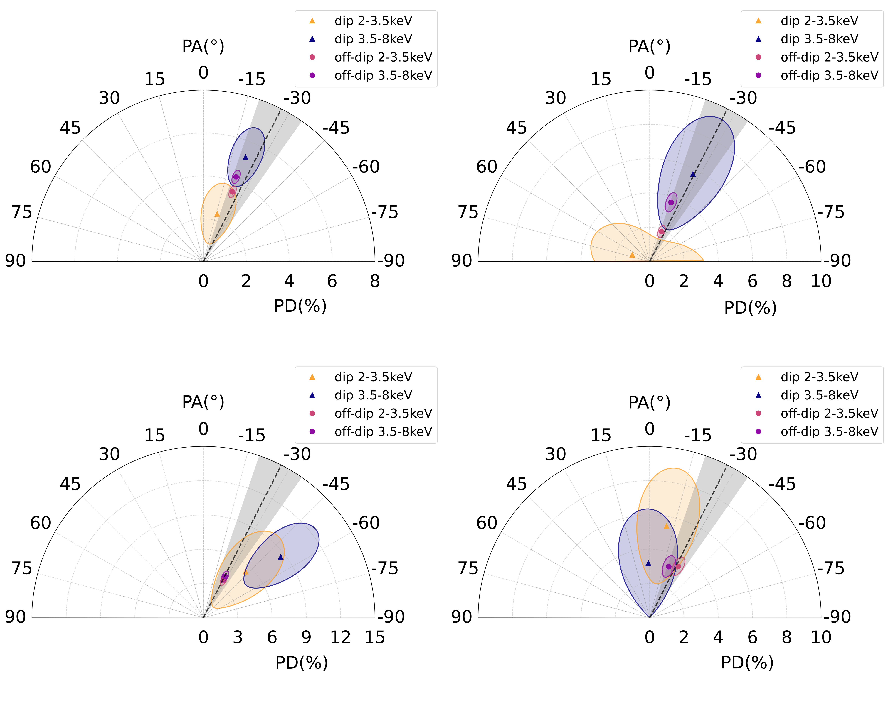 Fig02 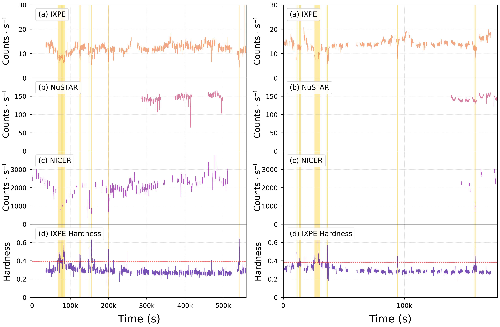 Fig06 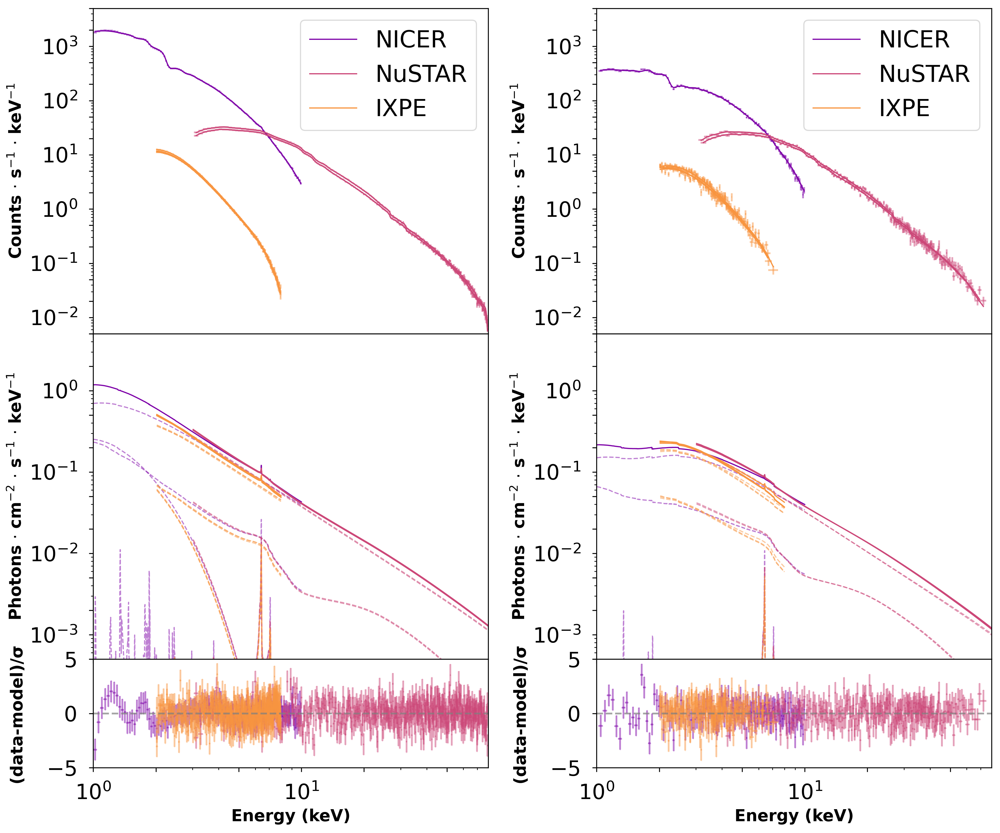 Fig03 Fig10 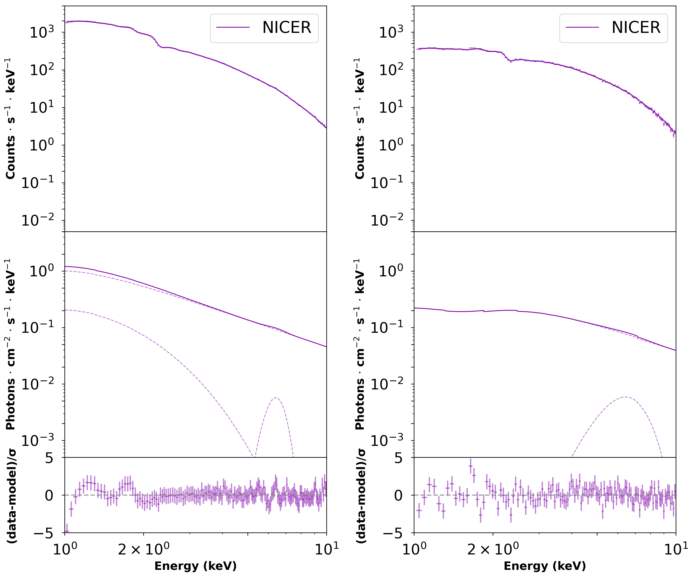 Fig07 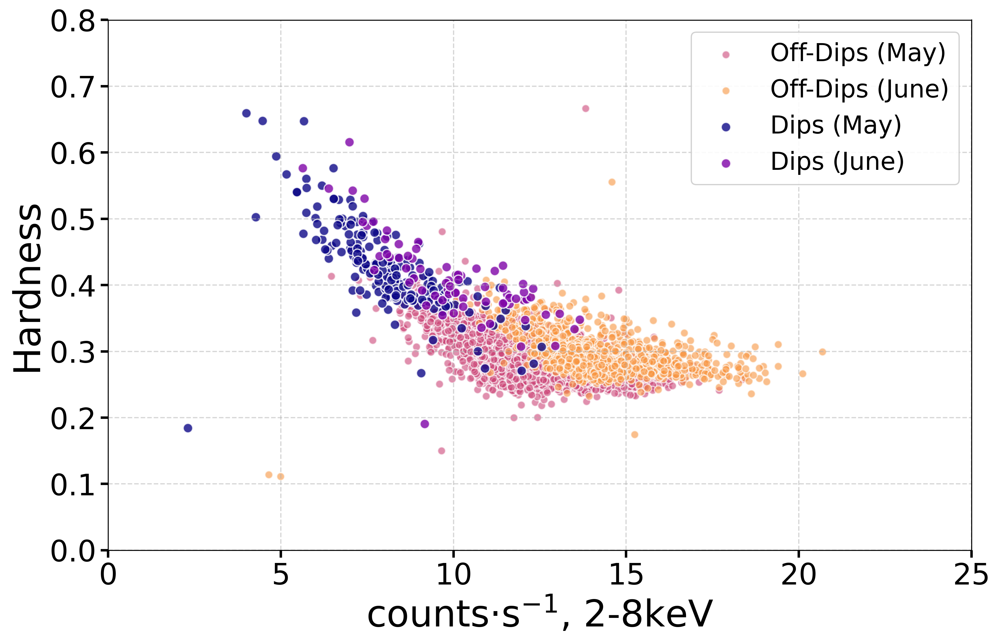 同一源和同类工作的脉络很清楚：天鹅座 X-1 是黑洞双星吸积态研究的原型源，有大量关于低硬态能谱、反射、时变、喷流和伴星风吸收的论文。IXPE 对天鹅座 X-1 的早期观测已经报告过低硬态显著偏振，并引发关于延展盘冕、喷流底部和反射散射几何的讨论。本文不是孤立发现，而是在同一源的偏振研究上加入“暗降分段”这一检验。检索关键词可用 “Cygnus X-1 IXPE polarization low hard state extended corona”、“Cygnus X-1 dips partial covering absorption”、“Cygnus X-1 stellar wind clumps X-ray dips”。 基础理论方面，相关工作包括黑洞双星的康普顿化模型、盘反射模型、X 射线偏振辐射转移和风吸收模型。与本文可能存在张力的解释包括：偏振来自喷流底部、来自紧凑灯柱照亮盘后的反射、或来自内盘相对论效应。如果这些模型预测暗降期间被遮挡成分权重变化会导致偏振变化，那么本文的“不变”就是约束；如果模型允许主要偏振区不被遮挡或尺度很大，则仍可兼容。检索关键词可用 “X-ray polarization Comptonizing corona slab geometry”、“black hole binary hard state polarization jet base”、“partial covering absorption high mass X-ray binary wind”。 同一事件 / 同类源线索： 相似工作： 基础理论 / 方法工作： 相反观点 / 张力线索： 中文题目：用 Glashow 共振在 tau 空气簇射中微子望远镜中探测中微子味组成 做了什么：这篇文章研究一个很具体但有潜在威力的问题：面向 \(\nu_\tau\) 的空气簇射中微子望远镜，是否也能通过 \(\bar{\nu}_e+e^-\to W^-\) 的 Glashow 共振间接测量高能天体中微子中的 \(\bar{\nu}_e\) 成分。作者针对 TAMBO 和 TRINITY 这类地球掠射、山体掠射实验做了显式模拟，计算 \(W^-\to\bar{\nu}_\tau+\tau^-\) 通道给出的可见 \(\tau\) 空气簇射接受度，并预估十年运行后对 \(\bar{\nu}_e/(\nu_\tau+\bar{\nu}_\tau)\) 通量比的约束。主要结论是：山体掠射几何比地球掠射几何更适合看到 Glashow 诱导的 \(\bar{\nu}_e\) 事件，因为岩石路径更短，\(\tau\) 更容易逃逸；但按现有设计，单靠这些实验要区分标准 \(pp\) 与 \(p\gamma\) 及其 muon-damped 源模型仍然困难，乐观情况下通量比也大约只能约束到 \(1\sigma\) 下小于约 \(2\) 的量级。真正容易被识别的是 \(\bar{\nu}_e\) 特别丰富的中子衰变源或某些新物理情形。 为什么重要：高能天体中微子的味组成不仅是“有多少 \(\nu_e\)、\(\nu_\mu\)、\(\nu_\tau\)”的问题，还包含中微子与反中微子的区分。\(pp\)、\(p\gamma\)、muon-damped、neutron-decay 等源模型在地球处经过振荡后可能给出相近的总味比例，但 \(\bar{\nu}_e\) 分量可以不同。Glashow 共振在 \(6.3\,\mathrm{PeV}\) 附近提供了少数能在天体中微子中有效标记反电子中微子的物理通道，因此它是连接源区强子物理、宇宙传播和新物理检验的关键诊断。 理论 / 观测 / 仪器方法价值：本文的价值不在于宣称某个实验一定能精确做味物理，而在于把 tau 空气簇射望远镜的“副通道”量化了：这些仪器本来为 \(\nu_\tau\) 设计，但 \(\bar{\nu}_e\) 的 Glashow 共振可通过 \(W^-\) 衰变产生 \(\tau\) 而进入同一探测拓扑。文章比较了地球掠射与山体掠射几何的差别，给出 TAMBO、TRINITY 十年尺度的接受度和通量比灵敏度，是评估下一代 PeV–EeV 中微子阵列物理产出的有用方法学参考。 为什么应该关注：如果你关心 IceCube 以后如何从“发现天体中微子”走向“测源区物理”，这篇文章值得看。它提醒我们：即使事件数不多，\(\bar{\nu}_e\) 与 \(\nu_\tau\) 的相对接受度、地形几何、岩石传播和 \(\tau\) 出射概率都会决定未来能否区分源模型。它也给实验设计一个直接信号：若目标包括 Glashow 物理，山体掠射构型和短岩石路径可能比单纯扩大几何面积更关键。 科学问题：高能天体中微子的味组成通常被写成地球处的 \((\nu_e:\nu_\mu:\nu_\tau)\)，但这个写法隐藏了一个重要信息，即中微子和反中微子的比例。标准带电 pion 衰变链、muon-damped 源、neutron-decay 源以及某些新物理模型在 \(\bar{\nu}_e\) 含量上可以差异很大。IceCube 对 Glashow 共振事件已有初步探索，但事件数少、能区窄。本文问的是：未来以 \(\tau\) 空气簇射为目标的 TAMBO 和 TRINITY，能不能利用 \(\bar{\nu}_e+e^-\to W^-\) 且 \(W^-\to\bar{\nu}_\tau+\tau^-\) 的通道来测量 \(\bar{\nu}_e\) 与 \(\nu_\tau+\bar{\nu}_\tau\) 的相对通量。 作者怎么做：文章把 Glashow 共振作为一个会在岩石中产生 \(\tau\) 的有效入射通道来模拟。对常规 \(\nu_\tau\) 事件，入射 \(\nu_\tau\) 在地壳或山体中发生带电流相互作用，产生 \(\tau\)，后者出射到大气中衰变并形成空气簇射。对 \(\bar{\nu}_e\) 事件，则是 \(\bar{\nu}_e\) 在 \(6.3\,\mathrm{PeV}\) 附近通过电子靶的 Glashow 共振产生 \(W^-\)，其中部分 \(W^-\) 衰变到含 \(\tau\) 的末态，随后走同样的出射与空气簇射探测链。作者对 TAMBO 和 TRINITY 的十年运行进行投影，比较 Earth-skimming 与 mountain-skimming 构型的接受度，并把结果转化为可约束的 \(\bar{\nu}_e/(\nu_\tau+\bar{\nu}_\tau)\) 通量比。 关键结果：最清楚的物理图像是，Glashow 共振截面很大，这既是优势也是劣势。它增加了 \(\bar{\nu}_e\) 相互作用概率，但若路径太长，事件容易在岩石深处发生，产生的 \(\tau\) 还没出射就损失能量或衰变，最终看不到。因此山体掠射几何的短路径让 \(\bar{\nu}_e\) 接受度明显优于地球掠射几何。对标准 pion-production 类源，\(pp\)、\(p\gamma\) 以及 muon-damped 变体在该通量比上的分离并不大，结合有限事件数后，单独靠 TAMBO 或 TRINITY 现有设计很难给出强区分。乐观假设下十年可把通量比约束到 \(1\sigma\) 小于约 \(2\) 的量级，但不足以成为标准源模型之间的决定性判据。 局限和下一步：本文的限制主要来自统计量、天体中微子通量归一化与谱形不确定性、岩石密度和地形模型、\(\tau\) 能损和空气簇射触发效率。另一个限制是只用 tau 空气簇射通道做 standalone 测量；如果和 IceCube-Gen2、GRAND、RNO-G、POEMMA 或未来射电阵列联合，就可能把 Glashow 事件、级联事件、\(\nu_\tau\) 出射事件和谱形信息合并，降低参数退化。下一步值得做的是把真实地形、时间依赖曝光、方向关联以及源类先验纳入联合似然，而不只是用积分接受度给出通量比预估。 本文最重要的证据链从事件通道定义开始：作者不是把 TAMBO 和 TRINITY 当作普通全味中微子探测器，而是聚焦于能够产生出射 \(\tau\) 并在大气中形成可探测簇射的事件。标准信号是 \(\nu_\tau+\bar{\nu}_\tau\) 在岩石中相互作用后产生 \(\tau\)；新增信号是 \(\bar{\nu}_e\) 通过 Glashow 共振生成 \(W^-\)，再经 \(W^-\to\bar{\nu}_\tau+\tau^-\) 产生 \(\tau\)。因此核心可观测量不是绝对 \(\bar{\nu}_e\) 通量，而是经探测器响应折叠后的 \(\bar{\nu}_e\) 诱导事件数与 \(\nu_\tau+\bar{\nu}_\tau\) 诱导事件数之比。 样本和事件数方面，论文做的是投影研究，因此“样本”来自假设的十年运行曝光、给定天体中微子谱和不同源模型的味/反味组成。作者分别计算 TAMBO 与 TRINITY 的接受度，且区分地球掠射和山体掠射几何。读者应特别关注文中接受度随能量变化的图：Glashow 共振在 \(E_{\bar{\nu}_e}\simeq6.3\,\mathrm{PeV}\) 附近带来尖锐增强，但这个增强在最终可见 \(\tau\) 事件中会被 \(W^-\) 衰变分支比、\(\tau\) 能量分布、岩石传播和探测阈值重新塑形。 统计推断的关键是把不同源模型预言的 \(\bar{\nu}_e/(\nu_\tau+\bar{\nu}_\tau)\) 与实验可测精度比较。由于 projected 事件数有限，文章的主要结论是分离 \(pp\)、\(p\gamma\) 和 muon-damped 源很难，而不是不能定义这个观测量。所谓乐观情况下通量比约束到 \(\lesssim2\) 的 \(1\sigma\) 水平，应理解为在较理想通量、接受度和背景控制条件下，对一个积分或窄能区加权比值的误差量级，而不是对源模型空间的高显著性排除。 支撑结论的图表应包括：不同几何的 \(\bar{\nu}_e\) 与 \(\nu_\tau\) 接受度曲线、十年事件数或曝光表、不同源模型的通量比预测，以及 projected confidence interval 或灵敏度带。最值得看的不是某一个模型点，而是模型点之间的间距是否显著大于统计误差与系统误差带。若误差带覆盖了 \(pp\) 与 \(p\gamma\) 模型，则即使中心值不同，也不能称为有效区分。 系统误差方面，本文的稳健性取决于几个环节：中微子截面尤其是 Glashow 共振附近的能量响应、\(\tau\) 在岩石中的随机能损、地形路径长度分布、空气簇射触发效率，以及天体中微子谱在 PeV 附近的归一化和谱指数。山体掠射优于地球掠射的结论较有物理稳健性，因为它来自路径长度与出射概率的基本几何差异；但具体约束数字会随实验设计和真实运行条件变化。 研究对象是 PeV 以上高能天体中微子，特别是其中的反电子中微子 \(\bar{\nu}_e\) 与 tau 味中微子 \(\nu_\tau+\bar{\nu}_\tau\)。在源区，宇宙线质子或原子核与气体或辐射场相互作用产生 pion，随后 pion 和 muon 衰变产生中微子。经过宇宙学距离传播后，三味振荡使味比例趋于混合，但反味组成仍保留源区相互作用类型的部分记忆。 历史上，高能中微子味组成常被用来检验 \((1:2:0)\) 源比例是否在地球处变为近似 \((1:1:1)\)。这个说法对入门很有用，但对源模型区分过于粗略。\(pp\) 相互作用一般产生近似对称的 \(\pi^+\) 与 \(\pi^-\)，因此中微子和反中微子较均衡；典型 \(p\gamma\) 的 \(\Delta\) 共振通道更偏向 \(\pi^+\)，可能压低 \(\bar{\nu}_e\)；中子衰变源则可产生较强 \(\bar{\nu}_e\)。这些差异是 Glashow 共振诊断的基础。 观测背景方面，IceCube 已经探测到弥散天体中微子流，并在 PeV 区域寻找 Glashow 共振特征。困难在于 \(6.3\,\mathrm{PeV}\) 附近的事件率低、谱形可能变陡、探测拓扑有限。下一代实验的设计方向包括更大体积的光学 Cherenkov 阵列、射电阵列、轨道/气球观测以及利用地球或山体作为转换靶的空气簇射望远镜。TAMBO 和 TRINITY 属于后一类：它们主要看 \(\tau\) 出射后在大气中的衰变簇射。 为什么现在值得重新看：一方面，未来十年可能有多个 PeV–EeV 中微子设施进入建设或运行，仪器设计阶段就需要评估每种几何能提供哪些独特物理量；另一方面，单纯累计全味事件数可能不足以区分源模型，必须利用反中微子标记、方向、能谱和拓扑信息。Glashow 共振提供了一个天然的反中微子选择器，而 tau 空气簇射实验提供了巨大有效靶体和长基线几何，两者结合有新空间。 常见误区有三个。第一，把所有 \(\nu_e\) 和 \(\bar{\nu}_e\) 混在一起讨论，会低估 Glashow 共振的判别力。第二，以为共振截面越大事件越容易看见；对岩石中产生的 \(\tau\) 来说，截面过大也会让相互作用发生在太深处，降低出射概率。第三，以为测到 \(\bar{\nu}_e/(\nu_\tau+\bar{\nu}_\tau)\) 就能直接判定 \(pp\) 或 \(p\gamma\) 源；实际上振荡参数、谱形、源类混合和探测器响应都会引入退化。 基础物理图像从两步转换开始：入射高能中微子先在岩石或山体中发生相互作用，产生一个带电 \(\tau\)；\(\tau\) 若能在衰变前逃出介质，就会在大气中产生上行或近水平空气簇射，被广角光学系统看到。对普通 \(\nu_\tau\) 通道，第一步是深非弹性带电流相互作用；对 \(\bar{\nu}_e\) 通道，第一步是电子靶上的 Glashow 共振。 Glashow 共振的核心是 \(\bar{\nu}_e+e^-\to W^-\)，共振能量约为 \(E_{\rm res}=M_W^2/(2m_e)\simeq6.3\,\mathrm{PeV}\)。由于这是 \(s\)-道弱玻色子共振，截面在共振附近大幅超过普通中微子-核子深非弹性散射。本文利用的是 \(W^-\) 的衰变分支之一：\(W^-\to\bar{\nu}_\tau+\tau^-\)。这个分支不会占全部 Glashow 事件，但它把 \(\bar{\nu}_e\) 转换成 tau 空气簇射实验敏感的最终态。 对探测而言，关键量包括入射能量 \(E_\nu\)、入射天顶角或掠射角、岩石柱密度 \(X\)、相互作用长度、\(\tau\) 出射能量 \(E_\tau\)、\(\tau\) 衰变长度以及望远镜触发效率。地球掠射事件可利用长地球弦长作为靶体，但在 PeV 附近如果路径过长，吸收和能损会削弱可见率。山体掠射构型路径短而靶体近，可能更适合 Glashow 共振这种高截面但需要 \(\tau\) 逃逸的通道。 模型假设通常包括：天体中微子通量可写为幂律或带截断幂律；源处味/反味比例来自 \(pp\)、\(p\gamma\)、muon-damped 或 neutron-decay 场景；传播中采用标准三味振荡的平均概率；探测器响应由能量和方向相关接受度表示。本文的通量比测量本质上是一个响应加权比值，而不是源处成分的直接读数。 主要退化来自谱形与组成。因为 Glashow 共振只在窄能区强烈响应，若真实天体谱在 \(6.3\,\mathrm{PeV}\) 附近变软或有截断，就会模仿低 \(\bar{\nu}_e\) 分量。反过来，一个硬谱或局部源贡献可能抬高 Glashow 事件数。\(\nu_\tau\) 接受度也随能量变化，所以 \(\bar{\nu}_e/(\nu_\tau+\bar{\nu}_\tau)\) 的拟合必须同时处理谱指数、归一化、方向曝光和 \(\tau\) 能损系统误差。 第一步是源处味组成到地球处味组成的平均振荡映射。宇宙距离远大于振荡长度时，振荡相位平均，地球处 \(\nu_\beta\) 通量为 这里 \(\Phi_\alpha^S(E)\) 是源处 \(\alpha\) 味通量，\(\Phi_\beta^\oplus(E)\) 是地球处通量，\(U_{\alpha i}\) 是 PMNS 矩阵。对反中微子，在标准真空振荡且忽略 CP 相位平均效应的情形下可使用同类概率矩阵。 第二步是 Glashow 共振能量。电子静止近似下，质心能量满足 当 \(s=M_W^2\) 时发生共振，因此 这里 \(m_e\) 是电子质量，\(M_W\) 是 \(W\) 玻色子质量。这说明 Glashow 事件天然选择 PeV 能区的 \(\bar{\nu}_e\)。 第三步是共振截面的能量形状。用 Breit-Wigner 形式可写成示意表达式 其中 \(\Gamma_W\) 是 \(W\) 宽度，\(B(W^-\to X)\) 是目标末态分支比。本文关心的有效 \(\tau\) 产生通道包含 这里 \(K_\tau(E_\tau|E)\) 表示 \(W\) 衰变后 \(\tau\) 能量分布的核函数；若只做积分事件率，可把它折叠进接受度。 第四步是介质中的相互作用概率。沿柱密度 \(X\) 穿行时，中微子存活概率近似为 其中 \(N_A\) 是阿伏伽德罗常数，\(\sigma_{\rm tot}(E)\) 是总相互作用截面，\(X=\int \rho(l)\,dl\) 是质量柱密度。短路径山体掠射与长路径地球掠射的差异，主要就体现在 \(X\) 的分布上。 第五步是 \(\tau\) 出射概率的基本尺度。若忽略随机能损，\(\tau\) 衰变长度为 实际在岩石中还要考虑连续能损 其中 \(\alpha\) 代表电离损失，\(\beta\) 代表辐射损失项。可见出射概率需要相互作用点靠近表面、\(E_\tau\) 足够高且能在大气中衰变。 第六步是把物理过程折叠为实验事件数。对某一通道 \(c\)，预期事件数可写为 这里 \(T\) 是运行时间，\(\Phi_c\) 是通量，\(A_c^{\rm eff}\) 是包含几何面积、相互作用概率、出射概率、空气簇射触发效率和重建选择的有效接受度。 第七步是本文关心的响应加权通量比。若把 \(\nu_\tau+\bar{\nu}_\tau\) 作为参照，可定义 观测上更接近的是事件比 其中 \(f_{\bar{\nu}_e}(E)\) 与 \(f_\tau(E)\) 是归一化谱形。这个式子说明，事件比不是纯粹的源组成，还受谱形和接受度强烈影响。 第八步是投影约束常用的 Poisson 似然。若观测到 \(n_i\) 个落在第 \(i\) 个能量或方向 bin 的事件，模型预期为 \(\mu_i(\theta)\)，则 这里 \(\theta\) 可包含 \(R_{e\tau}\)、总通量归一化、谱指数和系统误差 nuisance 参数。通过 \(\Delta(-2\ln\mathcal{L})\) 或后验区间，可得到十年运行对 \(R_{e\tau}\) 的 \(1\sigma\) 约束。 这类工作的拟合量首先是各通道预期事件数，而不是单个事件的精细重建参数。对 TAMBO 和 TRINITY，模型预测通常由入射通量、振荡后味/反味比例、介质传播、\(\tau\) 出射和空气簇射触发效率共同决定。本文把这些折叠为能量和方向相关的接受度，再用十年曝光估计 \(\bar{\nu}_e\) Glashow 通道和普通 \(\nu_\tau+\bar{\nu}_\tau\) 通道的事件数。 参数估计上，核心参数可视为 \(R_{e\tau}=\Phi_{\bar{\nu}_e}/(\Phi_{\nu_\tau}+\Phi_{\bar{\nu}_\tau})\)，同时需要处理总通量归一化和谱指数。若做完整似然，应把每个能量/方向 bin 的事件数看成 Poisson 变量，并对天体谱、背景、地形模型、触发效率等 nuisance 参数加先验。本文作为灵敏度投影，重点在比较不同源模型给出的 \(R_{e\tau}\) 是否超过实验误差。 残差诊断应该看两个层次。第一层是接受度层面：模拟得到的 \(A_{\rm GR}^{\rm eff}(E,\Omega)\) 是否在 \(6.3\,\mathrm{PeV}\) 附近有合理峰形，山体掠射与地球掠射差别是否能由路径长度解释。第二层是物理模型层面：不同源模型的预期事件数差异是否主要来自 \(\bar{\nu}_e\) 含量，而不是归一化或谱指数变化。若一个更硬的谱可以模仿 \(\bar{\nu}_e\) 丰富模型，则单独通量比约束就会变弱。 主要退化关系包括 \(R_{e\tau}\) 与天体通量归一化的退化、\(R_{e\tau}\) 与谱指数的退化、\(\tau\) 能损模型与有效面积的退化，以及地形柱密度与出射概率的退化。Glashow 共振的窄能量响应有利于反味识别，但也使结果对 PeV 附近谱形尤其敏感。如果真实谱存在 cutoff、break 或多个源族叠加，简单幂律假设下的 \(R_{e\tau}\) 置信区间可能过窄。 模型可能失败的地方也很明确：若空气簇射触发阈值、云层/大气透明度、望远镜 duty cycle 或地形遮挡与设计值差别很大，事件率会系统偏移；若 prompt atmospheric neutrino 或误重建宇宙线背景不可忽略，Poisson 统计中需要加入背景项；若新物理改变传播味组成，标准振荡矩阵得到的源模型映射也不再适用。因此实际应用中，本文的框架更适合作为实验设计和联合分析的基准，而不是最终数据分析的完整模型。 数据/样本与实验设定：读者应先看作者如何定义 TAMBO 和 TRINITY 的十年运行曝光、视场、几何构型以及 Earth-skimming 与 mountain-skimming 的差异。这里决定了所有后续事件数的量级。特别要注意岩石路径长度分布，因为它是本文山体掠射优势的物理来源。 信号通道建模：接着读 \(\nu_\tau+\bar{\nu}_\tau\) 标准 tau 出射通道和 \(\bar{\nu}_e\) Glashow 通道的处理。关键问题是作者如何处理 \(W^-\to\bar{\nu}_\tau+\tau^-\) 分支、\(\tau\) 能量分布、能损和出射概率。不要只看共振截面峰值；最终接受度才是探测器真正测到的量。 源模型与味组成：然后看 \(pp\)、\(p\gamma\)、muon-damped 和 neutron-decay 等源情形如何给出地球处 \(\bar{\nu}_e/(\nu_\tau+\bar{\nu}_\tau)\)。这里需要区分源处粒子物理比例与地球处振荡后的比例。若作者给出模型点或带状区域，应检查是否包含振荡参数不确定性。 灵敏度投影：重点读十年运行后对通量比的置信区间或误差估计。看作者是用事件数近似、Poisson 统计还是更完整的似然；看 \(1\sigma\) 约束是否受某个乐观通量假设驱动。本文的主结论，即标准 \(pp\) 与 \(p\gamma\) 分离困难、\(\bar{\nu}_e\) 丰富模型更容易被识别，应在这一节得到定量支撑。 讨论与稳健性：最后读系统误差和实验设计讨论。最重要的是确认山体掠射优势是否对地形、能阈、\(\tau\) 能损模型和天体谱假设稳健。若论文附录给出接受度计算或 cross-check，应优先检查这些，因为小样本投影的结论往往由响应函数细节决定。 接受度随能量变化图：检查 \(\bar{\nu}_e\) Glashow 通道是否在 \(6.3\,\mathrm{PeV}\) 附近出现峰值，以及峰值在折叠 \(W^-\to\tau\) 分支和 \(\tau\) 出射后是否仍显著。 Earth-skimming 与 mountain-skimming 几何比较图：看横轴若为入射角或路径长度，山体掠射是否确实对应较短岩石柱密度；看接受度差异是否在 Glashow 通道比在普通 \(\nu_\tau\) 通道更明显。 TAMBO 与 TRINITY 十年事件数表：重点看 \(\mu_{\rm GR}\) 与 \(\mu_\tau\) 的绝对量级。若事件数只有个位数，任何源模型区分都应非常谨慎。 源模型通量比预测图：检查 \(pp\)、\(p\gamma\)、muon-damped、neutron-decay 等模型点或区域之间的间距，并与 projected error bar 比较。 \(R_{e\tau}\) 灵敏度或置信区间图：看 \(1\sigma\)、\(2\sigma\) 区间是否覆盖多个标准源模型；若覆盖，则不能把中心值差异解读为模型识别。 系统误差或稳健性检验图：若有改变谱指数、通量归一化、\(\tau\) 能损或地形模型的图，应看结论是否保持山体掠射优于地球掠射，以及 \(\bar{\nu}_e\) 丰富模型是否仍能被约束。 图 1：通常应是信号机制或几何示意图。读图时看入射 \(\bar{\nu}_e\) 如何在岩石或山体内通过 Glashow 共振产生 \(W^-\)，再到 \(\tau^-\) 出射并在大气中衰变。陷阱是把相互作用位置画得太理想化；真实可见事件要求相互作用点足够接近表面，不能只凭大截面判断事件率。 图 2：若为有效接受度 \(A^{\rm eff}(E)\) 曲线，横轴多半是入射中微子能量，纵轴是面积乘立体角或等效接受度。应比较 \(A_{\rm GR}^{\rm eff}\) 与 \(A_\tau^{\rm eff}\)，并看 \(6.3\,\mathrm{PeV}\) 附近的峰是否被探测阈值和 \(\tau\) 出射概率削弱。不同颜色或线型可能代表 TAMBO、TRINITY、Earth-skimming、mountain-skimming。 图 3：若为路径长度或柱密度分布，横轴可能是掠射角、弦长或 \(X\)，纵轴为归一化分布或接受度贡献。关键结论应是山体掠射给出较短、更可控的介质路径，使 Glashow 诱导的 \(\tau\) 更容易逃逸。读图陷阱是只看几何面积；对高截面通道，有效路径窗口比总靶质量更重要。 图 4：若为不同源模型的 \(R_{e\tau}\) 预测，横轴可能是模型类别或某个源参数，纵轴为 \(\bar{\nu}_e/(\nu_\tau+\bar{\nu}_\tau)\)。应看标准 \(pp\)、\(p\gamma\) 和 muon-damped 区域是否相互重叠，以及 neutron-decay 或新物理情形是否明显偏高。陷阱是忽略振荡参数和谱形带来的展宽。 图 5：若为十年灵敏度或置信区间，横轴可能是运行时间、通量归一化或真实 \(R_{e\tau}\)，纵轴为可排除/可测区间。应把误差条与模型间距直接比较。若 \(1\sigma\) 误差约为通量比 \(\lesssim2\) 的量级，则说明 standalone 测量更像约束极端 \(\bar{\nu}_e\) 丰富情形，而不是精确区分标准源。 图 6：若为系统误差检验或附录诊断图，应看改变谱指数、能阈、\(\tau\) 能损或地形后曲线是否整体平移还是改变相对排序。若山体掠射优势在这些变化下仍存在，说明该结论来自稳健几何物理；若模型区分显著性变化很大，则说明源分类结论依赖乐观假设。 Fig03 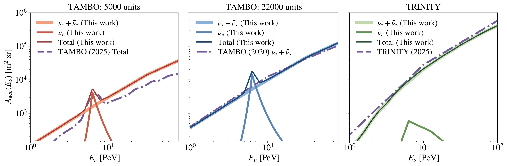 Fig05 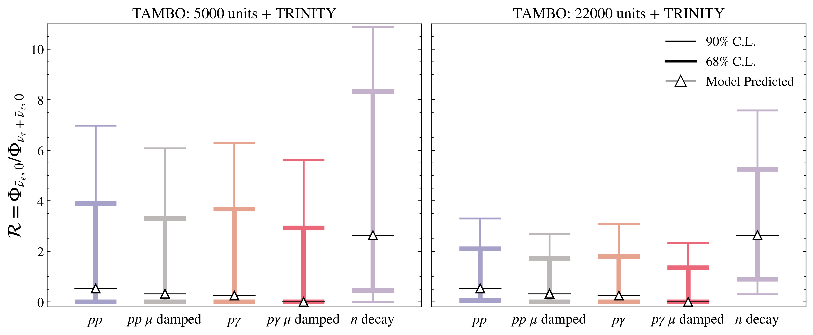 Fig06 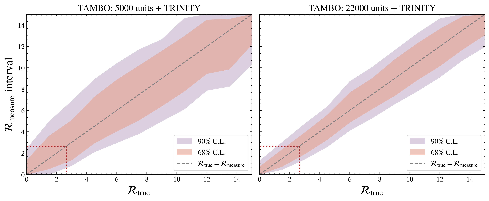 Fig04 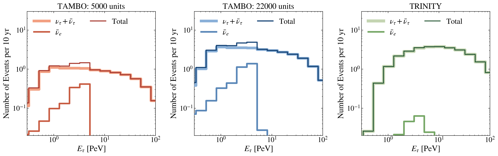 Fig01 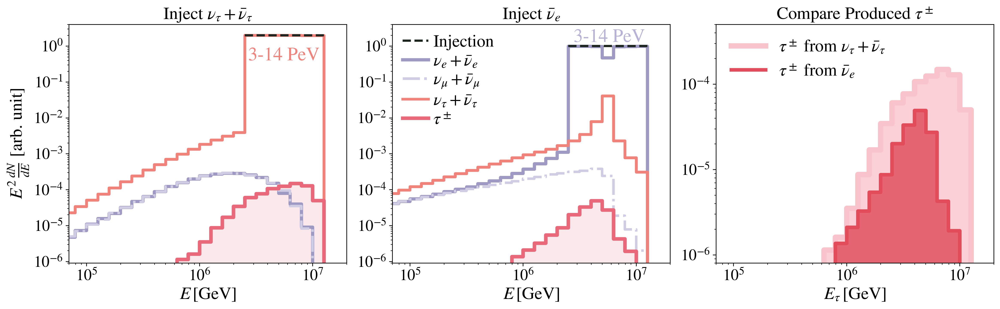 Fig02 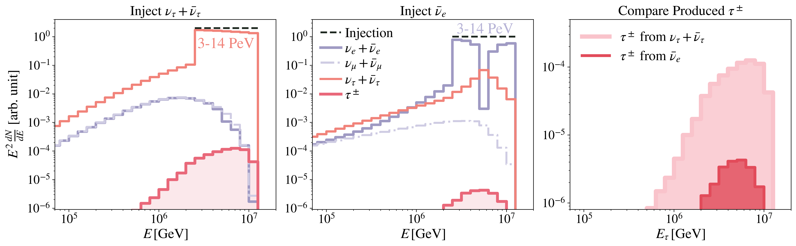 这篇工作属于 Glashow 共振天体中微子物理和下一代 tau 空气簇射探测器灵敏度研究的交叉。直接相关的同类工作包括 IceCube 对 Glashow 共振候选事件的报道、IceCube 对天体中微子味组成的限制、TAMBO 和 TRINITY 的仪器概念论文，以及 GRAND、POEMMA、BEACON、Ashra/NTA 等利用地球或山体转换 \(\nu_\tau\) 的方案。建议检索关键词：\(\text{Glashow resonance astrophysical neutrinos}\)、\(\text{tau air shower neutrino telescope}\)、\(\text{TAMBO neutrino}\)、\(\text{TRINITY neutrino telescope}\)、\(\text{neutrino flavor composition antineutrino}\)。 基础理论上，这篇文章延续了两个经典问题：一是源处 \(pp\) 与 \(p\gamma\) 相互作用如何决定中微子与反中微子比例；二是长基线平均振荡如何把源处味比例映射到地球处。相反或有张力的观点主要来自统计现实：IceCube 的 PeV 事件率显示 Glashow 能区统计量非常有限，许多源模型在总味比例上高度重叠，因此单一实验、单一拓扑的区分能力可能被高估。检索时应同时看 \(\text{IceCube Glashow resonance Nature 2021}\)、\(\text{neutrino flavor triangle}\)、\(\text{muon-damped sources}\)、\(\text{neutron beam sources}\) 等关键词。 同一事件 / 同类源线索： 相似工作： 基础理论 / 方法工作： 相反观点 / 张力线索： 中文题目：中等质量黑洞候选体 HLX-1 的 X 射线与光学衰退 做了什么：这篇文章用 2018–2022 年的 HST、Chandra 和 Swift 新观测，追踪中等质量黑洞候选体 HLX-1 在 2017 年最后一次明显爆发后的晚期演化。核心发现是：X 射线已长期停留在低光度态，约为几个 \(10^{39}\,\mathrm{erg\,s^{-1}}\)，比 2010 年峰值低至少两个数量级；但光学和紫外衰退慢得多，导致晚期的 X 射线/光学光度比无法再用标准吸积盘的 X 射线再处理解释，因为所需再处理比例会超过 \(100\%\)。作者提出，蓝色光学/紫外分量更像一个温度约 \(3\times10^4\,\mathrm{K}\) 的冷却、膨胀光球，类似潮汐瓦解事件晚期；红色分量则可由宿主大质量星团的老年恒星族解释。文章还重新解析了 HLX-1 旁边神秘远紫外源的形态，认为它更像环状恒星形成结构，并讨论 HLX-1、宿主星团和这个矮星暴结构之间可能的物理关联。 为什么重要：HLX-1 是少数长期被认真讨论的中等质量黑洞候选体之一。过去它以近周期 X 射线爆发和类恒星级黑洞的谱态转变而著名，这使人们倾向于把它看成一个被恒星供给的吸积系统。本文的重要性在于把时间基线拉到爆发停止后的多年低态，发现 X 射线与光学/紫外已经明显脱耦；这直接挑战了“光学主要来自 X 射线照亮外盘”的简单图像，并增强了“HLX-1 是一次中等质量黑洞潮汐瓦解事件或其后期盘不稳定阶段”的解释。 理论 / 观测 / 仪器方法价值：对理论而言，本文把 HLX-1 的重复爆发现象与潮汐瓦解事件后期吸积盘不稳定联系起来，提供了一个连接中等质量黑洞、非稳态吸积和 TDE 长时标演化的案例。对观测而言，它展示了为什么多波段长期监测比单次高态观测更有判别力：仅看峰值 X 射线光度可能支持中等质量黑洞，但晚期 X 射线/光学比例和颜色演化能排除某些吸积盘模型。对方法而言，文章把 HST 高角分辨光度测量、Chandra 弱源 X 射线定位与 Swift 长期监测结合，用空间分辨和时间演化同时拆分星团、光球和邻近星暴结构的贡献。 为什么应该关注：如果你关心中等质量黑洞是否真实存在、如何形成、以及它们能否通过 TDE 被发现，HLX-1 是绕不开的对象。本文告诉我们：HLX-1 不只是“一个超亮 X 射线源”，它的晚期多波段能量收支已经成为区分持久 Roche-lobe 溢流、盘热黏不稳定、以及 TDE 后期演化的关键证据。它也提醒读者，在复杂宿主环境中，光学/紫外 counterpart 的物理解释很容易被邻近星团或星暴结构污染，必须用高分辨率成像和时间演化一起判断。 科学问题：HLX-1，通常指 ESO 243-49 HLX-1，是最著名的中等质量黑洞候选体之一。它的峰值 X 射线光度曾达到超出普通恒星级黑洞 Eddington 极限很多的水平，并且显示类似恒星级黑洞双星的谱态转变，因此长期被用作 \(10^3\) 到 \(10^5\,M_\odot\) 黑洞的候选证据。不过，HLX-1 的性质一直有两个核心疑问：第一，它的 X 射线爆发究竟是普通伴星供给下的盘不稳定，还是潮汐瓦解事件后期的非稳态吸积？第二，光学/紫外 counterpart 中有多少来自吸积流，有多少来自宿主星团或邻近恒星形成结构？本文把焦点放在 2017 年最后一次明显爆发之后的晚期衰退，因为此时不同模型的能量收支差异最明显。 作者怎么做：论文汇集了 2018–2022 年新的 Hubble Space Telescope、Chandra 和 Swift 观测，并与 2010 年以来的历史高态和爆发期数据连接。X 射线部分主要用于确定 HLX-1 是否仍然爆发、当前低态光度是多少、以及是否存在谱态或通量上的恢复。光学/紫外部分利用 HST 的角分辨能力拆分 HLX-1 位置处的蓝色/红色成分，并重新审视投影在旁边的远紫外发射体。作者比较了两类解释：一种是标准吸积盘外区对内区 X 射线的再处理；另一种是一个温度约 \(3\times10^4\,\mathrm{K}\) 的冷却、膨胀光球，叠加老年星团的恒星光。 关键结果：X 射线在 2017 年之后没有恢复到早期爆发峰值，而是长期维持在低光度态，约为几个 \(10^{39}\,\mathrm{erg\,s^{-1}}\)。这仍然高于许多普通 X 射线双星，但比 2010 年峰值低至少两个数量级。与此相比，光学/紫外衰退缓慢得多，导致晚期若强行用 X 射线再处理解释光学/紫外通量，就需要超过 \(100\%\) 的再处理效率，这在能量守恒上不可接受。作者因而认为蓝色成分更自然地来自一个 TDE 类似的光球，而红色光则可由承载中等质量黑洞的老年大质量星团贡献。 局限和下一步：本文的解释仍依赖于有限的晚期采样和多成分光度分解。HLX-1 所在环境复杂，邻近远紫外结构、宿主星团、背景星系 ESO 243-49 的光以及点扩散函数残差都会影响光学/紫外测光。X 射线低态的谱形和吸收柱也可能带来光度不确定性。下一步最有价值的是继续进行深 Chandra 或 Athena 级别的 X 射线监测、JWST 或 HST 的多色高分辨成像、以及光学/近红外光谱，以检验光球是否继续冷却膨胀、星团年龄和质量是否与中等质量黑洞宿主相容，并确认旁边远紫外环状结构与 HLX-1 是否有真实动力学关联。 本文最重要的证据链从样本选择开始：作者不是重新定义一个大样本，而是对单个高价值源 HLX-1 做长期多波段时间序列。所用数据包括 2018–2022 年 HST、Chandra 和 Swift 新观测，并与 2010 年以来已发表的 X 射线爆发、光学/紫外测光和状态转变记录合并。这个设计的关键不在事件数，而在时间基线：早期高态给出能量标尺，2017 年后低态给出模型判别点。 X 射线结果的核心量是 \(0.3\) 到 \(10\,\mathrm{keV}\) 或相近能段的吸收修正光度，以及它相对历史峰值的下降幅度。Chandra 提供低态下较可靠的位置和弱源通量测量，Swift 提供长期监测连续性。作者报告 HLX-1 自 2017 年后停留在低光度水平，约为几个 \(10^{39}\,\mathrm{erg\,s^{-1}}\)，而历史峰值高两个数量级以上。这里的“显著”主要来自跨多年、多仪器一致的通量差异，而不是单一观测中的微弱变化。 光学/紫外证据链更关键。作者用 HST 的多滤光片成像测量 HLX-1 counterpart，并把晚期光度与早期爆发期光度比较。若光学/紫外主要来自外盘对 X 射线的再处理，则再处理光度应随 X 射线光度同步降低，至少不应在 X 射线大幅衰退后仍维持过高比例。论文发现，晚期光学/紫外相对 X 射线过亮，按标准再处理模型需要 \(f_{\rm rep}>1\)，即再处理光度超过可用 X 射线输入，这构成了模型排除的主要定量依据。 模型比较上，作者把光学/紫外谱能量分布分为较蓝的暂现分量和较红的恒星分量。蓝色分量用近似黑体或光球模型拟合，得到温度约 \(3\times10^4\,\mathrm{K}\)，并表现出缓慢冷却、半径增大的趋势；这与若干 TDE 晚期光学/紫外光球演化相似。红色分量则与老年大质量星团的恒星族颜色和光度相容。支撑这些结论的图表应包括长期 X 射线光变曲线、多波段光变、光学/紫外 SED 拟合、以及 HST 形态分解图。 系统误差主要有四类：第一，低态 X 射线计数少，谱模型、吸收柱和背景扣除会影响光度；第二，HST 图像中 HLX-1、星团和附近远紫外结构的点扩散函数或扩展源分离会影响蓝色通量；第三，ESO 243-49 的距离、消光和宿主背景会传播到光度和颜色；第四，若吸积盘几何高度、风或各向异性辐射很强，简单再处理比例的解释会改变。作者的稳健性来自多仪器时间一致性和能量守恒约束：即便允许常规不确定性，晚期光学/紫外也很难由当前低态 X 射线照亮产生。 论文还把邻近远紫外源重新解析为环状恒星形成结构，而非一个简单点源。这一点不是主结论的唯一支柱，但影响 HLX-1 环境解释：如果 HLX-1 的星团与这个星暴矮结构有物理关联，可能涉及高速碰撞、星团剥离或矮星系并合残骸。读者应特别检查形态图和测光孔径选择，因为这个结论最容易受角分辨率、投影效应和背景结构影响。 HLX-1 是“hyper-luminous X-ray source”的典型案例，位于 ESO 243-49 方向，投影在一个较复杂的星系环境中。它最初引人注意是因为峰值 X 射线光度远高于普通超亮 X 射线源的常见范围，若按各向同性辐射且不严重超 Eddington 来解释，需要中等质量黑洞。中等质量黑洞通常指质量介于恒星级黑洞和星系核超大质量黑洞之间的对象，大致为 \(10^2\) 到 \(10^5\,M_\odot\)，它们是黑洞种子、星团动力学和早期星系形成中的关键缺环。 HLX-1 的历史难题在于它既像 X 射线双星，又不像普通 X 射线双星。它曾出现多次 X 射线爆发，且在高低态之间发生谱态转变，这与恒星级黑洞暂现源的行为相似。但它的峰值光度太高，周期或准周期爆发的长期稳定性也不容易用普通伴星 Roche-lobe 溢流完全解释。早期模型包括偏心轨道供给、吸积盘热黏不稳定、被剥离星核或星团中的黑洞吸积等。 潮汐瓦解事件提供了另一条思路：一颗恒星被中等质量黑洞撕裂后，回落物质和随后形成的盘可在很长时间内供给吸积。经典 TDE 的回落率近似随时间按幂律下降，但真实系统中会受盘形成效率、喷流或风、热黏不稳定和再处理层影响，可能出现非单调的爆发或状态转变。本文强调，HLX-1 早期爆发阶段可与 TDE 后期盘不稳定模拟相容，而 2017 年后的长期低态和光学/紫外滞后则更像 TDE 的慢演化残余。 现在值得重新看 HLX-1，是因为它已经从“反复爆发的候选中等质量黑洞”进入“爆发停止后的晚期低态”。许多模型在高态时都能调参数解释峰值光度，但在低态时会受到能量预算的强约束。尤其是 X 射线再处理模型要求光学/紫外输出不能超过可拦截的 X 射线输入；当 X 射线已低两个数量级而光学/紫外没有同步下降时，模型判别力显著增强。 该领域常见误区之一是把高 X 射线光度直接等同于中等质量黑洞质量。实际上，超 Eddington 吸积、几何准直、距离误差或源混淆都可能改变质量推断。另一个误区是把光学 counterpart 的所有光都归因于吸积盘。对于 HLX-1 这类位于复杂星系背景中的源，红色恒星族、年轻星团、邻近星形成区和暂现光球都可能混在同一个测光孔径里。本文的价值正是用时间演化和空间分辨来拆解这些贡献。 基本物理图像可以从吸积能量释放开始。黑洞周围物质向内落入时，重力势能转化为辐射、机械能和热能。若辐射近似各向同性，观测到的高 X 射线光度可与 Eddington 光度比较，从而给出黑洞质量的下限或吸积率尺度。对于 HLX-1，峰值 X 射线光度之所以重要，是因为它远超普通恒星质量黑洞在亚 Eddington 条件下可轻易达到的范围。 标准外盘再处理模型假设，内盘或热冕产生的 X 射线照射外盘，外盘吸收其中一部分并以光学/紫外热辐射重新发出。这个机制在许多 X 射线双星和活动星系核中都存在，但它受到几何因子和能量守恒限制：外盘只能截获一小部分 X 射线，通常再处理比例 \(f_{\rm rep}\) 远小于 \(1\)。若晚期观测要求 \(f_{\rm rep}>1\)，说明当前 X 射线不能提供足够能量，必须引入其他光源或历史能量储存。 TDE 光球模型的物理图像不同。恒星被撕裂后，回落物质、盘风或再处理层可形成一个光学厚的扩展光球。观测到的蓝色/紫外辐射接近热谱，温度常在几万开尔文量级，并且可能在较长时间内缓慢演化。此时光学/紫外并不必瞬时跟随当前 X 射线，而可能由外层包层的热状态、半径变化和辐射扩散控制。因此，X 射线与光学/紫外脱耦反而是 TDE 后期或强风再处理场景中可以期待的现象。 本文的关键观测方法是多波段 SED 与光变曲线联合判断。X 射线光变给出当前内区吸积功率的代理量；HST 光学/紫外颜色给出温度、半径和恒星族分量；高角分辨图像则控制源混淆。读者应注意两个退化：其一，热黑体温度、半径和消光之间存在退化；其二，年轻恒星族、老年星团和冷却光球在有限滤光片下可能产生相似颜色。时间演化是打破退化的重要信息，因为恒星族基本不应在几年内显著变化，而暂现光球会变化。 系统误差方面，X 射线低态计数率低，光谱硬度、吸收柱和背景选择会影响吸收修正光度。光学/紫外方面，点扩散函数建模、孔径修正、宿主星系背景扣除、银河系和宿主内消光都会影响蓝色通量。对于邻近远紫外环状结构，形态解释还受投影效应影响：看起来相邻不等于物理关联，必须结合距离、速度或恒星族年龄进一步验证。 第一步是用 Eddington 光度建立黑洞质量和光度尺度。对电离氢等离子体，辐射压与引力平衡给出 这里 \(G\) 是引力常数，\(M\) 是黑洞质量，\(m_p\) 是质子质量，\(c\) 是光速，\(\sigma_T\) 是 Thomson 截面。若 HLX-1 的峰值光度接近或低于 \(L_{\rm Edd}\)，则高光度自然指向中等质量黑洞；若允许强超 Eddington 或准直，则质量下限会降低。 第二步把吸积率与辐射光度相连。薄盘或有效辐射吸积的常用近似是 其中 \(L_{\rm bol}\) 是总辐射光度，\(\eta\) 是辐射效率，\(\dot{M}\) 是吸积率。这个式子说明 X 射线低态可被理解为当前内区 \(\dot{M}\) 下降，但它本身并不保证光学/紫外也同步下降，因为光学/紫外可能来自外层再处理或独立光球。 第三步写出观测通量和光度的关系。若源距为 \(D\)，某能段通量为 \(F_X\)，则各向同性等效 X 射线光度为 这里 \(F_X\) 通常需要对吸收修正，并依赖假设的谱模型。本文关于“下降两个数量级”的判断，本质上比较的是不同时期的 \(L_X\) 或 \(F_X\) 比值，而距离误差在相对变化中部分抵消。 第四步给出再处理能量预算。若外盘截获并热化 X 射线光度的一部分，则 其中 \(L_{\rm opt/UV}^{\rm rep}\) 是再处理产生的光学/紫外光度，\(f_{\rm rep}\) 是几何截获、反照率和热化效率合并后的有效比例。能量守恒要求 \(0\le f_{\rm rep}\le1\)，而真实薄盘通常 \(f_{\rm rep}\ll1\)。本文晚期数据若要求 \(f_{\rm rep}>1\)，便排除了当前 X 射线照亮标准盘作为主要光源。 第五步可用一个简单的照射盘温度标度理解颜色。外盘表面有效温度可写成 其中 \(\sigma\) 是 Stefan-Boltzmann 常数，\(T_{\rm irr}(R)\) 是半径 \(R\) 处照射产生的有效温度，\(f_{\rm geom}\) 是几何截获因子。若 \(L_X\) 大幅下降，照射温度按 \(L_X^{1/4}\) 下降，光学/紫外通量也应显著变弱；这正是与观测脱耦的地方。 第六步引入光球黑体近似。若蓝色分量来自半径 \(R_{\rm ph}\)、温度 \(T_{\rm ph}\) 的热光球，其总光度为 本文得到的 \(T_{\rm ph}\sim3\times10^4\,\mathrm{K}\) 表明峰值辐射在紫外附近。若观测光度已知，读者可由此反推 \(R_{\rm ph}\)，并检查它是否随时间膨胀或收缩。 第七步把黑体模型连接到多波段测光。单温黑体在频率 \(\nu\) 处的观测通量密度可写为 其中 \(B_\nu(T_{\rm ph})\) 是 Planck 函数，\(A_\nu\) 是消光。这个公式显示 \(R_{\rm ph}\)、\(T_{\rm ph}\) 和 \(A_\nu\) 之间存在退化，因此多滤光片和时间演化比单色光度更可靠。 第八步给出 TDE 回落的基本时间标度。经典冻结能量近似下，晚期回落率常写成 其中 \(t_D\) 是瓦解时间。真实 HLX-1 不必严格遵守这个幂律，因为盘形成、黏滞延迟和热不稳定可改变光变；但该式提供了 TDE 长期衰退的基准。 第九步说明拟合和模型比较的统计量。对多波段测光点 \(F_i\) 和模型 \(M_i(\boldsymbol{\theta})\)，常用高斯近似为 其中 \(\boldsymbol{\theta}\) 包括 \(T_{\rm ph}\)、\(R_{\rm ph}\)、恒星族归一化和消光等参数，\(\sigma_i\) 是测量误差。残差若在紫外或红端系统偏离，通常提示单一黑体或单一星族不足。 第十步对低计数 X 射线数据更适合用 Poisson 似然。若第 \(j\) 个能道或区域期望计数为 \(\mu_j\)，观测计数为 \(n_j\)，则 这里 \(\mu_j\) 包括源模型、仪器响应和背景。这个表达式提醒读者，低态 X 射线光度的不确定性不能简单用高斯误差处理，谱模型和背景选择会进入 \(\mu_j\) 并影响最终 \(L_X\)。 本文涉及三类拟合：X 射线谱/通量拟合、光学/紫外 SED 拟合、以及空间形态/测光分解。X 射线方面，低态数据通常需要假设吸收功率律或热盘模型，通过 Chandra 或 Swift 的响应矩阵把模型光子谱折叠为计数谱，再估计吸收修正通量。由于低态计数有限，谱指数、吸收柱和背景区域选择会影响 \(L_X\)，但相对于历史峰值的两个数量级下降很难完全由这些误差抹平。 光学/紫外拟合的核心是把总通量分解成暂现蓝色分量和较稳定红色分量。蓝色分量可用黑体或光球模型参数化，主要参数是 \(T_{\rm ph}\)、\(R_{\rm ph}\) 和归一化；红色分量可用简单恒星族模型描述，主要参数包括年龄、质量、金属丰度和消光。由于滤光片数量有限，作者更强调模型是否满足能量收支和时间演化，而不仅是某一次 SED 的 \(\chi^2\) 最小。 再处理模型的失败不是普通意义上的“拟合稍差”，而是能量预算失败。拟合中可把 \(f_{\rm rep}=L_{\rm opt/UV}/L_X\) 视作诊断量；当晚期 \(L_X\) 已经很低而 \(L_{\rm opt/UV}\) 仍高时，要求的 \(f_{\rm rep}\) 超过 \(1\)。这类约束比颜色拟合更硬，因为它来自能量守恒。除非引入极端各向异性、隐藏 X 射线源或非标准几何，否则标准盘再处理难以成立。 主要退化关系包括：\(T_{\rm ph}\) 与消光 \(A_\nu\) 的退化，\(R_{\rm ph}\) 与距离 \(D\) 的归一化退化，恒星族年龄与金属丰度的颜色退化，以及源位置附近点源和扩展源的孔径污染。残差诊断应看紫外端是否系统高于恒星族模型、红端是否需要老年星团、以及不同历元中可变成分是否集中在蓝端。如果红色分量也强烈变化，星团解释会有问题；如果蓝色分量完全不变，光球解释也会变弱。 空间形态拟合方面，HST 的点扩散函数非常关键。HLX-1 位置的点状或微扩展 counterpart、宿主星团、以及旁边远紫外环状结构需要在图像上分离。模型可能因 PSF 翼、背景星系梯度和滤光片间分辨率差异而失败。实际应用中，读者应优先相信那些在多个滤光片、多个孔径和不同背景处理下仍保持的结论，而不是单一图像上的视觉印象。 如果要扩展本文模型，较合理的做法是做联合层级拟合：X 射线低态给当前内区功率先验，光学/紫外 SED 给光球温度和半径，恒星族模型给不可变背景分量，多历元数据共同约束时间演化。更进一步可加入 TDE 盘不稳定模拟的预测光变，而不是用经验黑体独立拟合每个历元。 数据和观测部分应首先读。重点看 2018–2022 年 HST、Chandra、Swift 的观测时间、滤光片或能段、曝光深度和数据处理方式。对于单源长期演化论文，时间采样决定了能否区分平滑衰退、突然熄灭或低态平台。 X 射线光变和低态分析是第二个重点。读者应检查作者如何从 Chandra 弱源计数和 Swift 监测中得到 \(L_X\)，采用了什么谱模型和吸收柱，是否把不同仪器交叉定标误差计入。这里的关键结论是 2017 年后没有回到早期爆发高态。 光学/紫外测光和 SED 分解是全文的物理核心。要看 HST 图像如何扣除背景、如何选择孔径或 PSF 模型、如何把蓝色可变分量与红色恒星族分量分开。再处理模型所需 \(f_{\rm rep}>1\) 的论证通常会出现在这一部分或随后的讨论中。 TDE 与盘不稳定讨论应与历史 X 射线爆发一起读。作者不是说 HLX-1 是一个普通单峰 TDE，而是强调早期爆发可对应 TDE 演化中的盘不稳定阶段，晚期光球演化又与 TDE 光学/紫外行为相似。读者应注意这种解释与传统 X 射线双星模型相比，哪些观测被更自然地解释。 远紫外邻近源和环境分析可作为独立但重要的部分阅读。作者把先前神秘的远紫外 emitter 解析成环状恒星形成结构，并重新评估它与 HLX-1 星团的关联。这一节涉及形态学和环境起源，结论受投影效应影响最大，应重点看图像和测光稳健性。 附录或稳健性检验若有，应重点看不同消光、不同恒星族年龄、不同背景扣除和不同 X 射线谱假设是否改变主结论。对本文而言，只要晚期 \(L_X\) 低且光学/紫外相对过亮这一事实稳定，核心推论就比较稳固。 长期 X 射线光变曲线：看 2010 年峰值、历次爆发、2017 年后低态平台，以及 Chandra/Swift 数据是否相互一致。 多波段光学/紫外光变：看紫外、蓝光、红光衰退速率是否不同，尤其是相对 X 射线是否明显滞后或脱耦。 X 射线/光学光度比或再处理比例诊断图：重点看晚期所需 \(f_{\rm rep}\) 是否超过 \(1\)，误差条是否仍无法回到物理允许范围。 HST 彩色或多滤光片图像：检查 HLX-1 counterpart、红色星团分量、蓝色暂现分量和旁边远紫外环状结构的空间分离是否可信。 光学/紫外 SED 拟合图：看黑体光球、恒星族模型和总模型分别如何贡献，残差集中在哪些滤光片。 光球温度和半径随时间演化图：看 \(T_{\rm ph}\sim3\times10^4\,\mathrm{K}\) 是否稳定，\(R_{\rm ph}\) 是否有膨胀趋势，以及误差是否允许其他解释。 环境或形态测光表：检查远紫外环状结构的通量、尺寸、颜色和位置角，判断其是否真像恒星形成环而不是 PSF 或背景残差。 模型参数表：看 X 射线光度、光学/紫外光度、恒星族质量/年龄、光球参数和消光假设是否在物理上自洽。 图 1：建议首先看长期 X 射线光变图。横轴通常应为观测时间或相对某次爆发的时间，纵轴为 X 射线通量或 \(L_X\)。数据点可能来自 Swift、Chandra 和早期 XMM-Newton/Chandra 资料，模型线或连接线显示爆发衰退趋势。主要结论是 2017 年后 HLX-1 没有再进入早期高态，而是维持低光度。读图陷阱是不同仪器能段和谱假设可能不同，必须确认作者是否统一换算。 图 2：多波段光变图应展示 X 射线、紫外、光学蓝端和红端的不同衰退速度。横轴同样是时间，纵轴可能是星等、通量密度或光度。关键读法是比较相对变化幅度：X 射线下降至少两个数量级，而光学/紫外下降慢得多。若纵轴用星等，要记得星等差不是线性通量差；不要被视觉上的缓慢变化低估实际通量比例。 图 3：SED 拟合图通常以频率或波长为横轴，通量密度或 \(\nu L_\nu\) 为纵轴。数据点是 HST 多滤光片测光，模型线可能包括黑体光球、老年星团恒星族和总和。重点看蓝端是否由 \(T_{\rm ph}\sim3\times10^4\,\mathrm{K}\) 的热分量主导，红端是否需要稳定恒星族。陷阱是单历元 SED 的黑体拟合可能与消光退化，因此应结合多历元变化。 图 4：再处理比例或 X 射线/光学比值图是判别模型的关键。横轴可为时间或 \(L_X\)，纵轴可为 \(L_{\rm opt/UV}/L_X\) 或等效 \(f_{\rm rep}\)。如果晚期点落在 \(f_{\rm rep}>1\) 区域，即使误差条较大，也说明标准 X 射线照亮外盘无法提供足够能量。读图时要确认光学/紫外光度是否已扣除恒星族分量；未扣除会夸大再处理需求。 图 5：HST 形态图应以不同滤光片或彩色合成显示 HLX-1 及邻近远紫外发射结构。重点看 HLX-1 位置是否点状或与星团重合，远紫外源是否呈环状而非单点。陷阱是彩色图容易受拉伸和背景处理影响，最好同时看等值线、PSF 残差或滤光片分图。 图 6：若有光球半径、温度或光度随时间变化图，横轴为时间，纵轴分别为 \(T_{\rm ph}\)、\(R_{\rm ph}\) 或 \(L_{\rm ph}\)。关键趋势是温度维持在几万开尔文并可能缓慢冷却，半径可能膨胀，这与 TDE 后期光球类似。读图陷阱是 \(R_{\rm ph}\) 对距离和消光敏感，而 \(T_{\rm ph}\) 对紫外点和蓝端校准敏感。 Fig09 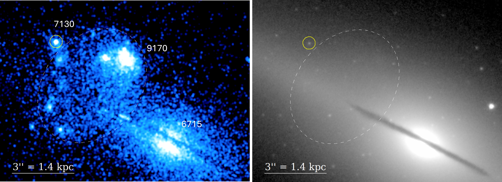 Fig03 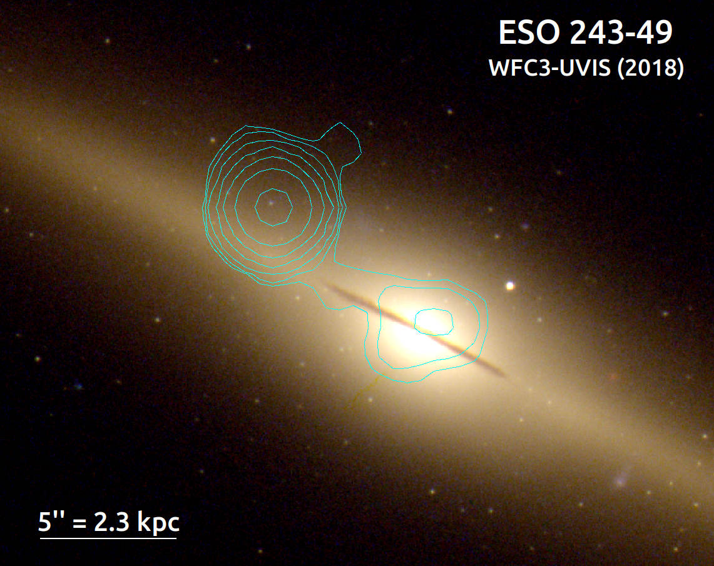 Fig04 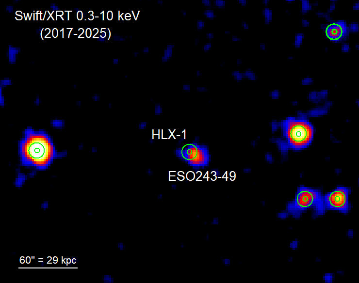 Fig11 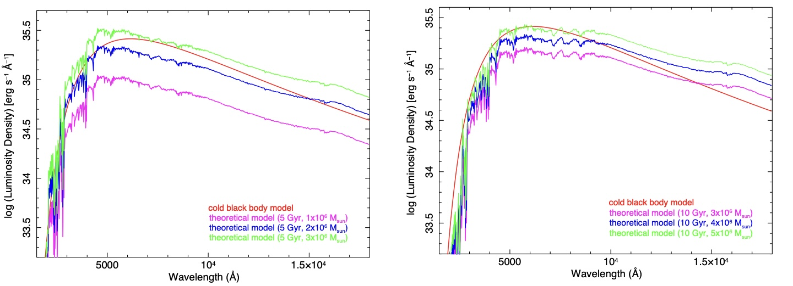 Fig12 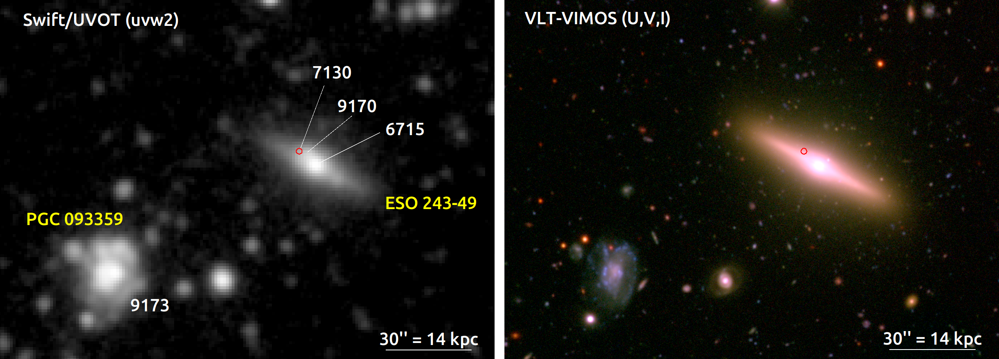 Fig02 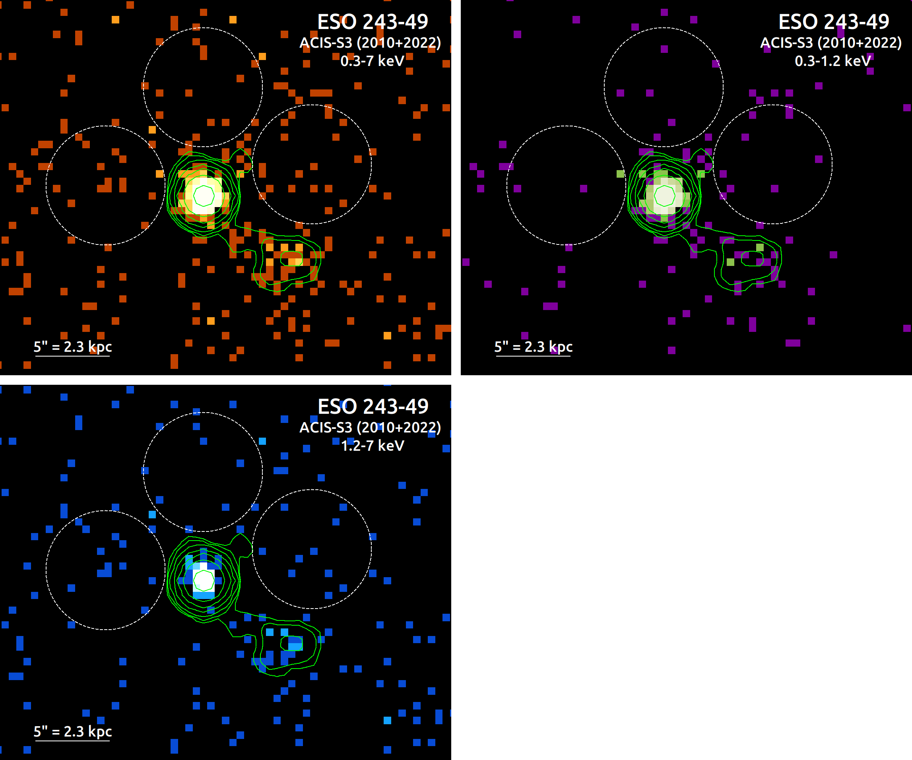 HLX-1 的同源研究非常多，主要围绕三个主题：发现和中等质量黑洞解释、反复 X 射线爆发及谱态转变、以及光学 counterpart 的星团/TDE 解释。检索时可用关键词 “ESO 243-49 HLX-1 discovery intermediate mass black hole”、“HLX-1 X-ray outbursts state transitions”、“HLX-1 optical counterpart HST star cluster” 和 “HLX-1 tidal disruption event disk instability”。这些工作构成本文的直接历史背景：本文不是重新发现 HLX-1，而是利用爆发停止后的晚期数据检验早期模型。 与相似观测相比，HLX-1 可和超亮 X 射线源、核外 TDE 候选体、以及星团中中等质量黑洞候选体放在一起讨论。相反观点主要包括：它可能是一个强超 Eddington 恒星级黑洞系统，或者一个由伴星周期性供给的中等质量黑洞 X 射线双星，而非 TDE。本文对这些观点的压力来自晚期能量预算，而不是单纯峰值光度。建议检索 “HLX-1 Roche lobe overflow model”、“HLX-1 beamed super-Eddington alternative”、“TDE disk instability recurrent flares” 来比较不同模型。 同一事件 / 同类源线索： 相似工作： （未提供） 基础理论 / 方法工作： （未提供） 相反观点 / 张力线索： （未提供） 评分由 LLM 给出初评，再由本地阈值策略过滤；IACT、TeV 伽马射线和高能中微子天文学按重点方向处理。模型拟合 / 应用方法
重点章节 / 结果段落怎么读
建议重点查看的图表
关键图表逐图导读
论文原图 / 可嵌入图片
图注：Optical detections and upper limits on the supernova and kilonova counterparts to our $z<0.3$ sample of GRBs (\(\textit{Swift}\) GRBs at $z<0.3$; \citealt{bloom05,hjorth05,berger05,Malesani+07,Kocevski+07,fynbo06,Chornock+10,rowlinson10,Melandri+12,jin15,Cano+17,michalowski18,troja18,izzo19,lamb19,troja19,hu21,rastinejad21,rastinejad22,Laskar+23,levan24a,rastinejad24a,Schroeder+25,Rossi+26}). We plot light curves in the $\approx$rest-frame $g/r$-band where available. We also plot AT\,2017gfo, the kilonova of GRB\,170817A/GW170817, and SN\,1998bw, the supernova of GRB\,980425 \(\citep{galama98,Clocchiatti+11,arcavi17,coulter17,Cowperthwaite+17,Drout+17,Diaz+17,Hu+17,Kasliwal+17,lipunov17,Pozanenko+17,Shappee+17,smartt17,soares-santos17,tanvir17,Utsumi+17,Valenti+17,villar18}.\)
对应解读：建议重点查看的图表 3；关键图表逐图导读 图2；模型拟合中关于超新星/千新星模板与观测上限的比较。
入选理由：这是最直接支撑“长暴无超新星/可能有千新星”结论的图，展示了 z<0.3 样本的光学探测和上限，并同时给出 AT2017gfo 千新星与 SN1998bw 超新星参照。它能检验观测上限是否真的压低到典型 GRB-SN 模板以下，以及是否在合适时标覆盖热瞬变峰值，比只看分类统计更关键。
来源与置信度：\(arxiv_source\)；high；\(arxiv_source\) / main.tex:figure[3]
图注：Hardness duration diagram for {\(\em\) Swift} GRBs in our sample at $z<0.5$. The background points indicate the whole {\(\em\) Swift} population. The location of bursts at $z<0.3$ are indicated in bold, while those at $0.3 < z < 0.5$ are more transparent versions of the same sample symbol. The proposed progenitor types for each burst are marked.
对应解读：建议重点查看的图表 2；关键图表逐图导读 图1；关于不能只用 T90 二分前身星的核心论证。
入选理由：该图把 Swift 低红移样本放在硬度—持续时间平面上，并标记候选前身星类型，可直接检查所谓 L-Merger 或无超新星长暴是否真正位于传统长暴区域，而不是仅靠近 2 秒边界。它是论文反思 T90 二分法的入口图。
来源与置信度：\(arxiv_source\)；high；\(arxiv_source\) / main.tex:figure[1]
图注：Volumetric rates of our {\(\em\) Swift} GRB classes ($z < 0.5$ and $z < 0.3$ is shown in opaque and moderately transparent bars, respectively) calculated using different approaches (Section~\ref{sec:rates}). The bulk differences between the techniques of a factor $\sim 2$ reflect substantial underlying uncertainty but provide general consistency in the relative rates of each progenitor channel.
对应解读：建议重点查看的图表 6；关键图表逐图导读 图5；体积率和比例估计段落。
入选理由：该图直接给出 Swift 各类 GRB 在 z<0.3 与 z<0.5 下的体积率柱状比较，并展示不同估计方法带来的约两倍系统差异。它最适合检验短暴与无超新星长暴的 on-axis 率是否处于相近量级，以及率估计的不确定性。
来源与置信度：\(arxiv_source\)；high；\(arxiv_source\) / main.tex:figure[11]
图注：The distribution of chance alignment probability of galaxies at $z<0.5$ in the legacy survey compared to {\(\em\) Swift}-XRT positions. The blue line shows the distribution of $P_{CC}$ for the complete {\(\em\) Swift}-XRT GRB catalog, the orange line shows the same, but with events already within our samples removed, while the grey lines represent cases where the XRT positions have been offset in random directions by 1 arcminute to provide a set of ``unrelated" burst locations for comparison. It is clear there are a larger number of galaxies in both GRB sets than expected by chance, suggesting there is a substantial, but uncertain population of unrecognised bursts at $z<0.5$ within the {\(\em\) Swift} sample.
对应解读：建议重点查看的图表 7；关键图表逐图导读 图6；完备性诊断和潜在遗漏低红移宿主搜索。
入选理由：该图用 Swift-XRT 位置与 z<0.5 星系的 chance alignment probability 分布比较完整目录、已剔除样本和随机偏移位置，直接支撑“样本可能只有约 50% 完备、存在未识别低红移事件”的讨论。它对理解 30%–70% 并合贡献范围的系统误差很重要。
来源与置信度：\(arxiv_source\)；high；\(arxiv_source\) / main.tex:figure[10]
图注：The X-ray (top) and optical (bottom) afterglows of GRBs witin our sample, plotted in luminosity and aboslute magnitude space. It is apparent that in both regimes the the collapsar population spans a very wide range of brightness, especially at late times. This likely reflects the low-luminosity and normal populations of GRBs, with higher luminosity events prevalent at higher redshift. In contrast the suggested merger populations are, on average, lower luminosity events without the extension to higher luminosity observed for the collapsars. This suggests that it will be more difficult to locate and study the afterglows of merger GRBs, and that, especially as one moves to higher redshift, a flux limited sample will be dominated by collapsar events.
对应解读：建议重点查看的图表 4；关键图表逐图导读 图3；余辉亮度比较段落。
入选理由：该图在 X 射线光度和光学绝对星等空间比较样本余辉，能直接查看候选并合类长暴是否平均更暗，以及这种暗弱是否同时出现在 X 射线和光学。相比单一相关图，它更贴近日报要求的余辉亮度分布比较。
来源与置信度：\(arxiv_source\)；high；\(arxiv_source\) / main.tex:figure[8]
图注：Mass and specific SFRs of GRB host galaxies for long (see Table~\(\ref{tab:host_props}\) for references) and short \(\citep{nugent22}\) GRBs, overlayed with the sample of {\(\em\) Swift} GRBs at $z<0.3$. In general it is apparent that the host galaxies of the L-Merger GRBs are substantially less star forming that those of the Collapsar bursts, and are consistent with those for S-Mergers. We also note the outlier nature of GRB 190829A which is an an exceptionally massive galaxy with a low specific SFR. However, there is apparent star formation close to the location of this GRB (e.g., \citealt{bhi24}).
对应解读：建议重点查看的图表 5；关键图表逐图导读 图4；宿主星系性质支持并合环境的段落。
入选理由：该图展示 GRB 宿主星系质量与比恒星形成率，并把低红移 Swift 样本与长暴、短暴宿主比较。它直接检验 L-Merger 宿主是否比坍缩星长暴宿主更低恒星形成、并更接近短暴宿主，是判断环境证据的重要图。
来源与置信度：\(arxiv_source\)；high；\(arxiv_source\) / main.tex:figure[9]
强相关工作
3. Spectroscopic Analysis of Fermi-detected Blazars using SDSS-V
展开详细解读：文章讲解、背景、理论、重点章节、图表与相关工作
文章详细讲解
关键结果是怎么做出来的
展开背景、理论、公式、模型、章节和图表导读
背景知识
基础理论 / 方法脉络
公式与推导
模型拟合 / 应用方法
重点章节 / 结果段落怎么读
建议重点查看的图表
关键图表逐图导读
论文原图 / 可嵌入图片

图注：Multi-component spectral decomposition revealing systematic SDSS misclassifications of \(\textit{Fermi}-detected\) blazars. Each panel shows the observed SDSS spectrum (black) with our best-fit multi-component model (coloured line) decomposed into jet continuum (orange shaded region) and thermal emission components (green/blue/cyan shaded regions for galaxy/QSO/line templates, respectively). Panel labels indicate: SDSS spectroscopic classification and redshift (top), our revised classification and redshift (NEW CLASS), and the fractional flux contributions from jet and thermal components, represented by the shaded region. \(\textbf{(a)}\) BL Lac misclassified as STAR due to extreme jet dominance ($96.5\%$), producing a featureless stellar-like continuum. \(\textbf{(b)}\) FSRQ with blueshifted emission misclassified as STAR. \(\textbf{(c)}\) BL Lac misclassified as a QSO \(\textbf{(d)}\) FSRQ with strong emission lines misclassified as a generic QSO, thereby missing its blazar nature. \(\textbf{(e)}\) FSRQ misclassified as GALAXY from diluted emission lines. \(\textbf{(f)}\) BL Lac misclassified as GALAXY. Despite a correct redshift, the jet component is unrecognized by the SDSS automated pipeline, thereby assigning a false classification.
对应解读：“建议重点查看的图表”第2项典型光谱拟合图，以及“关键图表逐图导读”图2和模型拟合段落。
入选理由：这张图直接展示多个被 SDSS 误分为 STAR、QSO、GALAXY 的 Fermi 耀变体光谱，并分解出喷流连续谱与热成分，是理解本文新管线为何优于传统模板分类的核心证据。它同时覆盖 BL Lac、FSRQ、原恒星误分和原星系/QSO 误分等关键案例，比单一对象示例更能支撑日报中关于连续谱、谱线、宿主成分和分类退化的解读。
来源与置信度：\(arxiv_source\)；high；\(arxiv_source\) / ms.tex:figure[5]
图注：\(\textit{WISE}\) colour-colour diagram for 671 sources with valid $W1, W2, and W3$ magnitudes, coloured by best-fit model classification: BL Lac candidates (PL only and PL+Galaxy; lightcoral squares, $N = 405$ of 420 with valid \(\textit{WISE}\) photometry), FSRQ candidates (PL+QSO and PL+Lines; mediumpurple circles, $N = 251$ of 266), pure QSO (orange diamonds, $N = 11$), and Galaxy (blue triangles, $N = 4$). Large markers with black edges indicate the 11 sources where SDSS classifications are retained (STAR: $N = 6$; GALAXY: $N = 2$; QSO: $N = 3$). Canonical blazar regions from \(\citet{massaro2011identification}\) and \(\citet{d2012infrared}\) (red dashed wedge) and \(\citet{salvato2018finding}\) (grey box) are overlaid. Marginal KDE distributions show the SDSS pipeline classifications (STAR: $N = 88$; GALAXY: $N = 358$; QSO: $N = 225$) as thin coloured outlines, with deep filled regions indicating the BL Lac (red) and FSRQ (purple) model compositions.
对应解读：“建议重点查看的图表”第4项 WISE 颜色-颜色图，以及详细解读中关于 88 个原 SDSS 恒星对象的独立红外验证。
入选理由：这张图以新模型分类标记 WISE 颜色空间，并叠加经典 blazar locus 和 SDSS 原分类边缘分布，最直接检验被重分类对象是否具有耀变体红外颜色。它对日报中“96.6% 原恒星误分类源落入耀变体区域、WISE 作为独立验证”的证据链最关键。
来源与置信度：\(arxiv_source\)；high；\(arxiv_source\) / ms.tex:figure[12]
图注：$\gamma$-ray luminosity versus spectroscopic redshift for BL Lac candidates (PL+Galaxy, $N = 420$, left panel) and FSRQ candidates (PL+QSO/Lines, $N = 265$, right panel), colour-coded by optical jet fraction from the multi-component spectral decomposition. Sources with spectral ${\rm S/N} < 3$ are shown with reduced opacity and smaller markers. \(\textit{Left}\): The shaded grey region ($z \gtrsim 1.8$) indicates the low-confidence redshift region, where PL+Galaxy spectral fits become poorly constrained due to the absence of strong rest-frame features in the SDSS wavelength coverage. The solid line with shaded band shows the running median with interquartile range in redshift bins, tracing how the typical $\gamma$-ray luminosity evolves with redshift across the populations. The dotted horizontal line marks the global median $L_\gamma = 1.39 \times 10^{45}$\,erg\,s$^{-1}$ at median $z = 0.360$ (S/N $\geq 3$ sources). \(\textit{Right}\): FSRQ candidates show a global median $L_\gamma = 4.23 \times 10^{46}$\,erg\,s$^{-1}$ at median $z = 1.026$ (S/N $\geq 3$ sources), a separation of approximately one order of magnitude ($\sim$ 1.5 dex) above the BL Lac median, consistent with established $\gamma$-ray luminosity functions \(\citep{ajello2014cosmic, ajello2012luminosity}.\) Running medians are shown separately for PL+QSO (magenta) and PL+Lines (cyan), revealing that PL+Lines sources sit systematically above PL+QSO sources at similar redshifts. Within the FSRQ population, PL+QSO sources ($N = 89$, median $z = 1.023$, median $L_\gamma = 6.78 \times 10^{46}$\,erg\,s$^{-1}$) show systematically higher luminosities than PL+Lines sources ($N = 125$, median $z = 1.034$, median $L_\gamma = 3.82 \times 10^{46}$\,erg\,s$^{-1}$), despite occupying similar redshift ranges. PL+Lines sources also show a higher median jet fraction ($f_{\rm jet} = 0.845$) compared to PL+QSO sources ($f_{\rm jet} = 0.618$).
对应解读：“建议重点查看的图表”第6项伽马射线光度与红移/类别分布图，以及“关键图表逐图导读”图6。
入选理由：该图直接给出 BL Lac 与 FSRQ 候选体的 γ 射线光度—红移关系、全局中位光度、运行中位数和低置信红移区域，能够检验约一个数量级光度分离是否伴随红移选择效应。它比单纯类别柱状图更适合支撑物理解释和选择效应讨论。
来源与置信度：\(arxiv_source\)；high；\(arxiv_source\) / ms.tex:figure[11]
图注：Best-fit spectral model distribution for 746 Fermi-SDSS sources, colour-coded by SDSS pipeline classification (GALAXY: blue, QSO: orange, STAR: grey). The final 707-source sample is dominated by PL+Galaxy (420; 59.4\%), PL+Lines (160; 22.6\%), and PL+QSO (106; 15.0\%) models. Pure single-component models account for 21 sources (3.0\%). 13 sources where the SDSS pipeline outperforms our multi-component approach are shown with cross-hatching (SDSS Better). Of the 420 PL+Galaxy sources, SDSS classifies 294 (70.0\%) as GALAXY and 84 (20.0\%) as STAR. The PL+Lines model shows the highest SDSS QSO classification rate (128; 80.0\%), though the SDSS pipeline cannot distinguish FSRQs from radio-quiet quasars. The PL+QSO model shows nearly equal SDSS classifications as QSO (50.0\%) and GALAXY (45.3\%), highlighting template-matching ambiguities when both broad emission lines and jet continuum are present.
对应解读：“建议重点查看的图表”第3项新旧分类交叉表或混淆矩阵，以及详细解读中关于 PL+Galaxy、PL+Lines、PL+QSO 主导比例的关键结果。
入选理由：这张图展示 746 个 Fermi-SDSS 源的最佳拟合模型族，并按 SDSS 原始 GALAXY、QSO、STAR 分类分色，直接对应 59.4%、22.6%、15.0% 等核心统计。它能说明 SDSS 原标签如何映射到喷流主导模型族，尤其突出 STAR 和 GALAXY 类中隐藏的 PL+Galaxy 耀变体。
来源与置信度：\(arxiv_source\)；high；\(arxiv_source\) / ms.tex:figure[7]
图注：\(\textit{\textbf{Left:}}\) Comparison of reduced chi-squared ($\chi^{2}_{\rm r}$) values between the SDSS automated pipeline and the multi-component spectral models developed in this work. Points are colour-coded by sample category: final blazar candidates (blue circles, $N = 707$), non-\(\textit{Fermi}\) blazar sources that passed the quality threshold (green squares, $N = 25$), \(\textit{Fermi}\) blazar sources that failed the threshold (red circles, $N = 7$), and non-\(\textit{Fermi}\) blazar sources that failed (orange squares, $N = 7$). The red dashed line marks the quality threshold $\chi^{2}_{\rm r,\,lmfit} = 3\times \chi^{2}_{\rm r,\,SDSS}$, above which sources are excluded. The inset shows $|\chi^2_{\rm r} - 1|$ for each pipeline, with our multi-component models achieving $\chi^2_{\rm r}$ closer to unity for 538 sources (72\%). \(\textit{\textbf{Right:}}\) Distribution of the fit quality ratio $\chi^{2}_{\rm r,\,lmfit}/\chi^{2}_{\rm r,\,SDSS}$, colour-coded by performance: blue (ratio $< 1$, $N = 134$, 11.3\%), green ($1 \leq$ ratio $\leq 3$, $N = 648$, 86.9\%), and red (ratio $> 3$, $N = 14$, 1.9\%).
对应解读：“建议重点查看的图表”第8项拟合残差或质量诊断表，以及模型拟合段落中关于 χ²、拟合质量阈值和失败源的讨论。
入选理由：该图比较 SDSS 管线与新多成分模型的约化 χ²，并标出质量阈值、通过与失败样本以及拟合质量比，是判断 707 个良好拟合源可靠性和排除源性质的主要质量诊断。它比普通分类统计更能支撑日报中关于模型优度、系统误差和低质量谱脆弱性的讨论。
来源与置信度：\(arxiv_source\)；high；\(arxiv_source\) / ms.tex:figure[6]
图注：Redshift ($z_{\rm fit}$; left) and jet fraction ($f_{\rm jet}$; right) distributions for BL Lac candidates (PL+Galaxy; $N = 420$; red) and FSRQ candidates (PL+QSO, $N = 106$, purple; PL+Lines, $N = 159$, blue). Solid histograms show sources with spectral ${\rm S/N} \geq 3$; dashed histograms show sources with ${\rm S/N} < 3$, which are excluded from all median calculations. Dashed vertical lines demarcate the median estimate of the source population. BL Lac candidates are concentrated at low redshifts (median $z = 0.360$) while FSRQ candidates extend to higher redshifts (median $z = 1.026$), a separation confirmed by a KS test ($D = 0.548$, $p = 3.13 \times 10^{-38}$; \citealt{feller1948kolmogorov, virtanen2020scipy}). In the jet fraction panel, BL Lac candidates display a sharply peaked distribution at $f_{\rm jet} \sim 0.9$--$1.0$ (median $f_{\rm jet} = 0.819$), indicating uniform jet dominance. PL+QSO sources show a lower median $f_{\rm jet} = 0.618$, while PL+Lines sources show a median $f_{\rm jet} = 0.845$, interpreted as an upper limit in the absence of an explicit thermal template.
对应解读：“建议重点查看的图表”第6项红移/类别分布，以及详细解读中关于 BL Lac 与 FSRQ 宇宙学距离分离和喷流占比的结果。
入选理由：这张图给出 BL Lac 与 FSRQ 候选体的红移分布和喷流占比分布，并区分高低信噪比，能够验证新分类是否恢复已知的 BL Lac 低红移、FSRQ 高红移分离。它补充 Fig11 的光度—红移图，有助于判断光度差异是否与红移分布和喷流主导程度相关。
来源与置信度：\(arxiv_source\)；high；\(arxiv_source\) / ms.tex:figure[10]
强相关工作
4. Revising Indirect Dark Matter Constraints with Updated Astrophysical $J$-Factor Priors
展开详细解读：文章讲解、背景、理论、重点章节、图表与相关工作
文章详细讲解
关键结果是怎么做出来的
展开背景、理论、公式、模型、章节和图表导读
背景知识
基础理论 / 方法脉络
公式与推导
模型拟合 / 应用方法
重点章节 / 结果段落怎么读
建议重点查看的图表
关键图表逐图导读
论文原图 / 可嵌入图片
图注：Comparison between the analytical $J$-factor penalty $\mathcal{P}$ and the corresponding estimate obtained from toy Monte Carlo simulations, $\mathcal{P}_{\rm MC}$, defined as the ratio of upper limits with profiled and fixed $J$ factor. Left: Gaussian prior on $J$, shown as a function of the relative $J$-factor uncertainty $\sigma_J/J_0$. Right: log-normal prior on $J$, shown as a function of the uncertainty on $\log{10} J$. Solid lines denote the analytical predictions from Eqs.\(\eqref{eq:gaussian_penalty}\) and \(\eqref{eq:penalty_lognormal},\) while markers show the mean over toy MC realizations, with error bars representing the standard deviation.
对应解读：对应“建议重点查看的图表”第1项，以及“关键图表逐图导读”中解析结果与玩具蒙特卡洛对比图的内容。
入选理由：这张图直接检验论文核心解析公式：横轴分别扫描高斯先验的相对J因子不确定度和对数正态先验的log10 J不确定度，纵轴是J因子惩罚项与玩具蒙特卡洛估计的比较。它同时给出解析模型线、MC标记和误差棒，最能支撑日报中关于“大J不确定度处近似边界”和“解析公式是否可靠”的解读。
来源与置信度：\(arxiv_source\)；high；\(arxiv_source\) / \(main_PRD_v10.tex\):figure[1]
图注：Upper limits on the dark matter annihilation cross section $\langle\sigma v\rangle$ as a function of the dark matter mass $m_{\rm DM}$ for the $b\bar b$ annihilation channel, for the set of targets considered in Ref.~\(\cite{abe2025prospects}.\) The black curve, together with the green ($1\sigma$) and yellow ($2\sigma$) bands, reproduces the published median expected limit including the $J$-factor uncertainty. The blue curve, together with the blue ($1\sigma$) and light-blue ($2\sigma$) bands, shows the corresponding expected limit obtained when the $J$-factor uncertainty is excluded. The red curve is obtained by multiplying the latter by the analytical $J$-factor penalty derived in Sec.~\(\ref{sec:Penalty},\) using the $J$-factor uncertainties reported in Table A5 of Ref.~\(\cite{abe2025prospects}.\)
对应解读：对应“建议重点查看的图表”第4项“已发表限制复现图”，也支撑模型拟合段落中关于J因子不确定度如何改变mχ-〈σv〉上限曲线的讨论。
入选理由：这张图以暗物质质量为横轴、湮灭截面上限为纵轴，叠加了包含J因子不确定度的发表预期限制、排除J因子不确定度的限制，以及用解析J因子惩罚恢复出的红色曲线。它能直观看出本文方法是否能重现公开限制，并展示J先验宽度对上限曲线和置信带的影响。
来源与置信度：\(arxiv_source\)；high；\(arxiv_source\) / \(main_PRD_v10.tex\):figure[3]
图注：Mean relative difference between upper limits obtained by successively applying the analytical update prescription, $\mu_{\rm rec}$, and those obtained by re-profiling the likelihood for each updated $J$-factor prior, $\mu_{\rm prof}$. The four points correspond to a sequence of log-normal $J$-factor uncertainties, $\sigma_{\log_{10}J} = 0.5,\, 0.4,\, 0.3,\, 0.2$, representative of the progressive refinement of $J$-factor determinations expected from current and forthcoming astrophysical programs. The shaded bands represent the central $68\%$ and $95\%$ intervals obtained from 500 toy Monte Carlo realizations.
对应解读：对应“建议重点查看的图表”第3项，以及“关键图表逐图导读”中连续多次重解释稳定性图的内容。
入选理由：这张图专门测试连续替换J因子先验后的数值稳定性，纵轴为解析更新结果与重新剖面似然结果的平均相对差异，并给出68%和95%区间。它直接回答日报中强调的关键风险：多次重解释是否会产生累积数值漂移。
来源与置信度：\(arxiv_source\)；high；\(arxiv_source\) / \(main_PRD_v10.tex\):figure[2]
图注：Upper limits at $95\%$ CL on the dark matter annihilation cross section $\langle\sigma v\rangle$ into the $\tau^+\tau^-$ channel as a function of the dark matter mass. The dashed colored curves show the single-target limits published by the MAGIC Collaboration~\(\cite{MAGIC:2021mog}\) for the individual dwarf spheroidal galaxies entering the combination. The black solid line corresponds to the combined limit published by the MAGIC Collaboration~\(\cite{MAGIC:2021mog}\) for the same annihilation channel, while the gray solid line shows the combined upper limit reconstructed in this work using the numerical profile-likelihood combination described in Sec.~\(\ref{sec:combibed_uls}.\)
对应解读：对应“建议重点查看的图表”第5项“多目标组合诊断图或表”，以及“关键图表逐图导读”中多目标组合图的内容。
入选理由：这张图展示MAGIC多个矮星系单目标限制、官方联合限制和本文数值剖面似然重建联合限制的比较，横轴为暗物质质量、纵轴为τ+τ−道的95% CL湮灭截面上限。它最适合支撑日报中关于多目标联合更新、单目标权重和公开信息重建组合限制能力的讨论。
来源与置信度：\(arxiv_source\)；high；\(arxiv_source\) / \(main_PRD_v10.tex\):figure[4]
强相关工作
5. Unchanged X-Ray Polarization During Accretion Dips in the Low Hard State of Cygnus X-1
展开详细解读：文章讲解、背景、理论、重点章节、图表与相关工作
文章详细讲解
关键结果是怎么做出来的
展开背景、理论、公式、模型、章节和图表导读
背景知识
IXPE 开启了 2–8 keV 成像 X 射线偏振测量，使天鹅座 X-1 这类亮源的偏振度和偏振角成为可观测量。偏振对散射平面、盘面方向和轴对称破缺敏感，因此能帮助区分不同冕几何。为什么现在值得重新看？因为过去对低硬态冕的争论主要停留在能谱-时变退化中，而偏振在暗降/非暗降之间的稳定性提供了额外约束。基础理论 / 方法脉络
公式与推导
IXPE 偏振可用归一化 Stokes 参数表示。总强度为 \(I\)，线偏振 Stokes 参数为 \(Q\) 和 \(U\)，则偏振度 \(p\) 与偏振角 \(\psi\) 为模型拟合 / 应用方法
重点章节 / 结果段落怎么读
建议重点查看的图表
关键图表逐图导读
论文原图 / 可嵌入图片
图注：Polarization comparison between dip and off-dip states. The data used in each panel are as follows: (a) combines observations 01002901 and 01250101; (b) combines observations 02008201 and 02008301; (c) incorporates 03003101, 03010001, and 03010101; (d) is based on observation 05250601. The gray shaded region denotes the radio jet direction of -27$^{\circ}\pm$8$^{\circ}$ \(\citep{2021Sci...371.1046M}.\) Allowed regions are reported at 68\% CL.
对应解读：对应“建议重点查看的图表”第6项以及“关键图表逐图导读”中关于偏振结果图、Q–U/偏振度-偏振角置信区域的核心讨论。
入选理由：这是支撑论文题目“暗降期间偏振不变”的决定性图，直接比较 dip 与 off-dip 的偏振允许区域，并给出68%置信区间及喷流方向参考。它比单纯光变或能谱图更直接检验暗降和非暗降偏振度、偏振角是否统计一致，是日报解读中最应嵌入的图。
来源与置信度：\(arxiv_source\)；high；\(arxiv_source\) / Main.tex:figure[9]
图注：Light curves and hardness ratio of Cyg~X-1 from observations in May (left) and June (right) 2022. Panels (a), (b), and (c) report the light curves from \(\ixpe,\) \(\nustar\) and \(\nicer\) observations, respectively; panel (d) is the hardness ratio of \(\ixpe.\) The time binning is 75 seconds for all of them. The shaded time intervals highlight periods when the \(\ixpe\) hardness ratio was persistently elevated, identified via a sliding-window analysis with a threshold of 2.0 standard deviations above the mean (see text).
对应解读：对应“建议重点查看的图表”第1、2项，以及“关键图表逐图导读”图1/图2关于多仪器光变曲线、硬度比和暗降选区定义的讨论。
入选理由：该图同时展示 IXPE、NuSTAR、NICER 的光变曲线和 IXPE 硬度比，并用阴影标出通过滑动窗口和2σ阈值定义的暗降区间。它能验证暗降是否有多仪器同步覆盖、是否伴随硬度升高，是理解后续谱拟合和偏振分段的基础。
来源与置信度：\(arxiv_source\)；high；\(arxiv_source\) / Main.tex:figure[2]
图注：Spectra for off-dip (left) and dip (right) time intervals.
对应解读：对应“建议重点查看的图表”第3、4项，以及“模型拟合”中关于 dip/off-dip 宽带能谱和部分遮挡吸收解释的段落。
入选理由：该图直接给出 off-dip 与 dip 时间区间的能谱，是判断暗降是否表现为能量依赖吸收、而非全能段等比例本征变暗的关键证据。它与日报中关于软能段残差、宽带谱拟合和部分遮挡模型的解读关系很强。
来源与置信度：\(arxiv_source\)；high；\(arxiv_source\) / Main.tex:figure[6]

图注：Stokes parameters for each \(\ixpe\) observation in 2--8\,keV (left), 2--3.5\,keV (center) and 3.5--8\,keV (right), with error bars at $68\%$. The epoch numbers refer to Table~\(\ref{tab:Observation_datasets},\) and the intensity colorbar is consistent with Figure~\(\ref{fig:Cyg_X-1_HID}.\)
对应解读：对应“建议重点查看的图表”第7项，以及“模型拟合”中关于2–8 keV及分能段 Stokes 参数的偏振拟合讨论。
入选理由：该图展示不同 IXPE 观测在2–8 keV、2–3.5 keV和3.5–8 keV的 Stokes 参数及68%误差棒，可用于检查能量分辨偏振是否存在明显变化趋势。虽然它不是直接的 dip/off-dip 对比，但对理解偏振稳定性和能段依赖很有价值。
来源与置信度：\(arxiv_source\)；high；\(arxiv_source\) / Main.tex:figure[3]
图注：The spectra of the off-dip (left) and dip (right) time intervals using only \(\nicer\) datasets.
对应解读：对应“建议重点查看的图表”第4、8项，以及“模型拟合”中关于 NICER 软能段、低能有效面积和吸收系统误差的讨论。
入选理由：该图使用仅 NICER 数据展示 off-dip 与 dip 能谱，可作为对软 X 射线吸收特征和仪器依赖性的补充检查。它不如 Fig06 的宽带联合能谱完整，但对验证软端通量下降是否驱动部分遮挡解释很有帮助。
来源与置信度：\(arxiv_source\)；high；\(arxiv_source\) / Main.tex:figure[10]
图注：\(\ixpe\) HID obtained by applying 75\,seconds time bins. The darker points represent the dip'' time intervals, while the lighter ones are theoff-dip'' intervals. The states of Cyg~X-1 show no significant changes between May and June 2022.
对应解读：对应“建议重点查看的图表”第1、2项，以及“关键图表逐图导读”中关于暗降与非暗降是否属于同一低硬态、是否存在本征状态变化的提醒。
入选理由：该图用75秒时间 bin 的 IXPE 硬度-强度图区分 dip 和 off-dip 区间，有助于判断暗降是否主要是局部吸收事件，而不是源整体状态在 May 和 June 2022 之间发生显著改变。其科学支撑性低于偏振和能谱图，但能补充排除状态转换的解释。
来源与置信度：\(arxiv_source\)；high；\(arxiv_source\) / Main.tex:figure[7]
强相关工作
6. Probing Neutrino Flavor Composition with the Glashow Resonance at Tau Air-Shower Neutrino Telescopes
展开详细解读：文章讲解、背景、理论、重点章节、图表与相关工作
文章详细讲解
关键结果是怎么做出来的
展开背景、理论、公式、模型、章节和图表导读
背景知识
基础理论 / 方法脉络
公式与推导
模型拟合 / 应用方法
重点章节 / 结果段落怎么读
建议重点查看的图表
关键图表逐图导读
论文原图 / 可嵌入图片
图注：{\bf{{\textit{Neutrino acceptance for TAMBO and TRINITY.}}}} The detector acceptance is shown as a function of neutrino energy for TAMBO (left and middle) and TRINITY (right) configurations. Thick solid curves correspond to the combined $\nu_\tau + \bar{\nu}_\tau$ component, medium solid curves represent the $\bar{\nu}_e$ contribution arising from Glashow resonance interactions and the thin solid lines show their sum. In the TAMBO panels, both the original design (middle) and the updated configuration (left) are shown, and we compare our calculation with the acceptance reported in Refs. \(\cite{Romero-Wolf:2020pzh,TAMBO:2025jio}\) which are displayed as dash-dotted purple lines. In the right panel, we compare the acceptance we compute with the acceptance derived from its reported neutrino flux detection sensitivity~\(\cite{Stepanoff:2025vys}.\)
对应解读：对应“建议重点查看的图表”第1项接受度随能量变化图，以及“关键图表逐图导读”图2关于有效接受度 \(A_eff(E)\) 的解读。
入选理由：该图直接给出 TAMBO 与 TRINITY 的中微子接受度随能量变化，并区分 ντ+ν̄τ 普通通道、ν̄e Glashow 共振通道及总和，是判断 6.3 PeV 附近 Glashow 贡献是否显著、以及不同实验构型探测能力的核心证据。相比单纯传播谱图，它更接近论文最终事件率与灵敏度投影所使用的折叠量。
来源与置信度：\(arxiv_source\)；high；\(arxiv_source\) / main.tex:figure[3]
图注：\textbf{\textit{Projection of the Flavor Ratio $\mathcal{R}$ for Benchmark Production Models.}} The projected measurement of $\mathcal{R}=\Phi_{\bar{\nu}_e,0}/\Phi_{\nu_\tau+\bar{\nu}_\tau,0}$ for different tested source production scenarios. The left and right panels correspond to 10~yr combined exposure of TAMBO 5000 units or TAMBO 22000 units and TRINITY, respectively. The thin and thick vertical bars denote the $90\%$ and $68\%$ C.L. intervals for each model.
对应解读：对应“建议重点查看的图表”第4项源模型通量比预测图，以及“关键图表逐图导读”图4关于不同源模型 R_eτ 投影的解读。
入选理由：该图直接展示不同 benchmark 产生模型下 R=Φ_ν̄e,0/Φ_(ντ+ν̄τ),0 的投影测量，并给出 68% 与 90% 置信区间，是判断 pp、pγ、muon-damped 等标准模型是否能被区分、以及误差条是否覆盖多个模型的最关键图。
来源与置信度：\(arxiv_source\)；high；\(arxiv_source\) / main.tex:figure[5]
图注：\textbf{\textit{Projection of the Flavor Ratio Measurement for Varying $\mathcal{R}$.}} 68\% and 90\% C.L. sensitivity intervals as a function of $\mathcal{R}$ without specifying a model. The small $\mathcal{R}$ region which corresponds to astrophysical neutrino production mechanisms with the standard neutrino oscillations is highlighted while a large $\mathcal{R}$ may arise due to new physics effects.
对应解读：对应“建议重点查看的图表”第5项 R_eτ 灵敏度或置信区间图，以及“关键图表逐图导读”图5关于十年灵敏度区间的解读。
入选理由：该图不依赖具体源模型，而是把 68% 和 90% C.L. 灵敏度区间表示为真实 R 的函数，最适合支撑日报中关于 standalone 测量主要能约束 ν̄e 丰富情形、但难以精确区分标准 pion-production 源的结论。
来源与置信度：\(arxiv_source\)；high；\(arxiv_source\) / main.tex:figure[6]
图注：{\bf{{\textit{Expected tau event numbers with 10~yrs Operation.}}}} Tau event numbers for TAMBO 5000 units (left), TAMBO 22000 units (middle), and TRINITY (right), assuming an $E^{-2.5}$ spectrum consistent with the IceCube diffuse flux measurement~\(\cite{IceCube:2015gsk}\) and an equal flavor composition of all six flavors. Thick curves denote the contribution from $\nu_\tau+\bar{\nu}_\tau$ via charged-current DIS, while medium curves represent the $\bar{\nu}_e$ contribution induced by the Glashow resonance. The thin lines correspond to the total event number.
对应解读：对应“建议重点查看的图表”第3项 TAMBO 与 TRINITY 十年事件数，以及“模型拟合”中以各通道预期事件数作为核心拟合量的段落。
入选理由：该图给出 TAMBO 5000、TAMBO 22000 和 TRINITY 在十年运行下的预期 tau 事件数，并分解为 ντ+ν̄τ DIS 与 ν̄e Glashow 共振贡献。它直接检验事件数是否有限、统计误差是否主导模型区分能力，是解释置信区间宽度和源模型区分困难的重要依据。
来源与置信度：\(arxiv_source\)；high；\(arxiv_source\) / main.tex:figure[4]
图注：{\bf{\textit{Energy Spectra at Surface for mountain-skimming neutrinos.}}} Energy spectra of particles emerging after neutrino propagation through 12~km of standard rock. The neutrino injection of a flat spectrum $E^{-2}$ covers an energy range 3-14~PeV. The left panel is the simulated result of injecting $\nu_\tau+\bar{\nu}_\tau$, while the middle panel is that from injecting $\bar{\nu}_e$. The injected $\nu_\tau+\bar{\nu}_\tau$ flux is normalized to twice the injected $\bar{\nu}_e$ flux, corresponding to an equal flavor composition benchmark, where the black dashed lines indicate the injection level. The fluxes of neutrinos of all flavors and the final tau leptons (red) are displayed. The right panel shows the tau fluxes generated from the $\bar{\nu}_e$ and $\nu_\tau+\bar{\nu}_\tau$ fluxes for comparison.
对应解读：对应“建议重点查看的图表”第2项 mountain-skimming 几何优势，以及“关键图表逐图导读”图3关于短岩石路径使 Glashow 诱导 tau 更容易出射的解读。
入选理由：该图展示 mountain-skimming 中微子穿过 12 km 标准岩石后的表面能谱，分别比较 ντ+ν̄τ 注入和 ν̄e 注入产生的最终 tau 通量，可直接说明山体掠射短路径下 Glashow 通道在传播后仍能产生可见 tau，是理解山体掠射优于地球掠射的物理诊断图。
来源与置信度：\(arxiv_source\)；high；\(arxiv_source\) / main.tex:figure[1]
图注：{\bf{{\textit{Energy Spectra at Surface for Earth-skimming neutrinos.}}}} Same as Fig.~\(\ref{fig:sim_result}\) but for Earth-skimming neutrinos arrived $4^\circ$ below the horizon.
对应解读：对应“建议重点查看的图表”第2项 Earth-skimming 与 mountain-skimming 几何比较，以及“关键图表逐图导读”图3关于长路径导致 Glashow 事件难以出射的解读。
入选理由：该图与 Fig01 构成直接对照，展示 4° below horizon 的 Earth-skimming 传播后表面能谱。通过和 mountain-skimming 情况比较，可以支撑日报中关于长岩石路径会削弱高截面 Glashow 通道可见 tau 出射概率、几何路径窗口比总靶质量更关键的论述。
来源与置信度：\(arxiv_source\)；high；\(arxiv_source\) / main.tex:figure[2]
强相关工作
7. X-ray and optical decline of the intermediate mass black hole HLX-1
展开详细解读：文章讲解、背景、理论、重点章节、图表与相关工作
文章详细讲解
关键结果是怎么做出来的
展开背景、理论、公式、模型、章节和图表导读
背景知识
基础理论 / 方法脉络
公式与推导
模型拟合 / 应用方法
重点章节 / 结果段落怎么读
建议重点查看的图表
关键图表逐图导读
论文原图 / 可嵌入图片
图注：Top panel: {\it{HST}}/ACS image in the far-UV F140LP band (centered at $\lambda \approx 1500$\,\AA), built from a stack of all five observations (Table \ref{tab:hst_mag_results}); north is up and east to the left. HLX-1 is circled in yellow. The stacked image highlights the extended elliptical region of far-UV emission (size of $\approx$6$^{\prime\prime} \times 4^{\prime\prime}$) between HLX-1 and the nucleus of ESO\,243-49, noted in earlier studies \(\citep{wiersema10,mapelli13b,soria13,webb17}.\) The labels indicate the heliocentric recession speeds $cz$ (in km s$^{-1}$) of the three main structures in the field: the nucleus of ESO\,243-49, the brightest part of the far-UV emitter, and HLX-1 (the last one based on a single emission line tentatively identified as H$\alpha$; \citep{wiersema10,soria13}). Bottom panel: {\it{HST}}/WFC3 image of the same field in the F555W band; the dashed white ellipse guides the eye to the approximate extent of the far-UV emitting region. No stellar structure distinct from ESO\,243-49 is visible in this or any other optical image.
对应解读：对应“建议重点查看的图表”第4、7项，以及关键图表导读中的“图5：HST形态图”和环境/形态测光讨论。
入选理由：这张HST远紫外与光学对比图直接展示HLX-1、ESO 243-49核以及邻近远紫外发射结构的空间关系，是判断远紫外源是否为扩展环状/椭圆状恒星形成结构而非点源或PSF残差的核心图。它还标注了不同结构的退行速度，能支撑日报中关于HLX-1环境、旁边远紫外结构及其可能物理关联的讨论。
来源与置信度：\(arxiv_source\)；high；\(arxiv_source\) / main.tex:figure[9]
图注：{\it{Chandra}}/ACIS count-rate contours (cyan) from the merged 2010 and 2022 datasets, overplotted on an {\it{HST}}/WFC3 image of ESO \,243-49 from 2018 (red = F775W; green = F555W; blue = F390W). The contours have been smoothed with a 3-pixel Gaussian kernel. While {\it{Chandra}} resolves the two X-ray contributions (point-like and strongly variable emission from HLX-1 on the left, extended and roughly constant from the galaxy bulge on the right), {\it{Swift}} can only monitor the sum of the two components. The faint star-like source near the peak of the {\it{Chandra}} contours is the optical counterpart of HLX-1.
对应解读：对应“建议重点查看的图表”第1、4项，以及关键图表导读中的长期X射线低态、HST counterpart空间分离和Swift/Chandra一致性问题。
入选理由：该图把Chandra X射线等值线叠加在HST三色图上，清楚显示HLX-1点状X射线源、星系核扩展X射线贡献和光学counterpart的位置关系。它特别说明Swift无法分辨HLX-1与星系核总通量，因此对理解2017年后低态监测、仪器混合污染和光学 counterpart 可信定位非常重要。
来源与置信度：\(arxiv_source\)；high；\(arxiv_source\) / main.tex:figure[3]
图注：Comparison between the centroid of HLX-1 (and a few neighbouring sources) in the stacked {\it{Swift}}/XRT image built with data from 2008 to 2017 August, including all the outbursts, and in a image built only from the data after the last outburst (2017 September onwards). The false colour map is from the post-2017 data; the green circles map the centroid of the main sources in the 2008--2017 dataset. For each source, the smaller circle has a radius of 2\farcs5, and the larger one a radius of 8$^{\prime\prime}$ (approximate distance between HLX-1 and nucleus of ESO\,243-49). The fitted position of all the sources in the post-2017 map (also those outside the small frame shown here) is consistent with the corresponding position in the pre-2017 map, within 2\farcs5, except for HLX-1, which is significantly offset. This is further evidence that the post-2017 emission is dominated by emission from ESO\,243-49 rather than from HLX-1.
对应解读：对应“建议重点查看的图表”第1项，以及关键图表导读中关于2017年后低态平台和Swift数据解释的陷阱。
入选理由：这张图直接比较Swift在爆发期和2017年后的质心位置，显示后期Swift信号相对HLX-1发生偏移，更可能由ESO 243-49贡献主导。它是解释HLX-1后期X射线低态、避免把Swift混合通量误读为HLX-1真实恢复的重要诊断图。
来源与置信度：\(arxiv_source\)；high；\(arxiv_source\) / main.tex:figure[4]
图注：Comparison between the luminosity density of the best-fitting, constant, cool blackbody component in our model (red line; parameters from Table \ref{tab:source_radii}) and those of old globular clusters across a range of masses and ages. In the top panel, we show the theoretical luminosity densities of a 5-Gyr-old cluster with masses of 1, 2 and 3 $\times 10^6 M_\odot$ (magenta, blue and green spectra, respectively). In the bottom panel, we show the same for a 10-Gyr-old cluster with masses of 3, 4 and 5 $\times 10^6 M_\odot$. All cluster spectra were computed with {\sc{starburst99}} \(\citep{leitherer99,leitherer14},\) assuming solar metallicity and instantaneous star formation with Kroupa IMF.
对应解读：对应“建议重点查看的图表”第5、8项，以及模型拟合段落中红色稳定分量与老年星团恒星族模型的讨论。
入选理由：该图比较恒定冷黑体/红色分量与不同年龄、质量老年星团的理论光谱，直接支撑日报中“红端由老年大质量星团贡献”的解释。虽然它不是完整多历元光学/紫外SED分解图，但在现有候选图中最接近恒星族模型参数和红色分量物理自洽性的证据。
来源与置信度：\(arxiv_source\)；high；\(arxiv_source\) / main.tex:figure[11]
图注：Top panel: stacked {\it{Swift}}/UVOT image in the {\it{uvw2}} band (centered at $\lambda \approx 2000$ \AA), also showing excess emission between HLX-1 and the nucleus of ESO\,243-49, consistent with the flux measured from the {\it{HST}}/ACS F140LP image. Moreover, the image highlights the presence of a neighbouring late-type galaxy, PGC\,093359, $\approx$80$^{\prime\prime}$ south-east of ESO\,243-49, with a distorted structure, active star formation, and the same redshift ($cz \approx 9170$ km s$^{-1}$: \citealt{1992AJ....104..495M}) as the far-UV region near HLX-1. The position of HLX-1 is marked by a red circle. We have labelled the heliocentric radial velocities (in km s$^{-1}$) of the four main actors of our story: ESO\,243-49, HLX-1, the far-UV-emitting region between ESO\,243-49 and HLX-1, and PGC\,093359. Bottom panel: the same field seen by the VIMOS camera on the VLT (red = $I$ band; green = $V$ band; blue = $U$ band).
对应解读：对应“建议重点查看的图表”第7项，以及详细解读中关于远紫外结构、PGC 093359和可能高速相互作用/碰撞场景的环境讨论。
入选理由：这张宽视场UVOT/VLT图展示了HLX-1附近远紫外过量、ESO 243-49、PGC 093359及其相近红移环境，有助于判断远紫外结构是否与更大尺度星形成或相互作用有关。其科学价值主要在环境解释层面，弱于Fig09的HST高分辨形态证据。
来源与置信度：\(arxiv_source\)；high；\(arxiv_source\) / main.tex:figure[12]
图注：Left: {\it{Chandra}}/ACIS map in the 0.3--7.0 keV band, from the stacked 2010 plus 2022 data, with Gaussian-smoothed contour levels. HLX-1 is the upper (point-like) source. Dashed white circles represent the composite background region used for the spectral extraction of HLX-1. Middle: 0.3--1.2 keV map, from the same data; the contours are those for the full energy band. Right: 1.2--7.0 keV map, with full-band contours. In all panels, north is up and east to the left.
对应解读：对应模型拟合段落中的X射线谱/通量提取、背景区域选择和Chandra低态成像诊断。
入选理由：该图展示Chandra全能段、软能段和硬能段图像及HLX-1谱提取背景区域，有助于理解低态X射线通量测量的空间分离和背景处理。它不直接给出长期光变或再处理比例，但能补充说明X射线低态光度估计的观测基础。
来源与置信度：\(arxiv_source\)；high；\(arxiv_source\) / main.tex:figure[2]
强相关工作
说明